扉页
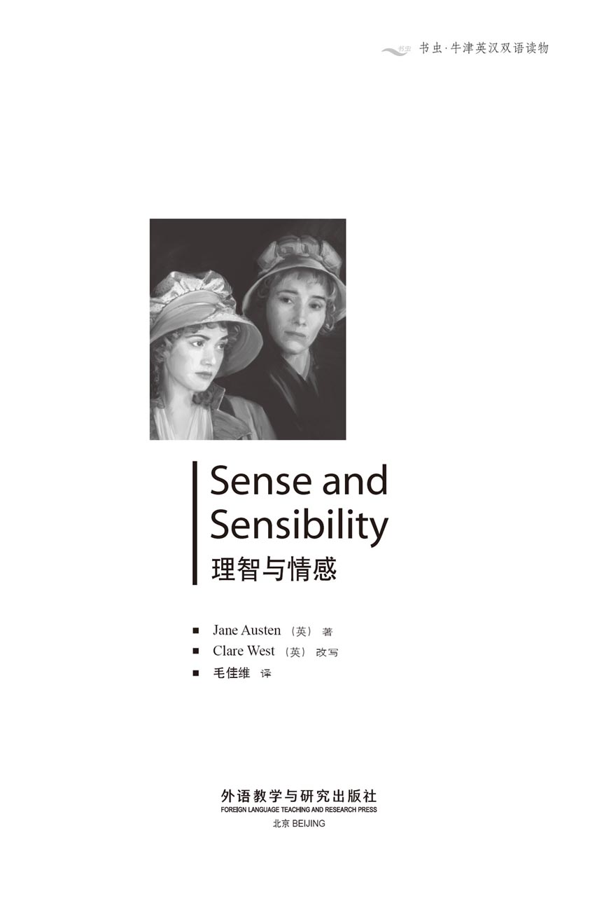
版权页
京权图字01-2006-3304
Originally published by Oxford University Press, Great Clarendon Street, Oxford. © 2002 This edition is licensed for sale in the People's Republic of China only and not for export therefrom.
'Oxford' is a registered trademark of Oxford University Press.
只限中华人民共和国境内销售，不包括香港特别行政区、澳门特别行政区及台湾省。不得出口。
图书在版编目（CIP）数据
理智与情感＝Sense and Sensibility／（英）奥斯汀（Austen, J.）著；（英）韦斯特（West, C.）改写；毛佳维译．—北京：外语教学与研究出版社，2007.10（2014.10 重印）
（书虫·牛津英汉双语读物）
ISBN 978-7-5600-7015-5
Ⅰ．理… Ⅱ．①奥…②韦…③毛… Ⅲ．①英语—汉语—对照读物②长篇小说—英国—近代 Ⅳ．H319.4：I
中国版本图书馆CIP数据核字（2007）第160539号
出版人： 蔡剑峰
责任编辑：周 晶
封面设计：孙莉明
出版发行：外语教学与研究出版社
社 址：北京市西三环北路19号（100089）
网 址：http://www.fltrp.com
版 次：2007年10月第1版
书 号：ISBN 978-7-5600-7015-5
* * *
凡侵权、盗版书籍线索，请联系我社法律事务部
举报电话：（010）88817519
电子邮箱：banquan@fltrp.com
法律顾问：立方律师事务所 刘旭东律师
中咨律师事务所 殷 斌律师
内容简介
内容简介
如果你心中怀有强烈的感情，是否该急切而热烈地向全世界表达出来？这样做是否明智？如果你在他人面前总是面容镇定，语调从容，这是否意味着你的心中缺乏激情的火焰呢？
达什伍德姐妹被迫和寡母一起搬到德文郡，离开原来的家让她们十分难过，但如今那处房产已归她们富有的异母兄长所有。两姐妹虽然一贫如洗，却不乏爱慕者——腼腆的爱德华·费拉尔斯，浪漫英俊的威洛比先生，以及忧郁而沉默的布兰登上校。
然而真爱的旅途并非一帆风顺。婚姻的希望破灭了，罪恶的秘密凸现出来，心破裂成碎片。两姐妹中哪一位对此有着更强烈的感受呢？是镇定、理性、勇敢地微笑着却一言不发的埃莉诺，还是浪漫、激烈而感情澎湃地哭泣到天明的玛丽安娜？
SENSE AND SENSIBILITY
SENSE AND SENSIBILITY
If you have strong feelings, is it better to express them, eagerly and passionately, to the whole world? Is it wise? And if you always show the world a calm face and a quiet voice, does this mean there is no passion, no fire in your heart?
When the Dashwood sisters have to move to Devon with their widowed mother, they are sad to leave the family home, now owned by their wealthy half-brother. The girls are quite poor, but they still have several admirers. There are shy Edward Ferrars, the romantic and handsome Mr Willoughby, and the sad and silent Colonel Brandon.
But the course of true love does not run smoothly at first. Hopes of marriage disappear, guilty secrets come to light, hearts are broken. But which sister feels it more? Calm and sensible Elinor, smiling bravely and saying not a word—or romantic Marianne, sobbing wildly and passionately all night long...
目录
1．The Dashwood family
1
The Dashwood family
For very many years there had been Dashwoods living in Sussex, in the south of England. The family owned a large area of land around their country house, Norland Park. Recently the head of the family, an unmarried man of great age, had invited into his home his nephew, who was expected to inherit the house and land, with his wife and children. The nephew, Mr Henry Dashwood, and his wife behaved kindly and thoughtfully towards the old gentleman, not from interest in his fortune, but from goodness of heart, so that he was able to spend his last years comfortably with these pleasant and cheerful companions.
By his first wife Mr Henry Dashwood had one son, John; by his present wife, three daughters. John, a respectable, serious young man, had received a large inheritance from his mother, and had also added to his wealth by his own marriage. To him, therefore, the Norland fortune was not as important as to his sisters, who had very little money of their own.
When the old gentleman died, it was discovered that he had not left his fortune to Henry Dashwood to do what he liked with, but only to use during his lifetime. On Henry Dashwood's death, the inheritance would pass to his son John, and to John's son, a child of four years old. The old man had become fond of the small boy on his occasional visits to Norland, and so a spoilt child was preferred to Henry Dashwood's gentle wife and daughters, in spite of their years of loving care. No unkindness had been intended, however, and as a sign of his affection for the girls, the old gentleman left them one thousand pounds each.
At first Mr Henry Dashwood was bitterly disappointed, as he had wanted the fortune more for his wife and daughters than for himself. But he soon realized that if he was careful with money in the next few years, he could save enough to provide generously for his family. Unfortunately, he did not live to carry out this plan, as he survived his uncle by only one year, and ten thousand pounds was all that remained for his widow and daughters.
Just before his death he sent for his son, and begged him to take care of his stepmother and sisters. Mr John Dashwood had not the strong feelings of the rest of the family, but such a request at such a time naturally had an effect on him, so he promised to do everything he could to make his father's family comfortable. He was not a bad young man, but rather cold-hearted, and rather selfish, although he was, in general, well respected. If he had married a pleasanter woman, he would probably have been even more respected and perhaps have become pleasanter himself, but his wife was colder and more selfish than he was.
As soon as his father was dead and buried, Mrs John Dashwood arrived unexpectedly at Norland with her child and her servants. She wished to make it clear that, as the house belonged to her husband from the moment of his father's death, she did not need any invitation from her mother-in-law. To a widow in Mrs Dashwood's situation, this appeared unforgivable. In fact, Mrs Dashwood, a sensitive and generous woman, felt so strongly about her daughter-in-law's unpleasant behaviour that she would have left the house immediately, if her eldest daughter had not begged her to reconsider.
Elinor, this eldest daughter whose advice was so useful, had a great deal of intelligence and common sense and, although only nineteen, frequently acted as her mother's adviser. To the advantage of the whole family, she was often able to persuade Mrs Dashwood to hold back the violent enthusiasms which were likely to lead them all into difficulties. Elinor had an excellent heart, full of affection, and although her feelings were strong, she knew how to control them. This was something which her mother had not yet learnt to do, and which Marianne, one of her sisters, had decided never to learn.
Marianne was, like Elinor, generous, clever, and sensitive, but, unlike Elinor, she was eager in everything; her feelings were always strongly felt and expressed. In this, she was very similar to her mother. Elinor saw with concern how little her sister could control her feelings, but her mother loved Marianne for her sensibility. Now, after Mr Henry Dashwood's death, Mrs Dashwood and Marianne encouraged each other in the violence of their unhappiness, becoming more and more miserable as they remembered the past and thought bitterly of the future. Elinor, too, suffered deeply, but she could still make an effort to discuss business with her brother, be polite to her sister-in-law, and try to persuade her mother to be calmer.
The youngest sister, Margaret, was a pleasant girl of thirteen, but as she already had some of Marianne's sensibility and not much of her intelligence, she seemed likely to grow up without her sisters' advantages.
Mrs John Dashwood now made sure that everyone knew she was mistress of Norland, and that her mother-in-law and sisters-in-law were there as visitors. Her husband, however, reminded her of the promise he had given to his dying father, that he would take care of his stepmother and sisters.
'I had thought, my dear,' he added, 'of giving the girls one thousand pounds each. It would certainly be a generous present for them.'
Mrs John Dashwood did not at all, approve of this. It would mean taking three thousand pounds from the fortune of their dear little boy. She begged her husband to think again. How could he rob his child, and his only child too, of so much money? And how could the Miss Dashwoods, who were related to him only by half blood, which she considered no relation at all, possibly expect him to be so generous?
'It was my father's last request to me,' replied her husband. 'I must keep my promise to him. I must do something for them when they leave Norland for a new home.'
'Well, then, do something for them, but you need not give them three thousand pounds. Consider that when you have given the money, it will never come back. Your sisters will marry, and it will be gone from the family for ever.'
'You are right, my dear,' said her husband seriously. 'Perhaps I should give them half that. Five hundred pounds would be a valuable present for them.'
'Oh, beyond anything! What brother on earth would do half as much for his sisters, even if really his sisters! And as it is—only half blood!—But you have such a generous nature!'
'I would not wish to do anything mean. It is better, on such occasions, to do too much, rather than too little. Even they themselves cannot expect more.'
'There is no knowing what they may expect,' said the lady, 'but the question is, what you can afford to do.'
'Certainly, and I think I can afford to give them five hundred pounds each. As it is, without my money, they will each have more than three thousand pounds on their mother's death; a very comfortable fortune for any young woman.'
'Indeed it is, and in fact I begin to think they need no extra money at all. They will be able to live very comfortably together on the interest of their ten thousand pounds.'
'That is very true, and therefore I wonder whether on the whole it would be more advisable to pay some money regularly to my stepmother during her lifetime, instead of giving money to the girls. A hundred a year would make her, and the girls while they live with her, perfectly comfortable.'
His wife hesitated a little over this plan. 'That is certainly better than giving fifteen hundred pounds all at once, but if Mrs Dashwood should live for longer than fifteen years, it would cost us more. She is very fit and healthy, and only just forty. And it is an unpleasant thing to have to pay the money out every year. One feels one's fortune is not one's own.'
'I believe you are right, my love. Whatever I can give them occasionally will be of far greater assistance than a yearly allowance, because they would only live more expensively if they felt sure of receiving a larger income. If I give them a present of fifty pounds now and then, I will, I think, be keeping my promise to my father in the fullest manner.'
'To be sure you will. Indeed, to tell the truth, I am certain your father had no idea of your giving them any money at all. The assistance he was thinking of was, I dare say, looking for a comfortable small house for them, helping them to move their furniture, and sending them occasional presents of fish and meat in season. Do consider, Mr Dashwood, how very cheaply they will live! No carriage, no horses, and only one or two servants! I cannot imagine how they will spend half their money, and it is foolish to think of giving them more. They will much more be able to give you something.'
'I believe you are perfectly right,' said Mr Dashwood. 'Now I understand clearly what my father meant.' And he decided to offer no more to his father's widow and daughters than such neighbourly assistance as his wife suggested.
Meanwhile, his stepmother, impatient to leave Norland, which held so many memories for her, had been looking for a suitable house to move into, not too far away. Several houses which she would have approved had already been turned down by Elinor, as too large for their income, and the search continued. Six months passed, with the two families living at Norland. Mrs Dashwood came to dislike her daughter-in-law more and more, and would have found it impossible to live in the same house with her for so long, if something had not happened to make Mrs Dashwood want to keep her daughters at Norland for a while.
She had noticed a growing attachment between her eldest girl and Mrs John Dashwood's brother, a gentlemanly and pleasing young man, who had come to Norland soon after his sister's arrival, and who had spent the greater part of his time there since then. Edward Ferrars was the elder son of a man who had died very rich, but his future wealth was uncertain because the whole of his fortune depended on his mother's wishes. Neither of these facts influenced Mrs Dashwood; it was enough for her that he loved her daughter, and that Elinor returned his affection.
Edward Ferrars was not handsome, nor were his manners especially pleasing at first sight, but when he lost his shyness, his behaviour showed what an open, affectionate heart he had. His mother and sister wanted him to make a fine figure in the world in some way, but Edward was not ambitious. All his wishes were for home comforts and the quietness of private life. Fortunately he had a younger brother, Robert, who was more promising.
Mrs Dashwood completely approved of Edward, in spite of his quiet manner, which was so unlike the way she felt a young man should behave. As soon as she saw the smallest sign of love in his behaviour to Elinor, she considered their serious attachment as certain, and looked forward to their marriage in the near future.
'In a few months, my dear Marianne,' she said, 'Elinor will be married. We shall miss her, but she will be happy.'
'Oh mama! How shall we manage without her?'
'My love, we shall live within a few miles of her, and see her every day. You will have a brother—a real, affectionate brother. But you look serious, Marianne. Do you disapprove of your sister's choice?'
'Perhaps I am a little surprised, mama. He is very pleasant, but there is something missing. There is no fire in his eyes. And I am afraid, mama, he has no real taste. He does not seem very interested in music, and I think he knows little of drawing or painting. And he is so calm when we discuss or read beautiful writing! It breaks my heart to hear him talk so quietly and with so little sensibility about things that matter so much to me. I could not be happy with a man who does not share all my feelings. Elinor may be happy with him, as she has not my feelings. But mama, the more I know of the world, the more I am certain I shall never see a man I can really love.'
'Remember, my love, you are not seventeen yet. It is too early in life to lose hope of happiness. Why should you be less fortunate than your mother?'
Elinor herself felt that Edward stood very high in her opinion. She believed that he also felt warmly towards her, but she was not sure enough of this to be comfortable with her sister's and mother's dreams of marriage for her. Edward sometimes appeared strangely depressed when he was with her, which worried her a little. She knew that his mother was making life difficult for him, and would perhaps disapprove of his marrying a woman with no great fortune. But sometimes she feared that he thought of her as no more than a friend.
Marianne and her mother had no such doubts, believing strongly that any intelligent young man must love Elinor, and that love itself would solve all problems. Marianne, indeed, was quite horrified when her sister cautiously described her feelings for Edward as liking and respect, rather that love.
'Like him! Respect him!' she cried. 'Oh, cold-hearted Elinor! Why should you be ashamed of expressing love?'
Mrs John Dashwood had also noticed the attachment between her brother and Elinor. It made her uneasy, and she took the first opportunity of upsetting her mother-in-law by explaining her family's high ambitions for Edward and the importance of his marrying well, and the danger for any young woman attempting to trap him into marriage. Mrs Dashwood could not prevent herself from giving a sharp answer, and left the room at once, determined, in spite of the inconvenience, to remove herself and her daughters from Norland as soon as possible.
On the same day, she received a letter from Sir John Middleton, a gentleman who was a distant relation of hers. He wrote to offer her a small house near his home in Devonshire, where she and her girls could make their new home. Although it was only a cottage, he promised to do anything necessary to make it more comfortable. His letter was written in such a friendly way, and she was so anxious to leave Norland and her unfeeling daughter-in-law, that, after first asking Elinor's opinion, Mrs Dashwood wrote to accept Sir John Middleton's kind offer.
thoughtfully adv. always thinking of the things you can do to make people happy or comfortable 体贴地，关心地
inheritance n. money, property etc that you receive from someone who has died 继承的遗产
spoilt adj. someone, especially a child who is spoilt is rude and behaves badly because their parents have always given them what they want and allowed them to do what they want 宠坏的
sensitive adj. easily hurt, upset, or offended by things that people say （感情）易受伤害的
mistress n. the female owner of a house 女主人
afford v. to have the financial means for 有经济实力于……
advisable adj. to be recommended; sensible 可取的，明智的
in season if vegetables or fruit are in season, it is the time of year when they are ready to eat （蔬菜、水果、肉类）当令，应时
make a fine figure to be outstanding 超群出众
ambitious adj. determined to be successful, rich, powerful, etc 野心勃勃的
promising adj. showing signs of being successful in the future 很有前途的
taste n. someone's judgement about what is good or suitable when they choose clothes, music, etc （对衣服、音乐等的）鉴赏力，品味
horrify v. to make someone feel very shocked and upset or afraid 使震惊
sharp adj. severe, angry, and criticizing 尖锐的，严厉的
达什伍德一家
1．达什伍德一家
达什伍德家族多年来一直居住在英格兰南部的萨塞克斯郡。这个家族在他们的乡间别墅诺兰庄园周围拥有一大片土地。家族的族长是一位单身老人，他最近将他的侄子及其妻儿请到家里。他侄子名叫亨利·达什伍德，将继承庄园和地产，他和妻子和善体贴地对待这位老人并不是出于自身利益的考虑，而是完全发自内心的善意，想让老人能够在他们的陪伴下愉快地安度晚年。
亨利·达什伍德先生与他的第一任妻子有一个儿子，名叫约翰。他与现任的太太育有三个女儿。约翰是一位受人尊敬的、严肃的青年，他不但从她母亲那儿继承了一大笔遗产，而且通过婚姻使自己的财富进一步增长。因此，诺兰庄园对于他来说，远不如对他囊中羞涩的妹妹们来的重要。
那位老人死后，大家发现他并没有把他的产业留给亨利·达什伍德任意处置，而是规定亨利·达什伍德只在生前拥有使用权，他死后，这份遗产将传给他的儿子约翰，然后传给约翰4岁的儿子。这个孩子虽然只是偶尔来诺兰庄园，但老人却十分宠爱他。这个被宠坏的孩子比起亨利·达什伍德温柔的太太和女儿们更受老人的青睐，尽管她们多年来一直悉心照料着他。然而，这并不是老人存心的不善之举，为表达他对几位女孩的感情，他遗赠给她们每人一千英镑。
起初，亨利·达什伍德先生极为失望，因为他更希望妻子和女儿们得到这份遗产，而非他自己。但他很快就意识到，如果他在今后的几年中谨慎理财，就能够积攒下足够的钱让家人过上优越的生活。不幸的是，他没能活着完成这个计划，他在他叔叔去世后仅仅一年就撒手人寰了，只给他的遗孀和女儿留下了一万英镑。
临死前，他将儿子叫到跟前，请求他照顾继母和妹妹们。尽管约翰·达什伍德先生对家里的其他成员没有多少感情，但那样一个请求在那种时刻提出来，自然会让他为之所动。于是他保证尽力使他父亲的家人过舒适的日子。他并不是一个品行恶劣的年轻人，只是比较冷漠和自私，尽管他总的来说颇受人尊敬。如果他当初娶的是一位比较讨人喜欢的太太，他或许会更受人尊敬，他自己说不定也会更加讨人喜欢。但他的太太却是一个比他更冷漠，更自私的人。
他父亲去世并安葬后，约翰·达什伍德夫人出人意料地带着孩子和仆人来到诺兰庄园。她想要向大家挑明，既然这房子从她公公去世那一刻起就归她丈夫所有，没有她婆婆的邀请她也能来。对一位身在达什伍德夫人这般处境中的寡妇来说，这种行为看来是不可原谅的。事实上，敏感而慷慨的达什伍德夫人对儿媳招人厌的行为十分不满，要不是她的长女求她三思，她会立即搬出去。
长女埃莉诺的建议总是很有用，她拥有非凡的智慧和判断力。虽然只有19岁，她却常常能为母亲出谋划策。为了全家的利益，她总是能说服达什伍德夫人克制冲动，因为头脑发热有可能将她们全部引入困境。埃莉诺善良而富有爱心。尽管有着强烈的情感，但她懂得如何驾驭它们。而这一点正是她母亲还未曾学会，而妹妹玛丽安娜决定永远都不去学的。
玛丽安娜与埃莉诺一样慷慨、聪颖、敏感，但她与埃莉诺的不同之处在于她无论做什么事都很急切。她有着强烈的感情，并将它们用同样强烈的方式表达出来。在这一点上，她很像她的母亲。埃莉诺为妹妹不会控制自己的情感而担忧，但她母亲却喜爱玛丽安娜的敏感。眼下，在亨利·达什伍德先生死后，达什伍德夫人与玛丽安娜相互影响，加深了对方的苦恼。回想起过去的岁月，再苦闷地想到未来，她们愈发陷入痛苦的深渊。尽管埃莉诺也感到深深的痛楚，但她仍然能够努力地与兄长谈正事，礼貌地对待嫂子，并尽力劝说母亲镇定下来。
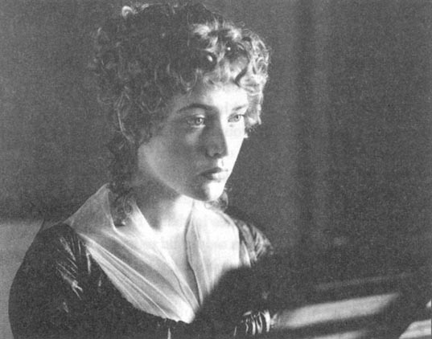
三姐妹中年龄最小的玛格利特13岁，是个很讨人喜欢的小女孩。由于她已经有点儿像玛丽安娜那样敏感但却远不如姐姐聪明，长大后可能不如姐姐出色。
约翰·达什伍德夫人现在确信每个人都已经明白她才是诺兰庄园的女主人，而她婆婆和三位小姑只是借住在那里的访客而已。然而，她丈夫提醒她不要忘了他曾经向临死的父亲许诺照顾继母和妹妹们。
“亲爱的，我考虑过，”他补充说，“给三个姑娘每人一千英镑。那对于她们来说一定是件慷慨的礼物。”
约翰·达什伍德夫人根本不赞同这个想法。这样做意味着从他们宝贝儿的财产中拿走整整三千英镑。她恳求她丈夫三思而后行。他怎能从他的孩子，而且是他唯一的孩子手中抢走那么多钱呢？那几个姑娘与他仅有同父异母的血缘关系，她认为她们根本算不上亲戚，她们又怎能期望他如此慷慨？
“这可是父亲对我的临终请求啊，”她丈夫回答道，“我必须信守诺言。她们离开诺兰庄园迁往新居时我必须为她们做些什么。”
“好吧，那你就为她们做些什么，但你也用不着给她们整整三千英镑啊。你得考虑到钱一旦给了，就再也回不来啦。你的妹妹们迟早会嫁人的，这笔钱就从家族中永久流失了。”
“你说的对，亲爱的，”她丈夫严肃地说，“或许我应该把给她们的钱减半。给每人五百英镑对她们来说也算厚礼了。”
“哦，那绝对是厚礼！世上有哪位兄长能为他的妹妹们，即便是亲妹妹，做你要做的一半那么多呢？更何况她们跟你只有一半的血缘关系！你真是慷慨！”
“我不想太吝啬。在现在这种情况下做得太多总比做得太少好。即使她们自己也没期望我做得更多。”
“她们期望什么咱们就不知道了，”他太太说，“但问题是，你能够做些什么。”
“当然，我认为可以给她们每人五百英镑。事实上，没有这笔钱她们每人也将在她们母亲去世后继承三千多英镑。这对任何一位年轻女子来说都算一笔相当可观的财富了。”
“千真万确。其实我已经开始认为她们根本不需要任何额外的钱财。她们仅凭那一万英镑的利息就能在一起过上舒适的生活了。”
“确实如此。因此我在考虑在我继母有生之年定期贴补她些钱是不是比把钱给她的三个女儿来得更明智些。每年一百英镑就能使她们母女在一块儿过得很舒适了。”
他妻子对于这个计划有点儿犹豫。“这当然要比一下子掏出一千五百英镑好，可是如果达什伍德夫人15年后还活着，我们花的钱可就不止一千五百镑了。她现在身体健康，而且只有40岁。更何况每年都要付钱给别人本身就不是一件令人愉快的事，那会让人觉得你的财富不是你自己的。”
“我觉得你说的对，亲爱的。如果我不时地给她们些什么，无论是什么东西，都会比一份年金更有用，因为让她们确信能获得一笔更高的收入只会使她们的生活开销水涨船高。如果我不时地给她们50英镑，就能不折不扣地信守对我父亲的诺言。”
“你肯定会的。事实上，我相信你父亲根本没想让你给她们钱。我敢说他想的那种帮助只是让你为她们找一个舒适的小房子，帮助她们搬运家具，并不时给她们送一些新鲜的鱼和肉。请你好好想一下，达什伍德先生，那样一来她们只需要多么低的生活开销！没有马车，没有马匹，只有一两个仆人！我实在想象不出她们怎么能花掉手头上一半的钱，因此考虑给她们更多的钱是愚蠢的。她们反而更有能力给你些什么。”
“我认为你说的完全正确，”达什伍德先生说，“现在我清楚父亲的意思了。”于是他决定只向他父亲的遗孀和女儿们提供他妻子所建议的那种邻里间一般的帮助。
与此同时，他的继母已经迫不及待地想要离开这留有她太多回忆的诺兰庄园了。她一直试图在不远的地方找一个合适的新住所。几个她原本看中的房子都已经被埃莉诺否决了，理由是她们的收入不足以支持那么大的房子。于是她们只能继续寻找。六个月过去了，两家人还都住在诺兰庄园里。达什伍德夫人对儿媳的厌恶与日俱增，要不是发生了一件事使她想让女儿们在诺兰庄园再住一段时间，她根本无法跟儿媳一起住那么久。
她已经注意到她的长女与儿媳的哥哥之间日益增长的感情。他是一个讨人喜欢的年轻人，很有绅士风度。他紧随妹妹来到诺兰庄园，之后大部分时间都住在那里。他叫爱德华·费拉尔斯，是家中的长子。他父亲临死前留下一大笔遗产。但是他将来能得到多少财富仍然是个未知数，因为这得取决于他母亲的遗嘱。达什伍德夫人对这些都不在乎。在她眼里，他爱她的女儿，埃莉诺也对他的感情做出了回应，这就足够了。
爱德华·费拉尔斯并不英俊，他的言谈举止乍看之下也并不是特别讨人喜欢。不过一旦他甩掉了羞涩腼腆，就能表现出开朗而富于爱心的一面。他的母亲和妹妹希望他能在某一方面出人头地，但是他自己并不是一个雄心勃勃的人。他只希望有一个舒适的家庭，过宁静的生活。值得庆幸的是他还有一个比较有前途的弟弟，罗伯特。
达什伍德夫人完全认可了爱德华，尽管她认为一个年轻人不该像爱德华那样沉默寡言。她刚在他对埃莉诺的举动中捕捉到最微小的爱情的迹象，就断定他们会认真发展下去，并且期待着他俩在不久的将来结婚。
“几个月之后，我亲爱的玛丽安娜，”她说道，“埃莉诺就要结婚了。我们会想念她的，但她会很幸福。”
“哦，妈妈！没有她我们可怎么办啊？”
“亲爱的，我们会住在离她只有几英里远的地方，每天都能和她见面。你会有一个哥哥——一个真正的、懂得关心人的哥哥。但你看起来很严肃，玛丽安娜。难道你不认可你姐姐的选择吗？”
“也许我有一点儿吃惊，妈妈。他非常讨人喜欢，但总是缺少了些什么。他的眼里没有热情。而且恕我直言，妈妈，他缺少真正的品味。他似乎对音乐并不太感兴趣，而且对绘画也没什么了解。我们谈论或朗读优美的文章时他又总是一副淡然的样子。听他以那么平淡的口吻，那么缺乏感性的方式谈论那些对我来说如此重要的事物，真是令我心碎。跟一个无法体会我所有感受的男人在一起是无法令我感到快乐的。埃莉诺和他在一起或许会幸福，因为她也没有我那种感受。但是，妈妈，我对这个世界了解越多，就越觉得永远也找不到一个我能够真正去爱的男人。”
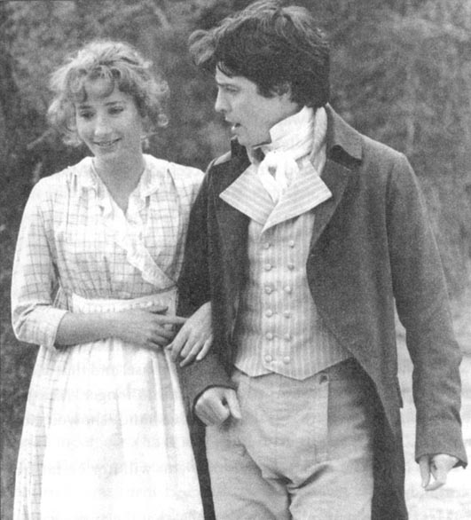
“记住，亲爱的，你还不满17岁。现在还远不到失去对幸福的憧憬的时候。你怎么就不能跟妈妈一样走运呢？”
埃莉诺感觉爱德华在她心目中占有很高的地位。她相信他也对她怀有好感，但是她不能确定，也无法像母亲和妹妹那样憧憬她的婚姻。有时爱德华和她在一起时会奇怪地变得情绪低落，这多少令她感到担忧。她知道他母亲总是找他的麻烦，而且可能会反对他娶一位没有多少钱的女子为妻。但有时她担心爱德华只不过把她当朋友看待而已。
玛丽安娜和她母亲则没有这样的疑惑，她们坚信任何一个聪明的年轻人都会爱上埃莉诺，而爱情本身会解决所有问题。当听到姐姐谨慎地将她对爱德华的感觉说成喜欢和尊敬而非爱情时，玛丽安娜着实被吓了一跳。
“喜欢他！尊敬他！”她尖叫道，“哦，无情的埃莉诺！为什么你要为表达爱意而感到羞愧呢？”
约翰·达什伍德夫人也已经注意到了哥哥与埃莉诺之间的感情。这使她心神不宁，急忙找机会让婆婆死心，向她解释说他们全家对爱德华寄予厚望，他找一门好婚事非常重要，任何一个企图用婚姻困住他的年轻女子都不会有好结果。达什伍德夫人实在忍不住尖刻地把她顶了回去，然后立即转身离开了房间，下定决心尽早和女儿们搬出诺兰庄园，尽管那样做会带来诸多不便。
同一天，她收到了远房亲戚约翰·米德尔顿爵士的来信。他在信中表示愿意向她提供一栋离他在德文郡的家不远的小房子，作为她和女儿们的新住所。尽管那只是一间小农舍，但他保证尽力让它变得更舒适些。他的信措辞十分友好，而达什伍德夫人又急于离开诺兰庄园和她那无情的儿媳，于是在征求了埃莉诺的意见后回信告诉约翰·米德尔顿爵士她愿意接受他慷慨的帮助。
2．A new home
2
A new home
Mrs Dashwood took great pleasure in informing her stepson and his wife that she had found a house, and that she and her daughters would soon trouble them no longer. Mrs John Dashwood said nothing, but her husband showed some surprise.
'I do hope,' he said politely, 'that you will not be far from Norland.'
Mrs Dashwood replied, with a smile, that they were going to Devonshire. Edward Ferrars, who was in the room at the time, turned quickly towards her when he heard this.
'Devonshire!' he repeated. 'Are you really going there? So far from here! And to what part, may I ask?'
'A place called Barton, four miles north of the city of Exeter,' replied Mrs Dashwood. 'It is only a cottage, but I hope that many of my friends will come to visit me there.' She gave a very kind invitation to Mr and Mrs John Dashwood to visit her at Barton, and to Edward she gave one with even greater affection. Although her recent conversation with her daughter-in-law had made her determined to leave Norland as soon as possible, she did not in the least intend that Edward and Elinor should be separated. By giving such a clear invitation to Edward, she wished to show that her daughter-in-law's disapproval of the attachment between Edward and Elinor had not had the smallest effect.
Mr John Dashwood told his stepmother again and again how extremely sorry he was that she had taken a house so distant from Norland that he could not give her assistance in moving her furniture. He really did feel sorry, because he had decided to limit his promise to his father to this one offer of help, which would not now be of any use.
The furniture was sent to Devonshire by ship; it mainly consisted of sheets, dinner plates, books, and a handsome piano of Marianne's. Mrs John Dashwood was sorry to see the boxes leave; she felt it unnecessary for Mrs Dashwood, who had such a small income, to have any good furniture at all.
Mrs Dashwood took the house, Barton Cottage, for twelve months. It was furnished and ready for them to move into at once. All the necessary arrangements were quickly made. Elinor advised her mother to sell her carriage, which, with the horses, would cost too much to keep, and to limit the number of their servants to three. Two of the servants were sent to Devonshire immediately, to prepare the house for their mistress's arrival.
On his death bed, Henry Dashwood had told his wife of the promise his son had made, and Mrs Dashwood had never doubted that John would keep that promise. Now, as she and her daughters were about to leave Norland, was a most suitable time for him to offer them help. But Mrs Dashwood soon began to lose hope. He so frequently talked of the rising costs of managing his house and land that he seemed in need of more money himself, rather than having any intention of giving money away.
Soon they were ready to depart, and many were the tears that fell during their goodbyes to the home they loved so much. 'Dear, dear Norland!' said Marianne, walking alone in the park on their last evening. 'I shall miss you all my life!'
During the first part of their journey to Devonshire, they were too miserable to notice anything. But when they entered Barton Valley, they became more cheerful, and began to show interest in the countryside that would soon be part of their everyday life. It was a pleasant, green valley, with thick woods and open fields. After driving for more than a mile, they reached their house.
Barton Cottage was well built and in good condition. There were two sitting-rooms downstairs, and four bedrooms and two servants' rooms upstairs. Compared with Norland, it was certainly poor and small, and the girls' tears flowed as they remembered their family home, but they soon dried their eyes and made every effort to be happy.
Mrs Dashwood was, on the whole, very pleased with the house, but she looked forward to making some changes.
'We can make ourselves quite comfortable here for the moment,' she said, 'as it is too late in the year to start any building work. To be sure, the house is rather too small for us, but perhaps next year, if I have plenty of money, as I expect I shall, we may think about enlarging the sitting-rooms, and adding a new dining-room and another bedroom. That may be easily done. It is a pity the stairs are not more handsome, but I suppose it would not be difficult to widen them. I shall see how much I have saved in the spring.'
It was not quite clear how all this work could be done from the savings of an income of five hundred a year by a woman who had never saved in her life. So, meanwhile, they were wise enough to accept the house as it was. They spent their first day arranging their things around them, to make themselves a home.
Soon after breakfast the next day, they received a visit from their landlord, the gentleman who owned Barton Cottage. Sir John Middleton was a good-looking, cheerful man of about forty, who seemed really delighted by their arrival. He welcomed them to Barton, offering them anything from his own house and garden, Barton Park, that was lacking at the cottage. He showed a warm interest in their comfort, and hoped that they would meet his own family socially as often as possible. His kindness was not limited to words, because soon after he had left them, a large basket full of fruit and vegetables arrived from the Park, followed by another of meat and fish.
His wife, Lady Middleton, came to visit them the next day. The Dashwoods were, of course, very anxious to see a person on whom so much of their comfort at Barton must depend. Although at first they admired the elegance of her appearance and her manners, they soon realized that she did not have her husband's warmth, or anything of interest to say.
However, there was no lack of conversation, as Lady Middleton had wisely brought her eldest child with her, a fine little boy of about six. As a result, there was always something to talk about; the ladies had to ask his name and age, admire his beauty, and ask him questions which his mother answered for him. A child should be taken on every social call in order to assist conversation. In the present situation it took at least ten minutes to determine whether the boy was most like his father or mother, and why. Everybody thought differently, and everybody was astonished at the opinions of the others.
The Dashwoods would soon be given the chance to discuss the rest of the children, as Sir John had made them promise to have dinner at the Park the next day.
Barton Park was about half a mile from the cottage. It was a large, handsome house, where the Middletons lived in great comfort. Neither of them had taste, or any interest in books or music. Sir John was a sportsman, Lady Middleton a mother; he could only go shooting for half the year, while his wife was able to spoil her children all year round. He was so hospitable that they almost always had relations or friends staying in the house, but Lady Middleton's main interest lay in the elegance of her table and her domestic arrangements, of which she was extremely proud. Sir John's enjoyment of society was much more real than his wife's; he took delight in collecting about him more young people than his house would hold, and the noisier they were, the better he liked it. Barton Park was famous for its summer parties and excursions, and its winter dances.
Sir John was delighted with Mrs Dashwood and her young, pretty daughters. When they arrived at the Park that evening, he was at the door to welcome them, and repeated several times his concern that he had been unable to get any fashionable young men to meet them. There was, he said, only one gentleman there, a particular friend who was staying at the house, but who was neither very young nor very sociable. He apologized for the smallness of the party, and promised that it would never happen again. Luckily, Lady Middleton's mother had just arrived, and as she was a cheerful, pleasant woman, he hoped the young ladies would not find the evening too dull.
Mrs Jennings, his mother-in-law, was a cheerful, fat, rather vulgar old lady, who laughed and talked a great deal. During dinner she said many amusing things about lovers and husbands, and hoped the Miss Dashwoods had not left their hearts behind them in Sussex. Colonel Brandon, Sir John's particular friend, seemed as different from his friend as Mrs Jennings was from her daughter. He was silent and serious. His appearance, however, was not unpleasing, in spite of his being, in Marianne's and Margaret's opinion, an absolute old bachelor, because he was on the wrong side of thirty-five.
After dinner, Marianne was invited to sing and play the piano. Sir John was loud in his admiration at the end of every song, and as loud in his conversation with others while every song lasted. Lady Middleton frowned at him for talking, but then requested a song which Marianne had just finished. Only Colonel Brandon listened attentively, without any false show of delight. Marianne felt a respect for him that the others, with their lack of taste, did not deserve. He clearly took pleasure in music, although perhaps not with her own depth of feeling. However, she was reasonable enough to accept that a man as old as thirty-five, like the colonel, may well have outlived real feeling and true enjoyment.
Mrs Jennings was a widow, with a comfortable fortune. She had lived to see both her daughters respectably married, and now had nothing to do but to marry off the rest of the world. She spent most of her time planning weddings for all the young people she knew, and was remarkably quick at discovering attachments. Soon after her arrival at Barton, this quickness enabled her to inform the Middletons and the Dashwoods that Colonel Brandon was very much in love with Marianne. She was perfectly sure of it. It would be an excellent marriage, as he was rich and she was handsome. For a long time Mrs Jennings had been eager to get Colonel Brandon well married, and she was always anxious to get a good husband for every pretty girl.
The immediate advantage to herself was that she could make endless jokes against them both. At the cottage she laughed at Marianne, and at the Park she laughed at the colonel. Marianne herself did not know whether to be amused or annoyed.
'It is such a silly accusation, mama! And I think it very unfeeling of Mrs Jennings, to laugh so cruelly at old Colonel Brandon. He is old enough to be my father!'
'My dear,' said Mrs Dashwood, smiling, 'I cannot think a man five years younger than myself so extremely ancient as he appears to you.'
'But mama, really! He must have long outlived any feelings of love by now, if he ever had any when he was younger. When is a man to be safe from such cruel jokes, if age and bodily weakness cannot protect him?'
'Bodily weakness!' said Elinor. 'I know that he is older than we are, but surely you must accept that he still has the full use of his arms and legs?'
'Did you not hear him complain of having a bad back?'
'My dearest child,' said her mother, laughing, 'it must seem to you quite astonishing that my life has lasted to the great age of forty.'
'Mama, be serious. I know very well that Colonel Brandon is not old enough for his friends to worry yet about losing him. He may live for another twenty years. But thirty-five should have nothing to do with marriage.'
'Perhaps,' said Elinor, 'thirty-five and seventeen had better not have anything to do with marriage together. But a single woman of twenty-seven, for example, could easily consider Colonel Brandon's thirty-five years no disadvantage.'
'A woman of twenty-seven,' said Marianne, after a moment's thought, 'can never hope to feel true love again. And if her home is uncomfortable, or her fortune small, I suppose that she could accept the duties of a nurse in order to become a wife. It would be a marriage of convenience, if Colonel Brandon married such a woman. The world would be happy with it, but in my eyes it would be no marriage at all.'
'It seems a little hard,' said Elinor reasonably, 'that you consider Colonel Brandon so ill that he is in need of nursing, only because he happened to complain yesterday of a pain in his shoulder. After all, it was a cold, wet day.'
But Marianne's views remained the same. Soon after this, however, when Elinor had left the room, Marianne spoke to her mother with some urgency in her voice.
'Mama, I am anxious about Edward Ferrars. I am sure he is ill. We have now been here almost two weeks, and he still has not come to see Elinor.'
'My dear, be patient!' answered Mrs Dashwood. 'I did not expect him so soon. And I feel sure Elinor does not expect him either. When we were talking yesterday of a new fireplace for the spare bedroom, she said there was no hurry, as the room would not be needed for some time.'
'How strange! What can be the meaning of it? How cold, how calm their last goodbyes were! And Elinor is so self-controlled; she is never sad or restless or miserable. I cannot understand her.'
for the moment used to say that something is happening or true now but will probably change in the future 暂时，目前
excursion n. a short journey arranged so that a group of people can visit a place, especially while they are on holiday （尤指一群人度假时的）短途旅行
outlive v. to continue to exist after something else has ended or disappeared 比……经久
marry off (of a parent or guardian) give (a son or daughter) in marriage 让（儿子或女儿）结婚
accusation n. a statement saying that someone is guilty of a crime or of doing something wrong 指控
marriage of convenience a marriage that has been agreed for a particular purpose, not because the two people love each other 利益婚姻
urgency n. the quality of pressing importance 紧要
新家
2．新家
达什伍德夫人高兴地告诉继子和儿媳她已经找到了新居，因此她和女儿们很快就不必再打扰他们了。约翰·达什伍德夫人听后一言不发，而她丈夫则显得有点儿吃惊。
“我真的希望，”他礼貌地说道，“你们不会搬到离诺兰庄园太远的地方。”
达什伍德夫人微笑着回答她们将迁往德文郡。此时正在房间里的爱德华·费拉尔斯听到后马上转过身来。
“德文郡！”他重复道，“你们真的要搬到那儿去吗？离这儿那么远！能告诉我是德文郡的哪个地方吗？”
“一个叫作巴顿的地方，就在埃克塞特城以北四英里的地方，”达什伍德夫人答道，“虽然那只是一栋小屋子，但我还是希望能有很多朋友来做客。”她友好地邀请约翰·达什伍德夫妇去她巴顿的新家做客，给爱德华的邀请则更加热情。尽管不久前与儿媳的口角使她下决心尽早搬出诺兰庄园，但她从来没想过要把爱德华与埃莉诺拆散。她希望通过向爱德华发出明确的邀请，证明她儿媳对爱德华与埃莉诺相爱的反对是没有任何效果的。
约翰·达什伍德先生一遍又一遍地向继母解释，由于她选择搬到一个离诺兰庄园那么远的地方，他无法帮助她运送家具过去，他为此感到抱歉。他的确感到抱歉，因为他已把对父亲的许诺降低到这一件事上了，现在连这个也用不着了。
家具被装船运往德文郡，主要是被褥、餐具、书籍和玛丽安娜的一架漂亮的钢琴。约翰·达什伍德夫人遗憾地看着一箱箱东西被搬走，她觉得收入微薄的达什伍德夫人根本不需要任何好家具。
达什伍德夫人租下了新居巴顿小屋，租期12个月。房子已经布置妥当，她们立即就能入住。所有必要的安排很快就做好了。埃莉诺建议母亲卖掉马车，因为马车和马的养护费用太高，她们养不起。她还建议把仆人的数量减到三人。其中两人立即被派往德文郡的新家，为女主人的到来做准备。
亨利·达什伍德临死前曾经把他儿子的许诺告诉妻子，而达什伍德夫人一直相信约翰会信守诺言。眼下，她和女儿们马上就要离开诺兰庄园了，这是他兑现诺言向她们提供帮助的绝佳机会。但是达什伍德夫人很快就开始感觉希望渺茫。约翰总是说起他的房子和田庄开销越来越大，似乎他自己的钱都不够用，更不用说打算掏出钱来给别人了。
她们很快就准备好，可以出发了，在跟心爱的家告别时她们却流下了眼泪。“亲爱的，亲爱的诺兰庄园啊！”玛丽安娜在出发前的最后一个夜晚到花园里独自散步时自言自语道，“我一辈子都会怀念你的！”
在她们去德文郡的路上，前半程她们都情绪低落，没有留意任何东西。进入巴顿山谷后，大家心情好了一些，并开始对即将成为她们生活一部分的乡间表现出兴趣。这是个令人心旷神怡的翠绿山谷，到处是茂密的树林和辽阔的田野。她们往前又走了一英里多就到了新家。
巴顿小屋建造得好，维护得也不错。楼下是两个起居室，楼上是四个卧室和两个仆人住的房间。跟诺兰庄园相比，它实在是既小又简陋，想起原先居住的庄园，女孩们都禁不住潸然泪下。但大家很快就擦干泪水，尽量使自己开心起来。
达什伍德夫人对房子总的来说非常满意，但还是希望再做一些调整。
“目前我们可以在这儿住得比较舒服，”她说道，“因为这个季节要再大兴土木已经有点儿晚了。这房子当然还是小了些，不过也许来年，如果我有了足够的钱——我认为我会有的——我们或许可以考虑将客厅扩大，增建一个餐厅和一个卧室。这都不是什么难事。可惜的是楼梯不够好看，不过我想把它改宽也不难。我要看看明年春天我能攒下多少钱。”
不知道一个从未攒过钱的女人怎么能从她一年五百英镑的收入中省下足够的钱来支付所有这些计划的开销。因此，眼下她们凑合住下是很明智的选择。她们到新家后的头一天收拾了一下，努力营造出家的感觉。
第二天吃完早饭后不久，她们就迎来了这里的房东，巴顿小屋的所有者约翰·米德尔顿爵士。他是个讨人喜欢的英俊男人，年纪约莫四十岁。她们的到来看来令他真的很高兴。他欢迎她们来到巴顿并表示不管小屋里缺什么，她们都可以到巴顿庄园去拿。他十分关心她们住得是否舒适，并且希望她们能尽可能多地与他家常来常往。他的友善可不光是说说而已，因为他走后不一会儿就有满满一大篮水果和蔬菜从庄园送来，接着又是一大篮鱼和肉。
第二天，他的太太米德尔顿夫人来看望她们。达什伍德一家自然对她的来访感到紧张，因为她们在巴顿的舒适生活很大程度上取决于她。尽管她外表高贵、举止优雅，但她们很快发现她缺乏她丈夫的热情，谈话也索然无味。
尽管如此，主客间并没有冷场。米德尔顿夫人英明地带上了她最大的孩子，一个六岁左右的漂亮小男孩。因此，大家总是不乏谈资。几位女士得询问他的名字和年龄，夸他长得漂亮，并问他一些由他母亲替他回答的问题。在社交拜访时带上孩子总是能帮助大家找到话说。眼下，她们至少用了十分钟讨论这孩子长得更像母亲还是父亲以及理由。每个人的想法都不一样，每个人听到其他人的看法时都很惊讶。
达什伍德一家很快就会有机会谈论其他几个孩子了，因为米德尔顿爵士邀请她们第二天在庄园共进晚餐。
巴顿庄园离小屋只有半英里，是一座漂亮的大房子，米德尔顿一家在那里过得极为舒适。夫妇两人对书籍和音乐都没有什么兴趣。约翰爵士喜欢运动，他太太则把心思全放在了孩子身上。他每年有一半的时间都会出去打猎，而他太太却能一年到头地宠溺她的孩子们。约翰爵士热情好客，家里总是有亲戚朋友来做客，不过他太太的兴趣主要在她引以为豪的餐点和家居布置上。跟他太太比起来，约翰爵士是真心爱热闹，专门喜欢招一大群年轻人到家里来，而且他们越吵，他就越高兴。巴顿庄园夏天的聚会和远足，以及冬天的舞会都很出名。
约翰爵士乐于与达什伍德夫人和她年轻漂亮的女儿们在一块儿。那天晚上她们抵达巴顿庄园时，他亲自到门口欢迎她们，并且几次为找不到时髦的年轻人来坐陪而道歉。他说家里只有一位男客，是一位住在他那里的密友。不过那人不善社交，而且年龄稍大。他抱歉地说这次聚会规模不大，并保证这样的事以后再也不会发生了。幸好米德尔顿夫人的母亲刚到。由于她是一位开朗、讨人喜欢的女士，他希望她的到来能使几位年轻女士们不觉得这个夜晚过得太无聊。
他岳母詹宁斯夫人是个开朗的胖老太太，爱说爱笑跟优雅毫不沾边。她在餐桌上讲了很多关于爱人和丈夫的奇闻趣事，还说希望达什伍德家的几位小姐没有把她们的心留在萨塞克斯。约翰爵士的密友布兰登上校跟他的这位朋友相比，就如同詹宁斯夫人和她女儿那样不同。他沉默而严肃。虽然他性格不讨人喜欢，但他的外表并不令人生厌，不过他在玛丽安娜和玛格利特眼里，是个十足的老光棍，因为他已经是过了35岁，直奔40而去的人了。
晚宴过后，玛丽安娜应邀唱歌并演奏钢琴。约翰爵士在每首歌结束时都会大声地赞美一番，可在她歌唱的过程中他也同样大声地与别人交谈。米德尔顿夫人因此向他皱眉头，但之后却请求玛丽安娜唱一首她刚唱完的歌曲。只有布兰登上校全神贯注地倾听着，并不假装出快乐的样子。玛丽安娜对他产生了一种敬意，这是其他那些没有品位的人所不配得到的。他显然喜欢音乐，尽管也许不如她自己的感受那么强烈。然而她有理由认为像上校这样一个35岁的男人，或许早已失去了真切的感受和真正的快乐。
詹宁斯夫人虽是位寡妇，却拥有一笔可观的财富。她在有生之年看着两个女儿都嫁得很体面。现在她除了给别人做媒便无所事事。她大多数时间都在为她所认识的年轻人安排婚事，而且在发现恋情方面堪称神速。这种天赋让她到巴顿后不久就能够告诉米德尔顿和达什伍德两家，布兰登上校已经深深地爱上了玛丽安娜。她对此非常确定。男方富有，女方漂亮，这将是一门理想的婚姻。詹宁斯夫人很久以来一直想为布兰登上校找一门好婚事，而且她总是急切地想为每一个漂亮女孩找个好丈夫。
她能从中获得的直接好处便是可以不停地拿他俩开玩笑。在巴顿小屋她拿玛丽安娜开玩笑，在庄园她则拿上校开玩笑。玛丽安娜自己也不知道该一笑置之还是生气。
“这真是荒唐的指控，妈妈！而且我觉得詹宁斯夫人这样残忍地拿老布兰登上校开玩笑太无情了。他都老得能当我父亲了。”
“亲爱的，”达什伍德夫人微笑着说道，“我不认为一个比我小5岁的男人会像他在你眼里那样老。”
“但说真的，妈妈！他心中一定早已没有爱情了，即使他年轻时曾经有过。没有年老体衰的保护，一个男人何时才能不受这种残忍玩笑的折磨呢？”
“年老体衰！”埃莉诺说道，“我知道他比我们年长，不过你得承认他的胳膊和腿脚还很好使。”
“你没听到他抱怨背疼吗？”
“我最亲爱的孩子，”她母亲笑着说道，“看来对你来说，我能活到40岁‘高龄’一定是件令人吃惊的事了。”
“妈妈，请严肃一点儿。我很清楚布兰登上校还没老到要他朋友担心失去他的地步。他或许还能再活20年。但是一个35岁的男人实在不该再谈婚论嫁了。”
“也许吧，”埃莉诺说道，“一个35岁的男人和一个17岁的女孩最好不要在一起谈婚论嫁。但一个27岁的单身女人无疑会认为布兰登上校的年龄并没有什么不好。”
“一个27岁的女人，”玛丽安娜想了想说，“永远不可能再感受到爱情了。如果她在娘家过得不舒适，或是囊中羞涩，我想她可以为了结婚而接受像当护士一样的婚姻生活。这将是以实利为目的的婚姻。别人会乐于看到布兰登上校娶这样一个女人为妻，但在我眼里这根本算不上婚姻。”
“在我看来，”埃莉诺理智地说，“布兰登上校昨天碰巧抱怨肩膀疼，你就认为他病重到需要有人照料，这实在有些刻薄。毕竟，昨天又冷又潮。”
但是玛丽安娜并没有改变看法。然而，过了一会儿埃莉诺离开房间后，她急切地对母亲说：“妈妈，我为爱德华·费拉尔斯感到担忧，他肯定病了。我们到这儿都快两个星期了，他却还没来看望埃莉诺。”
“耐心点儿，宝贝！”达什伍德夫人回答道，“我并没有指望他那么快就能来。而且我确信埃莉诺也没有这样的期望。我们昨天讨论为那间闲置的卧室安装新壁炉时，她说不用着急，反正一时之间也用不到。”
“真怪啊！这到底是什么意思？他们最后告别时太冷静，太缺乏激情！埃莉诺的自制力太强了；她从来都不会悲伤、焦虑或痛苦。我无法理解她。”
3．A handsome stranger
3
A handsome stranger
The Miss Dashwoods now began to feel really at home at Barton. They went walking, and practised their drawing and music with far greater enjoyment than at any time since the death of their father. They did not have many visitors, except for those from Barton Park, as there were few other houses within walking distance. There was, in fact, a large, comfortable-looking house about a mile from the cottage, in the village of Allenham, but they heard that its owner, an old lady of good character called Mrs Smith, was unfortunately not well enough to mix in society.
There were beautiful walks all around them, in the green wooded valleys and on the hills behind the cottage. One morning, Marianne and Margaret, taking no notice of their mother's and Elinor's warnings of rain, decided to walk on one of these hills. They climbed to the top, delighted to see blue sky between the clouds, and laughing at the wind that caught at their hair and clothes.
'Nothing in the world could be better than this!' called Marianne. 'What a pity mama and Elinor did not come with us!'
But in a few minutes the blue sky disappeared, the dark clouds gathered, and driving rain began to beat down on their faces. Surprised and disappointed, they were forced to turn back. Fortunately, they were not far from home; it was just a matter of running with all possible speed down the steep side of the hill which led to their garden gate.
At first Marianne was ahead, but a false step brought her suddenly to the ground, and Margaret, unable to stop herself, carried on down the hill and through the garden gate.
A gentleman who was out shooting was walking up the hill when Marianne's accident happened. He put down his gun and ran to help her. She had hurt her ankle, and could not stand. The gentleman offered his assistance, and in spite of Marianne's protests, took her up in his arms and carried her down the hill. He took her straight into the house and placed her carefully on a sofa in the sitting-room.
Elinor and her mother rose in astonishment as the stranger entered, carrying Marianne. While they both looked at him, secretly admiring his unusually handsome appearance, he apologized most politely for his rude entrance. Even if he had been old, ugly and vulgar, Mrs Dashwood would have been extremely grateful to him for taking care of her child, but the influence of his looks and elegance touched her deepest feelings. She thanked him again and again, and asked the name of the person to whom she owed so much. He replied that his name was Willoughby, his present home was at Allenham, and he sincerely hoped that she would allow him to call tomorrow to enquire after Miss Dashwood. Permission was immediately given, and he then departed, to make himself still more interesting, in the middle of a heavy shower of rain.
There was general admiration of his manly beauty. Marianne had seen less of his person than the others, because of her natural confusion when he lifted her in his arms, but his appearance and behaviour seemed all that was perfect to her. Her imagination was busy, her thoughts were pleasant, and the pain of a turned ankle went unnoticed.
When Sir John next visited them, he heard all about Marianne's accident, and was eagerly asked whether he knew of any gentleman of the name of Willoughby at Allenham.
'Willoughby!' cried Sir John. 'Of course I do! He comes here every year. I shall invite him to dinner on Thursday.'
'What sort of young man is he?'
'A good man to know, I can tell you. He shoots well, and there isn't a better rider in England.'
'And is that all you can say for him?' cried Marianne. 'But what does he think? What are the interests close to his heart?'
Sir John looked puzzled. 'Well, I don't know as much as that about him. But he's pleasant, and sociable, and has got the nicest little gundog I ever saw. Did you see his dogs.'
'But who is he?' asked Elinor. 'Where does he come from? Where does he live? Has he a house at Allenham?'
This time Sir John had more exact answers to give. He told them Mr Willoughby had no house of his own in Devonshire, but stayed there only while visiting the old lady, Mrs Smith, at Allenham. It appeared that he was related to her, and would inherit her fortune.
'Yes,' Sir John added to Elinor, 'he is well worth catching. He has a house and land in Somerset as well. And if I were you, I wouldn't allow my younger sister to have him, in spite of all this falling down hills. Miss Marianne must not expect to have all the men to herself. Brandon will be jealous, if she does not take care.'
'I do not believe,' said Mrs Dashwood, smiling, 'that either of my daughters will make any attempts at what you call catching him. It is not an employment to which they have been brought up. Men are very safe with us, however rich they are. I am glad to hear, however, that he is a respectable young man, whom we can meet socially.'
'I remember last Christmas,' said Sir John, 'at a little dance at the Park, he danced from eight till four without once sitting down. And he was up again at eight to go shooting.'
'Was he?' cried Marianne, with shining eyes. 'That is what I like, a young man who is enthusiastic and eager in all he does, who never gets tired.'
'I see how it will be,' said Sir John. 'You will be interested in him now, and never think of poor Brandon.'
Marianne's rescuer, as Margaret called him, arrived at the cottage early next morning, and was received by Mrs Dashwood with more than politeness. During his visit, Willoughby rapidly became aware of the sense, elegance, affection and domestic comfort of the family to whom an accident had introduced him. Both Elinor and Marianne had pretty faces and lovely figures, but in Marianne's beautiful dark eyes burned an eager fire which drew Willoughby to her. She could not be silent when he spoke of music and dancing, and showed no shyness in their discussion. They soon discovered how many interests and opinions they shared, and long before his visit came to an end, they were talking and laughing together like old friends.
Willoughby visited Barton Cottage every day after that. At first, his intention was supposedly to enquire politely after Marianne's health, but soon he pretended no longer, and came to spend the whole day at her side, in complete enjoyment of her company. They read, they talked, they sang together, and Marianne found in Willoughby all the taste and sensibility which Edward Ferrars unfortunately lacked. Mrs Dashwood considered him as faultless as Marianne did. Even Elinor saw nothing wrong in him, except for the habit, which Marianne shared, of being too ready to express an opinion about other people, and of putting his personal pleasure above social correctness.
Marianne now began to realize she had been wrong to believe there was no such creature as the perfect man. Willoughby met her idea of perfection exactly, and his behaviour showed that he shared her wishes for their future. Her mother, too, had thoughts of their marriage, and secretly congratulated herself on having two such sons-in-law as Edward and Willoughby.
Elinor, however, was concerned to see that Mrs Jennings had been right, and Colonel Brandon appeared to be deeply in love with Marianne. What hope could there be for a silent man of thirty-five, against a sociable one of twenty-five? Perhaps she pitied him even more, because Willoughby and Marianne seemed determined to laugh at him for being old and dull.
'Brandon is just the kind of man,' said Willoughby one day, 'whom everybody speaks well of, and nobody cares for.'
'He is respected by all the family at the Park, however,' said Elinor sharply, 'and his conversation is always pleasant.'
'But he has nothing of interest to say!' cried Marianne.
'He has common sense, that is what I like about him. He is perfectly respectable, well informed, and, I believe, sincere.'
'Well, Miss Dashwood,' said Willoughby, laughing, 'I have three unanswerable reasons for disliking Colonel Brandon. He told me it would rain when I wanted it to be fine, he does not approve of my new carriage, and I cannot persuade him to buy my horse. So in spite of your very sensible opinion, I shall go on disliking him for ever!'
When they moved to Barton, the Dashwoods never imagined that their days would be so completely filled with parties, visits and excursions. Sir John could not rest if there were young people to amuse, and every day there was a boat trip, or a supper party, or a drive in the countryside, or a dance at the Park. In every meeting of the kind Willoughby was included, which gave him the opportunity to develop his connection with the Dashwood family, to show his deep admiration for Marianne, and to receive, in her behaviour to himself, the clearest possible proof of her affection.
Elinor could not be surprised at their attachment. She only wished it could be less openly shown, and once or twice tried to suggest to Marianne that she should have more self-control. But Marianne, and Willoughby too, believed that real feelings should never be hidden, and that it would be false to do so. When Willoughby was present, Marianne had eyes for no one else.
Elinor's happiness was not as great as her sister's. In Devonshire she had found no companion who could make her forget the delights of her former home and Sussex friends. Only Colonel Brandon came closest to being the kind of friend she needed. He often fell into conversation with her, as he seemed to find some relief in talking to her about Marianne.
'Your sister, I understand, does not approve of second attachments,' he said one evening, his eyes fixed on Marianne, who was dancing with Willoughby.
'No,' replied Elinor. 'Her opinions are all romantic. She believes that we fall in love once only in our lives. But I hope that in a few years she will become more sensible.'
'That may happen. But when a romantic young mind is forced to change, what serious results there can be! I speak from experience. I knew a young lady once who—'
Here he stopped suddenly and appeared to think he had said too much. Elinor felt almost sure that his was a story of disappointed love, and her pity for him grew.
The next morning, Elinor heard a piece of news that astonished her. Marianne told her with the greatest delight that Willoughby had promised to give her a horse, so that he and she could go riding together. She had not given a moment's thought to the cost of keeping the animal, or to what society might think of her receiving such an expensive present from a young man who was not a relation. It took Elinor some time to make her understand that she could not possibly accept the gift, but finally Marianne agreed, although unwillingly.
The next day Elinor gained a still clearer picture of Marianne's attachment to Willoughby. Margaret came excitedly to tell her that she was sure Marianne would marry Willoughby very soon.
'Oh, Elinor!' she cried. 'I have such a secret to tell you. I saw them last night after tea. Mr Willoughby was begging Marianne for something, and then he cut off a long lock of her hair, kissed it, and put it in his pocket.'
Elinor now felt sure they were engaged, and was only surprised that they had not told their relations and friends.
Sir John's latest plan for their amusement was to visit a very fine house and garden, called Whitwell, the following day. A large group of them would go in carriages, taking food and drink with them in baskets, and a most enjoyable day was expected. As Whitwell belonged to Colonel Brandon's brother-in-law, the colonel would go with them; it appeared that he alone could arrange for them to visit the house.
Unfortunately, however, while they were at breakfast at the Park, where the whole party had gathered, a letter was delivered to the colonel. He looked quickly at it, and hurried out of the room without a word. In a few moments he returned, looking more serious than usual, and explained that urgent business called him to London, and he would not, therefore, be able to join the party visiting Whitwell. He would not explain further, in spite of Mrs Jennings' insistent questioning. Everybody except Elinor tried hard to persuade him to put off his business, so that the excursion could take place, but he could not be influenced, and left the house, after wishing them a good day.
As the excursion was no longer possible, it was decided that the party would drive around the countryside instead, and the carriages were ordered. Willoughby's was first, and Marianne never looked happier than when she got into it. He drove away very fast, and they were soon out of sight. Nothing more was seen of them until their return in the afternoon.
That evening, as they all sat down to dinner, Mrs Jennings spoke quietly to Marianne, but loud enough for Elinor to hear. 'I have found you out, Miss, in spite of your cleverness. I know where you spent the morning.'
Marianne blushed, and said quickly, 'Where?'
Mrs Jennings smiled knowingly. 'I hope you like your house, Miss Marianne. It is certainly very large, and when I come to see you in it, I hope you will have refurnished it. It badly needed new furniture when I was last there.'
Marianne turned away in confusion. Mrs Jennings laughed loudly, and explained that she had discovered from the servants that Marianne and Willoughby had gone to Allenham and spent a considerable time going all over Mrs Smith's house.
Elinor found this difficult to believe. Marianne had never been introduced to Mrs Smith, and it would have been very bad manners for her to enter the house while Mrs Smith was in it. However, when she asked her sister, she found that the story was true, and Marianne was quite angry with her for doubting it.
'Why should I not visit the house?' cried Marianne. 'I never spent a pleasanter morning in my life!'
'I am afraid,' replied Elinor, quietly but firmly, 'that whatever is pleasant is not always correct.'
After some minutes of serious thought, Marianne said, 'Perhaps, Elinor, you may be right. I should not have gone. But the rooms are lovely! There is a beautiful little sitting-room which would be delightful with modern furniture.' She would have described every room in the house if Elinor had let her.
Elinor had no time to wonder why Colonel Brandon had been so suddenly called away. All her thoughts now centred on Marianne and Willoughby's extraordinary silence about their engagement. There seemed no reason why they should not openly tell her mother and herself, even if they did not plan to marry very soon. Willoughby was not rich; indeed, he often complained he was poor, so he might have to wait for his inheritance before marrying. But this secrecy was so opposed to their general ideas of openness and honesty that Elinor began to doubt whether they were really engaged.
Nothing could express more affection for them all than Willoughby's behaviour. He seemed to consider the cottage his home, and when Mrs Dashwood mentioned the future building work she was planning, he appeared almost horrified, and begged her not to change even one stone.
'No, Mrs Dashwood!' he cried. 'Do not spoil this house! It is perfect as it is! Remember what happiness I have known here! Promise me you will change nothing, nothing at all!'
To please him, Mrs Dashwood dutifully promised.
'I am glad of your promise. Now I would ask you one more thing. Tell me that not only your home will remain the same, but that I shall always find you and your family unchanged, and that you will always consider me with the kindness which has made you all so dear to me.'
The promise was given, and Willoughby's behaviour that evening was a proof of his happiness in their society.
driving adj. violent, intense or forceful 猛烈的
enquire after to ask someone about how they are and what they are doing 问候
gundog n. a dog trained to find and bring back dead birds shot for sport （受过训练能寻找并带回被射杀禽鸟的）猎狗
rescuer n. a person who saves another 救助者
unanswerable adj. definitely true and therefore impossible to argue against 无可辩驳的
conversation n. an informal talk in which people exchange news, feelings and thoughts （非正式的）谈话，交谈
lock n. a length or curl of hair 一束长发
insistent adj. repetitive and persistent 重复的，持续的
knowingly adv. in a way that knows you know something secret or embarrassing 会意地
dutifully adv. in a way of doing what you are expected to do 顺从地
英俊的陌生人
3．英俊的陌生人
达什伍德家的小姐们现在已经开始习惯了巴顿。她们一起出去散步，练习绘画和乐器，自父亲去世后她们从没这样快乐过。除了巴顿庄园的人，她们很少有客人，因为附近徒步可及的范围内也没有什么其他的人家。其实，在离她们大约一英里的艾伦汉姆村有一座漂亮的大房子，她们听说房子的主人史密斯夫人是一位好心肠的老太太，可是她身体不好，不宜参加社交活动。
在树林茂密的翠绿山谷中和小屋后边的山上，到处都是漂亮的林荫小道。一天清晨，尽管母亲和埃莉诺警告说要下雨，玛丽安娜和玛格利特还是决定去其中一座小山上散步。她们爬到山顶，兴奋地看着蓝天白云，吹拂在她们头发和衣裙上的风把她俩逗得开怀大笑。
“世界上没有比这更好的了！”玛丽安娜喊道，“真可惜妈妈和埃莉诺没跟我们一块儿来！”
但是不一会儿，蓝天就消失得无影无踪，乌云聚集起来，倾盆大雨朝她们劈头盖脸地袭来。吃惊而失望的两个人被迫往回赶。幸运的是她们并没有走得离家太远，只要从小山较陡的一面全速冲下去就是她们花园的大门了。
起先玛丽安娜跑在前面，但她一脚踩空突然跌倒在地上，而玛格利特跑得停不下来，一路冲下山坡，冲进了花园里。
玛丽安娜出事时，一位外出打猎的绅士正沿着山坡上来。他放下猎枪跑向她。她扭了脚，站不起来。那位绅士向她伸出援手，尽管玛丽安娜表示反对，他还是把她抱下了山，又径直将她抱进屋里，小心翼翼地放在客厅的沙发上。
这个陌生人抱着玛丽安娜进屋时，埃莉诺和她母亲吃惊地站了起来。当她俩看着他，并暗暗欣赏他那英俊非凡的外表时，他非常礼貌地为自己冒昧地闯入向她们道歉。即使他苍老、丑陋、粗俗，达什伍德夫人也会为他对她女儿的照料而感激不尽，而现在他的相貌和气质深深地打动了她。她反复向他道谢，并询问这位恩人的姓名。他回答他姓威洛比，目前住在艾伦汉姆，之后又真诚地表示希望她能允许他明天来问候达什伍德小姐。他的请求立即得到了满足，然后他就转身离去了。他在倾盆大雨中消失的背影使人对他更感兴趣了。
大家都被他的阳刚之美所倾倒。被他抱在怀里时玛丽安娜一直处于一种迷茫状态，对他的观察不如其他人那么仔细，但是他的长相和举止在她看来似乎很完美。她的想象力得到了充分的激发，脑子里充满了令人愉悦的念头，完全没有注意到脚踝处的疼痛。
约翰爵士来看望她们的时候，听了玛丽安娜出事的经过。他被急切地问及是否认识一位住在艾伦汉姆村、姓威洛比的先生。
“威洛比！”约翰爵士叫道，“我当然认识他！他每年都来这儿。我要请他星期四来共进晚餐。”
“他是个什么样的年轻人？”
“他是个很值得结识的人，这点我敢打包票。他打猎技术高超，还是全英格兰数一数二的骑手。”
“这就是你对他的全部了解吗？”玛丽安娜叫道，“他有些什么想法？他感兴趣的又是什么呢？”
约翰爵士看起来很困惑。“我对他的了解可没有那么多。不过他讨人喜欢、爱好交际，还养了一只小猎犬，是我见过的最漂亮的。你看到他的狗了吗？”
“可他到底是谁呢？”埃莉诺问道，“他是哪里人？他住在哪儿？他在艾伦汉姆有房子吗？”
这一次，约翰爵士终于能够给出准确的回答了。他告诉她们威洛比先生在德文郡没有属于他自己的房子，他来艾伦汉姆看望史密斯夫人时才暂住在这儿。他似乎是她的亲戚，并且将继承她的财产。
“是的，”约翰爵士向埃莉诺补充说道，“他真的很值得你好好抓住。他在萨默塞特郡也拥有房子和地产。如果我是你的话，就不会让妹妹得到他，就算是她跌下山坡才认识了他。玛丽安娜小姐可不要期望一人占有所有男士。她不小心行事的话，布兰登会嫉妒的。”
“我不认为，”达什伍德夫人微笑着说道，“我的哪个女儿会试图像你说的那样去‘抓住他’。她们从小到大都没人教她们这样做。不管多么富有的男士，和我们相处都是安全的，但我很高兴听你说他是个值得尊敬的年轻人，我们今后可以和他多交往。”
“我记得去年的圣诞节，”约翰爵士说道，“在庄园举行的一次小型舞会上，他从晚上8点一直跳到第二天凌晨4点，根本没有坐下来休息过。第二天8点钟他又起床出去打猎了。”
“是吗？”玛丽安娜喊道，她的眼睛闪闪发光，“我就喜欢做什么事都充满激情、永远不知疲倦的年轻人。”
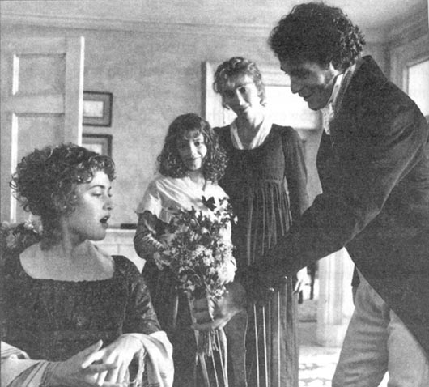
“我明白是怎么一回事了，”约翰爵士说道，“你现在对他着迷了，心里根本没有可怜的布兰登。”
那个被玛格利特称作“玛丽安娜的救星”的人第二天一早来到小屋，并受到了达什伍德夫人热情的招待。这次拜访使威洛比很快发现，通过一起意外事件结识的这家人通情达理、举止文雅、相亲相爱、安安逸逸。埃莉诺和玛丽安娜都有漂亮的脸蛋和窈窕的身材。但玛丽安娜美丽的黑色眸子中的火焰更吸引他。在他谈论音乐和舞蹈时她从不保持沉默，在谈话时也从不害羞。他俩很快就发现彼此有着许多相同的兴趣和观点。他来了没多久，两人就已经像老朋友那样在一起谈笑风生了。
在那之后，威洛比每天都来巴顿小屋做客。起初，他只是礼节性地问候玛丽安娜的健康状况，但他很快就不再假装，而是整天陪在她身边，尽情享受她的陪伴。他们一块儿读书、交谈、唱歌，而玛丽安娜发现威洛比身上有着爱德华·费拉尔斯所缺乏的品位和情感。达什伍德夫人也像玛丽安娜那样认为他几乎无可挑剔。就连埃莉诺在他身上也找不出什么缺点，除了玛丽安娜也有的那种喜欢对别人评头论足和将自己的快乐凌驾于社交准则之上的习惯。
玛丽安娜现在开始意识到她原先认为世上没有完美男人的想法是错的。威洛比恰好符合她对完美一词的定义。而他的一举一动都表现出他对他们的未来抱有和她一样的期待。她母亲也有让他们结婚的念头，而且暗自庆幸自己能有爱德华和威洛比这样两位好女婿。
然而埃莉诺担忧地发现詹宁斯夫人的判断是正确的，布兰登上校看来确实深深爱着玛丽安娜。可是在一位善交际的25岁男人面前，一位不善言辞的35岁男人能有什么希望呢？威洛比与玛丽安娜似乎决心联手嘲笑他既老又呆，这使得埃莉诺更加同情他了。
“布兰登就是那种人，”威洛比有一天说道，“每个人都说他好，但没有人真的在乎他。”
“但是巴顿庄园全家上下都很尊敬他，”埃莉诺尖锐地答道，“而且与他交谈总是令人愉快。”
“但他说话没有任何趣味！”玛丽安娜叫道。
“他很有判断力，这是我喜欢他的地方。他值得尊敬，见闻广博，而且我认为他很真诚。”
“好吧，达什伍德小姐，”威洛比笑着说道，“我有三个无可辩驳的不喜欢布兰登的理由。我希望有个好天气的时候他告诉我要下雨，他不喜欢我的新马车，还有我无法说服他买我的马。所以尽管你的意见很有道理，我还是会继续不喜欢他！”
搬来巴顿时，达什伍德一家从来不曾想过她们的生活会像现在这样排满了聚会、来访和出行。只要有年轻人在，约翰爵士就不会闲着。每天都会有各式各样的活动，不是去划船，就是举行晚宴聚会；不是去乡间坐车兜风，就是在庄园举行舞会。每个活动威洛比都会参加，这使他有机会跟达什伍德一家更多地接触，有机会向玛丽安娜表达深深的爱慕，并在她对他的一举一动中获得最明确的爱的证明。
埃莉诺对他俩之间的感情一点儿也不感到吃惊。她只是希望这种感情表露得再含蓄一些，她几次试图向玛丽安娜暗示，让她更加自持一些。但是玛丽安娜和威洛比都认为真正的感情无需任何掩饰，因为这样做是虚假的。威洛比在场的时候，玛丽安娜从不看其他人一眼。
埃莉诺过得不像妹妹那样快乐。在德文郡她没有找到哪个人能让她忘却从前的家和在萨塞克斯郡的朋友们曾带给她的快乐。只有布兰登上校最接近她所需要的那种朋友。他们经常在一起聊天，与她谈论玛丽安娜似乎能给他一些慰藉。
“我想你妹妹不赞成第二次的感情。”一天晚上他看着正在和威洛比跳舞的玛丽安娜说道。
“对，”埃莉诺回答，“她的头脑里都是浪漫的想法。她认为人一生中只会爱一次。但我希望再过几年她能变得更理性些。”
“这有可能。但如果一个浪漫的女孩被迫做出改变，可能会产生多么严重的后果啊！我这话是经验之谈。我曾经认识一个年轻女子，她……”
说到这儿他突然停了下来，似乎认为自己已经说得太多了。埃莉诺几乎肯定他要讲的是一段失意的恋情。她变得更加同情他了。
第二天早上，埃莉诺听到了一则令她吃惊的消息。玛丽安娜异常兴奋地告诉她，威洛比已经许诺要送她一匹马，这样他们就能一起骑马出去了。她根本不曾考虑养那头牲畜的开销，也没想过她接受一位与她非亲非故的年轻人赠送的如此厚礼会让周围的人怎样想。埃莉诺花了不少时间才让玛丽安娜明白她不能接受这件礼物。虽然心里不情愿，但玛丽安娜最后还是同意了。
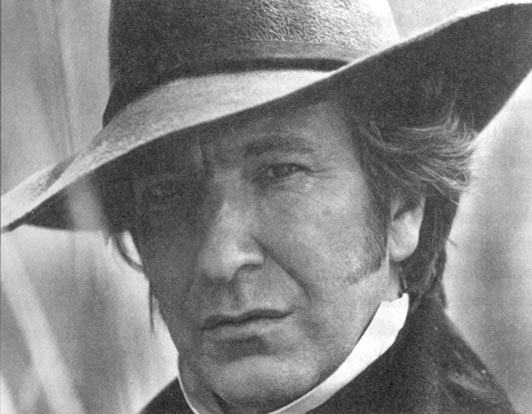
次日，埃莉诺对玛丽安娜与威洛比的感情有了更进一步的认识。玛格利特激动地跑来告诉她说她肯定玛丽安娜很快就会嫁给威洛比了。
“哦，埃莉诺！”她喊道，“我有个秘密要告诉你。昨晚喝完茶我看到他俩了。威洛比先生正在向玛丽安娜请求着什么，然后他剪下她长长的一绺头发，亲吻了它并把它放进口袋里。”
埃莉诺现在确信他们已经订婚了，但对他们还没有通知亲友感到惊讶。
约翰爵士最新的娱乐计划是第二天去一座名叫惠特韦尔的漂亮宅邸及其花园游玩。一大帮人将乘坐马车前往那里，带上装满食物和饮料的野餐篮子。他们期待在那里度过美好的一天。惠特韦尔的主人是布兰登上校的妹夫，因此上校也将随行前往。似乎只有他能安排他们访问那里。
然而不幸的是，当大伙儿在巴顿庄园集合吃早饭的时候，一封信送到了布兰登上校的手中。他匆匆扫了一眼就一言不发地急忙走出房间。过了一会儿他回来时看上去比平时更严肃。他解释说他有急事必须立即赶往伦敦，所以不能和大家一块儿去了。尽管詹宁斯夫人一直向他发问，他还是不愿意再多做解释。除了埃莉诺外，每个人都努力试图说服他把那件事推后，好让大家能够出游。但他还是不为所动，在祝他们玩得愉快后，就走出了房间。
由于出游计划泡汤了，大伙儿决定乘马车去乡间兜风。马车很快就准备好了。威洛比的马车排在最前面，而玛丽安娜上车时看上去比以前任何时候都高兴。他驾车飞驰，两人很快就从人们的视野中消失了。在他们那天下午回来之前，谁也没见到他们的踪迹。
那天晚上大家坐下来吃晚饭的时候，詹宁斯夫人小声地跟玛丽安娜说话。但埃莉诺还是听到了谈话的内容。“尽管你们很聪明，小姐，但还是被我发现了。我知道你们一上午去了哪儿。”
玛丽安娜的脸一下子红了，她很快地问：“哪里？”
詹宁斯夫人心照不宣地一笑说：“玛丽安娜小姐，我希望你喜欢你们的房子。它毫无疑问很宽敞，我希望等我去那儿拜访你们的时候，它已经整修一新了。我上一次去时，那房子急需添置新家具。”
玛丽安娜困惑地转过脸去，詹宁斯夫人高声笑着解释说她从仆人那里得知玛丽安娜和威洛比上午去了艾伦汉姆并花了不少时间参观了史密斯夫人的房子。
埃莉诺觉得这很难令人相信。玛丽安娜还没有被引见给史密斯夫人，而在史密斯夫人仍然在那里的时候去看房子是一件很失礼的事。但当她询问妹妹时，却发现这是真的。玛丽安娜对她的怀疑感到很生气。
“我为什么不该去看那座房子？”玛丽安娜叫道，“这是我一生中最快乐的一个上午。”
“恕我直言，”埃莉诺平静而坚定地答道，“令人高兴的事不一定都是正确的。”
认真地想了几分钟后，玛丽安娜说道：“也许吧，埃莉诺，你或许是对的。我本不该去的。但那些房间真是太漂亮了。有一个漂亮的小客厅，如果配上时髦的家具简直就太完美了。”要不是埃莉诺打断她，玛丽安娜肯定会逐一描绘房子里的每个房间。
埃莉诺现在没工夫思考为什么布兰登上校那么突然地被叫走，她满脑子都在想为什么玛丽安娜和威洛比对他们的订婚保持了不同寻常的沉默。即便他们不想很快结婚，他们也似乎没有理由不告诉母亲和自己。威洛比的确并不富有，他经常抱怨自己贫穷，因此他或许得等到继承了遗产才能结婚。然而这种保密行为和他们一贯的开诚布公反差如此之大，连埃莉诺都开始怀疑他们是否真的订婚了。
没有什么比威洛比的一举一动更能体现他对她们的感情。他似乎将巴顿小屋看作自己的家。当达什伍德夫人提到她打算对房子进行改建时，他看上去几乎吓了一跳。他请求她连一块石头也不要改动。
“达什伍德夫人，请您不要这样做！”他大声说，“请不要糟蹋这房子，现在这样是最好的。请想想我在这儿得到多少快乐！请您保证不对这房子作任何改变，一点儿也不要变！”
为了让他高兴，达什伍德夫人答应了。
“您的保证让我感到欣慰。不过我还要再请求您一件事。请您告诉我不仅您的屋子会保持原样，而且您和您的家人也不会变，你们将永远亲切地对待我，正是这种亲切使你们对我来说如此珍贵。”
达什伍德夫人做了保证。威洛比那晚的举止证明他与她们在一起非常愉快。
4．Departures and arrivals
4
Departures and arrivals
The next morning, Mrs Dashwood, with two of her daughters, went to visit Lady Middleton. Marianne wished to remain at home, and her mother, thinking that no doubt Willoughby had promised to call on her while she was alone, was quite happy to agree. When they returned from the Park, they found, as expected, Willoughby's carriage waiting outside the cottage. But what they did not expect, as they entered the house, was to see Marianne rush out of the sitting-room, sobbing uncontrollably, and run upstairs. Surprised and worried, they went into the room, where they found only Willoughby. His face showed signs of the same strong feelings that had moved Marianne.
'Is Marianne ill?' cried Mrs Dashwood.
'I hope not,' he replied, trying to look cheerful. 'Indeed, it is I who may expect to be ill, as I am now suffering under a very heavy disappointment. I am unable to visit you any longer. My cousin, Mrs Smith, has this morning decided to send me to London on business. As a poor dependent relation, I must do what she asks. I have already left Allenham, and now I have come to say goodbye to you.'
'This is very unfortunate. But Mrs Smith's business will not keep you from us for very long, I hope.'
He reddened as he replied, 'You are very kind, but I have no hope of returning to Devonshire immediately. My visits to Mrs Smith are never repeated within the year.'
'And is Mrs Smith your only friend? Is Allenham the only house where you are welcome? My dear Willoughby! Surely you do not need to wait for an invitation to Barton Cottage?'
His colour deepened, and, with his eyes fixed on the ground, he only replied, 'You are too good.'
Mrs Dashwood looked at Elinor with surprise, and Elinor felt just as astonished.
After a moment's silence, Willoughby added confusedly, 'At present—my—my time is not my own... I cannot hope...' He stopped. Then, smiling weakly, he said, 'It is foolish to go on in this manner. I will not punish myself any longer by remaining among friends whose society it is impossible for me now to enjoy.' Hurriedly he said goodbye and left the house. His carriage was soon out of sight.
Mrs Dashwood's concern and alarm at his sudden departure were too great for her to express. Elinor also felt extremely disturbed by Willoughby's changed behaviour. One moment she feared that he had never had any serious intention of marrying Marianne, and the next, that some unfortunate argument had taken place between him and her sister. But her strongest feeling was one of pity for Marianne, who must now be in the depths of the most violent sorrow; and her romantic nature would consider it a duty to feed and encourage her misery.
Soon Mrs Dashwood felt able to discuss the situation with her eldest daughter. She was now more cheerful, and had persuaded herself that Willoughby was only leaving Devonshire on the orders of his rich relation, because Mrs Smith suspected, and disapproved of, his engagement to Marianne. 'His dearest wish,' she went on, 'will be to return to Barton as soon as he can.'
Elinor, listening patiently, agreed that this was quite possible.
'But if they are engaged,' she said, 'although it may be necessary to hide the truth from Mrs Smith, there is no reason to hide it from us.'
'My dear child!' cried her mother. 'It is strange for you to accuse Willoughby and Marianne of hiding their feelings, when you have accused them of showing their feelings too openly.'
'I want no proof of their affection,' said Elinor, 'but of their engagement I do.'
'I am perfectly happy with both. Has not his behaviour to Marianne, for at least the last fortnight, shown that he loved her and considered her his future wife? Is it possible, Elinor, to doubt their engagement? Willoughby must be aware of your sister's love for him. How could he leave her, perhaps for months, without telling her of his affection?'
'I confess,' said Elinor, 'that everything points towards their engagement, except for one thing—their silence on the subject—and for me that is the greatest difficulty of all.'
'Oh Elinor, I do not understand you! You prefer to believe in bad rather than good. Do you suspect Willoughby? But is he not a man of honour and feeling? You cannot really think he is deceiving Marianne? '
'I hope not, I believe not,' cried Elinor. 'I sincerely love Willoughby, and I find it painful to suspect his intentions. Perhaps, indeed, you are right, and there is a simple explanation for his strange behaviour this morning.'
They saw nothing of Marianne until dinner, when she took her place at the table without saying a word. Her eyes were red and her face pale; she avoided looking at anyone, and could neither eat nor speak. She continued in the depths of misery all evening. Any mention of anything to do with Willoughby made her burst into tears instantly, and although her family were most anxious for her comfort, it was impossible for them to keep clear of every subject which her feelings connected with him.
Marianne would have thought herself very insensitive if she had been able to sleep at all the first night after parting from Willoughby. She would have been ashamed to look her family in the face, if she had not risen from her bed more in need of rest than when she lay down on it. But there was no danger of this happening. She spent most of the night sobbing bitterly, and got up with a headache. She passed the rest of the day, and several more days after that, in feeding her sorrow, by playing all Willoughby's favourite songs, by reading the books they used to read together, and by walking alone on the hills where they used to walk, until her heart was so heavy that no further sadness could be added. No letter from Willoughby came, and none seemed expected by Marianne. Her mother was surprised, and Elinor again began to worry.
One morning, about a week later, Elinor persuaded Marianne to join her sisters in a walk. As they went along the road away from the cottage, they saw a gentleman riding towards them, and at once Marianne cried out in delight, 'It is he! I know it is!'
She ran eagerly to meet him, but Elinor called out, 'Marianne, I think you are wrong. It is not Willoughby.'
But Marianne would not listen, and continued running until she was quite near the rider, when she stopped suddenly. She had realized it was not Willoughby, and her disappointment was almost too great to bear. Just then, the gentleman called to her, and she recognized Edward Ferrars.
He was the only person in the world who could at that moment be forgiven for not being Willoughby, and she smiled at him, holding back her tears. After the greetings, however, she watched with growing surprise his polite and distant behaviour to Elinor, which was very unlike a lover's. And when she heard that he had already been in Devonshire for a fortnight, without coming to see Elinor, she almost began to feel dislike for him.
'Have you been to Sussex recently?' asked Elinor.
'I was at Norland about a month ago,' replied Edward.
'How does dear, dear Norland look?' cried Marianne.
'Dear, dear Norland,' said Elinor, 'probably looks much the same as it usually does at this time of year—the woods and walks thickly covered with dead leaves.'
'Oh!' cried Marianne, 'those falling leaves gave me such delight! How I used to love seeing them driven around me by the wind! Now there is no one to watch them, no one to care.'
'It is not everyone,' said Elinor, 'who has your passion for dead leaves.'
They all returned to the cottage together, where Edward received the kindest possible welcome from Mrs Dashwood. Under her warm influence he began to lose his shyness, or coldness, and to become more like himself, but he still did not seem cheerful. This was noticed by the whole family.
'Well, Edward,' said Mrs Dashwood, after dinner, 'what are your mother's plans for you at present? Does Mrs Ferrars still want you to be a politician?'
'No, I hope my mother realizes I can never do that. I am afraid she and I will never agree in our choice of a profession for me. As you know, I did not enjoy studying law. I have always preferred the Church, but that is too ordinary for my family.'
'So how are you to become famous? Because that is what all your family wants, I understand.'
'I shall not attempt it. I have no wish to be grand or important, and I have every reason to hope I never shall be.'
'I know you are not ambitious, Edward.'
'No. I wish, like everybody else, to be perfectly happy, but in my own way. Greatness will not make me happy.'
'How right you are!' cried Marianne. 'What has wealth or greatness to do with happiness?'
'Greatness has very little,' said Elinor, 'but wealth has much to do with it.'
'Elinor!' cried Marianne, shocked. 'Money can only give happiness where there is nothing else to give it. Beyond answering our basic needs, money is of no use to us at all.'
'Perhaps,' said Elinor, smiling, 'we may agree in the end. Your basic needs and my wealth are very much alike, I expect. Come, what is your basic figure?'
'Two thousand a year, not more than that.'
Elinor laughed. 'Two thousand a year! One is my wealth! I guessed what you would say.'
'And yet two thousand a year is not a large income. A family cannot live on less. The right number of servants, a carriage, and horses for riding, cannot be paid for with less than that.'
Elinor smiled again, to hear her sister describing so accurately her future life with Willoughby.
During Edward's visit, Elinor was careful to behave to him with her usual politeness and interest, but in her heart she was alarmed by his coldness towards her. It was clear that he was unhappy, and she doubted very much whether he still loved her. She could see, however, that his feelings were confused; sometimes, for a moment, he looked at her as he used to, and this gave her hope again.
The next day, as Marianne was passing some tea to Edward, she noticed a ring on his finger, and mentioned it.
'I never saw you wear a ring before, Edward,' she cried. 'Is that your sister's hair in the ring? But surely hers is darker?'
Edward blushed deeply, and looking quickly at Elinor, said, 'Yes, it is Fanny's hair. It looks lighter than it really is.'
Elinor had met his eye, and knew the truth. She felt sure that the hair was her own, but it must have been taken from her without her knowing. She was not in the mood, however, to disapprove of this action, and changed the subject quickly.
The Dashwoods were sorry to hear that Edward had to leave them after only a week. Although he expressed his great pleasure at seeing such old friends, and could give no good reason for his departure, there seemed to be something forcing him to leave.
Elinor blamed his mother for his rather odd behaviour. His lack of cheerfulness could easily be explained by his lack of independence. She wondered when, if ever, his mother would finally drop all her ambitions for him, and allow him to make his own choices in life. A more comforting thought was the memory of his pleasant looks and words to her during his visit, and above all, the proof of his affection that he wore round his finger.
In spite of the painfulness of Edward's departure, Elinor was determined to hide her feelings, and show a brave face to the world. Doing this did not lessen her sadness, but at least prevented her family from worrying about her. Marianne could not admire such behaviour, so unlike her own; she believed that self-control was easy for calm natures like Elinor's, and simply impossible for passionate ones like hers.
One morning soon after Edward had left, Sir John and Lady Middleton and Mrs Jennings came to visit the Dashwoods, bringing with them Mr and Mrs Palmer. Charlotte Palmer was Mrs Jennings' younger daughter, but was completely unlike her sister, Lady Middleton, in every way. She was short and rather fat, had a very pretty face, and smiled or laughed all the time. Her husband was a serious-looking young man, who made no effort to please or be pleased. He read the newspaper for most of the visit, only lifting his head from time to time to give a cross, unsmiling answer to his wife's foolish questions. She, however, took an immediate liking to Elinor and Marianne, and spent much time in conversation with Elinor in particular. When Elinor realized that their home was in Somerset, near Willoughby's, she hoped to hear more about his character, so she asked Mrs Palmer if they knew him.
'Oh yes, I know him extremely well,' replied Mrs Palmer. 'Not that I ever spoke to him, indeed, but I have often seen him in town. Everybody likes and admires him. I know very well why you ask. I am delighted that your sister is to marry him!'
'You know much more of the matter than I do,' said Elinor, surprised, 'if you have any reason to expect that.'
'Don't pretend it's not true, because you know it's what everybody in London is talking of.'
'My dear Mrs Palmer!'
'On my honour, they all talk of it. I met Colonel Brandon on Bond Street, and he told me of it immediately.'
'You surprise me very much. I would not expect Colonel Brandon to give such information, even if it were true.'
'Well, when I met him, I said, "Colonel, I hear there is a new family at Barton Cottage, and mama says the girls are very pretty, and that one of them is engaged to Mr Willoughby. Is it true?" And he said nothing, but from his expression I knew it was certain. Of course, I have known Coloner Brandon a long time. I believe,' she added in a low voice, 'he would have been very glad to marry me if he could. But mama did not think him a good enough husband for me. In any case, I am much happier as I am. Mr Palmer is just the kind of man I like.'
cousin n. a relative descended from a common ancestor, such as a grandparent, by two or three steps in a diverting line 远亲
deceive v. to make someone believe something that is not true in order to get what you want 欺骗
bitterly adv. in a way that makes you very unhappy, or show that you are very unhappy 痛苦地
fortnight n. two weeks 两星期
politician n. someone who works in politics, especially an elected member of a parliament or similar institution 政治家（尤指议员等）
accurate adj. accurate information, reports, descriptions etc are correct because all the details are true （信息、报道、描述等）准确的
cross adj. angry or annoyed 生气的，恼怒的
去与来
4．去与来
第二天早上，达什伍德夫人要和两个女儿一起去拜访米德尔顿夫人。玛丽安娜希望留在家里，她母亲知道肯定是威洛比答应在玛丽安娜独自在家时来看她，所以就爽快地答应了。她们从庄园回来时，发现正如她们预料的一样威洛比的马车停在屋外。但令她们感到意外的是进门时却看到玛丽安娜大哭着冲出客厅跑上楼去。她们吃惊而焦虑地走进房间，发现威洛比独自待在里面，像玛丽安娜一样神情激动。
“玛丽安娜病了吗？”达什伍德夫人大声问。
“我希望没有，”他回答道，并尽力装出快活的样子，“其实我才快要病倒了，因为我正忍受着极度失望的折磨。我以后不能来看你们了。我的亲戚史密斯夫人今天早上决定派我去伦敦办事。我只是她的一个穷亲戚，凡事都得依靠她，因此必须对她惟命是从。我已经离开了艾伦汉姆，我现在是来和你们告别的。”
“这太不幸了。不过但愿史密斯夫人的差事不会让你和我们分离太久。”
他涨红了脸答道：“您真是太好了，但我恐怕一时回不了德文郡。我一年内都不会再来看史密斯夫人了。”
“那么你就只有史密斯夫人这一个朋友吗？难道只有艾伦汉姆这一栋房子欢迎你吗？我亲爱的威洛比啊！你来巴顿小屋做客用不着等我们事先邀请吧？”
他的脸变得更红了，眼睛直勾勾地盯着地板，他只是回答道：“你们对我太好了。”
达什伍德夫人吃惊地望着埃莉诺，而埃莉诺也同样感到吃惊。
片刻的沉默过后，威洛比语无伦次地补充说：“眼下，我，我不能自己支配时间……我无法希望……”他停住了。然后，他无力地笑着说：“继续这样说下去实在很傻。既然以后再也不能享受跟朋友在一起的快乐，再耽搁下去只是对自己的惩罚。”他匆匆地道别后起身离去。他的马车很快就看不到了。
达什伍德夫人对威洛比突然离去的担忧和惊慌已经超出了她所能表达的范围。埃莉诺也为威洛比的异常举动而心神不宁。她一会儿害怕威洛比根本就没有认真想过娶玛丽安娜为妻，一会儿又担心他们之间发生了一场不幸的争吵。但她最强烈的情感是对玛丽安娜的怜悯，她这会儿一定陷入了最深沉的悲伤；而她浪漫的天性只会加重她的哀愁。
达什伍德夫人很快就平静下来，可以跟长女谈论眼下的情况了。她现在感觉好了一些，也已经说服自己相信威洛比只不过是奉他富有的亲戚之命才离开德文郡的，因为史密斯夫人怀疑并且不赞同他同玛丽安娜的婚约。“他最大的愿望，”她继续说道，“肯定是尽早回到巴顿来。”
埃莉诺耐心听着，也觉得事情很有可能是这样的。
“但是如果他俩真的订婚了，”她说道，“尽管隐瞒史密斯夫人或许是必要的，但实在没有理由不让我们知道啊。”
“我亲爱的孩子！”她母亲大声说，“你一边指责威洛比和玛丽安娜隐藏他们的感情，一边又指责他们过于公开直露地表露感情，这实在是很奇怪。”
“对于他们之间的感情我不需要任何证据，”埃莉诺说道，“但是我的确想要他们已有婚约的证据。”
“对这两件事我毫不怀疑。难道他在玛丽安娜面前的表现——至少是近两周来——没有证明他深爱她并把她当成自己未来的妻子吗？埃莉诺，我们怎么可能怀疑他们之间的婚约呢？威洛比一定意识到了你妹妹对他的爱情。他怎么能够在向她表白之前离她而去，更何况也许一去要好几个月？”
“我承认，”埃莉诺说道，“所有迹象都表明他们已经订婚了，除了一件事——那就是他们对这事三缄其口——而在我看来这是最大的问题所在。”
“哦，埃莉诺，我真的不明白你在想什么！你更愿意相信坏事而非好事。难道你怀疑威洛比吗？难道他不是一个看重荣誉和感情的人吗？你总不会认为他在欺骗玛丽安娜吧？”
“我希望他没有，我也相信他没有，”埃莉诺大声说，“我真诚地喜爱威洛比，而且怀疑他的意图也让我难过。或许你是对的，他今天上午的奇怪行为只是出于很简单的原因罢了。”
她们直到吃晚饭的时候才见到玛丽安娜，她一言不发地在餐桌旁找到自己的位置坐下。她双眼发红，脸色苍白；她没有抬头看任何人，吃不下饭也不说话。她整晚都沉浸在痛苦中。一有人提起跟威洛比有关的事，她都会立刻痛哭流涕，然而尽管她的家人都非常体谅她的感受，但还是不可能避开所有让她想起他的话题。
如果玛丽安娜在与威洛比分开的第一个晚上还能够安然入睡，她一定会觉得自己感情迟钝。如果在起床的时候不比上床时更疲惫的话，她与家人四目相对的时候一定会羞愧难当。但这根本不用担心。她整晚都在痛苦地哭泣，以至于起床时头痛得厉害。在这天剩余的时间里，以及接下来的几天中，她弹奏所有威洛比喜欢的歌曲、读他们以前一起读过的书、独自在他们以前经常一起去的小山上散步，以此增加她的悲伤直到她的心沉重到无法承受为止。威洛比没有来信，似乎玛丽安娜也并不期盼他的来信。她母亲感到很惊讶，而埃莉诺则再一次担忧起来。
一周后的一天上午，埃莉诺说服玛丽安娜跟她和妹妹一起出去散步。她们沿着屋外的小路往远处走的时候看到一位绅士策马朝她们而来。玛丽安娜立刻快乐地叫喊起来：“是他！我知道那就是他！”
她飞奔过去迎接他，但是埃莉诺喊道：“玛丽安娜，我想你弄错了，那不是威洛比。”
可是玛丽安娜根本听不进去，她一直跑到离骑马者没多远的地方突然停了下来。她已经意识到那个人并不是威洛比。她失望极了。就在这时，那位绅士喊了她一声，她认出那人是爱德华·费拉尔斯。
这一刻，他是世界上唯一一个能被原谅不是威洛比的人，于是她强忍住泪水向他露出微笑。然而寒暄之后，她却惊讶地发现他在埃莉诺面前那种礼貌而疏离的举止完全不像是一个恋人的行为。当她听说他已经在德文郡待了两周却没来看望埃莉诺的时候，她几乎开始厌恶他了。
“你最近去过萨塞克斯郡吗？”埃莉诺问。
“我一个月前去过诺兰庄园。”爱德华回答。
“亲爱的诺兰庄园现在怎么样了？”玛丽安娜大声问。
“亲爱的诺兰庄园，”埃莉诺说，“也许跟往年这个时候一样——树林里和林间小径上都盖满了落叶。”
“哦！”玛丽安娜大声说，“那些落叶曾让我如此地快乐！我过去最喜欢看到它们在我周围随风飘零！现在没有人会去欣赏和在乎它们了。”
“不是每个人，”埃莉诺说，“都像你那样喜欢落叶。”
他们一起回到小屋，爱德华在那里受到了达什伍德夫人最热情的欢迎。被她的热情感染，他开始变得不那么害羞了，或者说不那么冷淡了，他自然了一些，但似乎还是心情低落。大家都注意到了这一点。
“那么爱德华，”达什伍德夫人吃过晚餐后说，“你母亲现在对你有什么打算呢？费拉尔斯太太仍然希望你从政吗？”
“不，我希望我母亲意识到我绝对无法从政。恐怕我和她在我职业的选择上永远无法达成一致。您知道，我不喜欢学习法律。我一直更倾向于进入教会，但这在我家人看来太一般了。”
“那么你怎样才能出名呢？因为在我看来这正是你家人所希望的。”
“我不会有任何这样的企图。我不希望出人头地，而且我有足够的理由认为我永远都会做一个平凡的人。”
“爱德华，我知道你这人没有野心。”
“我没有。我希望跟别人一样过得快乐，不过是以我自己的方式。出人头地并不能使我感到快乐。”
“你说的太对了！”玛丽安娜大声赞同，“财富与出人头地跟快乐又有什么关系呢？”
“出人头地跟快乐没有什么关系，”埃莉诺说，“但是财富却和快乐关系密切。”
“埃莉诺，”玛丽安娜震惊地说，“金钱只有在没有其他东西能够带来快乐的地方才能带来快乐。除了满足我们的基本需求，金钱对我们来说毫无用处。”
“也许吧，”埃莉诺微笑着说，“我们或许最终能够达成一致。我估计你所说的基本需求和我所说的财富基本上是一码事。说吧，你说的基本需求折合成钱数是多少？”
“一年两千英镑，不会超过这个数目。”
埃莉诺笑了。“一年两千英镑！而我说的财富不过一年一千英镑。我就猜到你会这样说。”
“但是一年两千英镑并不算很高的收入。一家人是无法靠低于这个数字的收入生活的。适当数量的佣人、一辆马车还有马，低于这个数目的收入就无法维持这些东西了。”
埃莉诺听到妹妹如此精确地描绘未来与威洛比在一起的生活，再一次笑了起来。
爱德华做客期间，埃莉诺谨慎地在他面前表现出她一贯的礼貌和关心，但是对方的冷淡使她暗自警觉起来。他明显情绪不佳，而她非常怀疑他是否仍然爱她。但她看得出来他的心中充满了困惑；有时他会用从前看她的那种眼神望她一会儿，这重新给了她希望。
次日，玛丽安娜递茶给爱德华的时候，注意到他手上戴着一枚戒指，于是开口问他。
“我以前从来没有见过你戴戒指，爱德华，”她说，“戒指上是你妹妹的头发吗？但是她头发的颜色肯定比这更深。”
爱德华的脸涨得通红，他很快地看了埃莉诺一眼，说：“是的，这是范妮的头发。看起来比实际颜色要浅些。”
埃莉诺已经看到了他的眼睛并知道了真相。她确信那是自己的头发，但那一定是趁她不注意时剪去的。然而她没有心情来谴责这种行为，于是很快转换了话题。
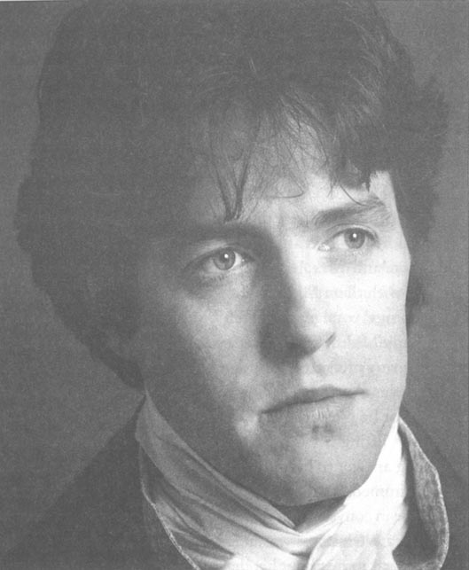
达什伍德一家听说爱德华一周后就要走都感到十分遗憾。他说与老朋友们重逢很快乐，但却无法给出离开的合适理由，似乎有什么东西迫使他离开。
埃莉诺将他的反常归罪于他的母亲。他缺乏独立才会这么闷闷不乐。她不知道他的母亲何时才会放弃对他的所有期望，允许他自己选择生活。让她稍感慰藉的是回忆他做客期间令人愉快的外表和言语，最重要的是他对她感情的证明就戴在他的手指上。
尽管爱德华的离开令她感到痛苦，埃莉诺决心隐瞒内心的感受，做出一副勇敢的样子。尽管这样做并不能减少她的痛苦，但至少能不让她的家人为她担心。玛丽安娜无法欣赏这种与自己迥然相异的做法；她认为自控对像埃莉诺这种天性冷静的人来说很容易，但是对她那种天性充满热情的人来说简直是不可能的。
爱德华走后没多久的一天上午，约翰爵士、米德尔顿夫人和詹宁斯夫人前来拜访达什伍德一家，与他们同行的还有帕尔默夫妇。夏洛特·帕尔默是詹宁斯太太的小女儿，但完全不像她的姐姐米德尔顿夫人。她个子不高，比较胖，脸蛋很漂亮，总是在笑。她丈夫是一个表情严肃的年轻人，他既不屑讨好人也不屑被人讨好。他在做客的多数时间里都在读报纸，只是时不时地抬起头来不耐烦地板着脸敷衍他妻子愚蠢的问题。不过他妻子很快就喜欢上了埃莉诺和玛丽安娜，大部分时间都与埃莉诺交谈。埃莉诺发现他们住在离威洛比家不远的索美塞，想更多地了解一下他的人品，于是问帕尔默夫人是否认识他。
“哦，是的。我当然认识他，”帕尔默夫人说，“我没有跟他说过话，但是我经常在城里看到他。大家都喜欢他。我知道你为什么问我这个。我很高兴你妹妹要嫁给他了！”
“如果你有充足的理由这么说，那你比我对这件事知道得还多。”埃莉诺吃惊地说。
“不要假装这不是真的，因为你要知道大家在伦敦就是这么议论的。”
“我亲爱的帕尔默夫人！”
“我以我的名誉起誓，他们都是这样说的。我在邦德街遇到了布兰登上校，他立刻跟我说了这件事。”
“你让我很吃惊。我没有想到布兰登上校会向你提供这样的消息，即使这是真的。”
“当我遇到他的时候，我说：‘上校，我听说巴顿小屋里搬来了一家人，妈妈说那家的女儿们非常漂亮，其中一个已经与威洛比先生订婚了。这是真的吗？’他什么都没说，但是看他的表情我就知道这千真万确。当然，我跟布兰登上校是老相识了。我相信，”她低声补充说，“如果可以的话，他一定会很愿意娶我的。但是妈妈并不认为他适合做我丈夫。不管怎样，我现在很幸福。帕尔默先生正是我喜欢的那种男人。”
5．Lucy Steele's secret
5
Lucy Steele's secret
The Palmers returned to Somerset the next day. But it Was not long before Sir John had more visitors at Barton park. On a morning's excursion to Exeter, he and his mother-in-law had met two young ladies, the Miss Steeles, whom Mrs Jennings discovered to be distant cousins. Sir John, always eager for society, immediately invited them to stay at the Park as, soon as they were available, and, most fortunately, they were able to accept the invitation almost at once.
The young ladies arrived. Their appearance was by no means unfashionable, their dress was elegant, and their manners were very polite. They were delighted with the house and furniture, and they happened to be so madly fond of children that Lady Middleton had an excellent opinion of them by the time they had been at the Park for an hour. Sir John hurried off to Barton Cottage to tell the Miss Dashwoods.
'They are the sweetest girls in the world!' he said. Elinor smiled at this. She knew that, for Sir John, the sweetest girls in the world were in every part of England, with every possible kind of face, figure, and character. Sir John wanted the whole family to walk to the Park immediately and look at his guests. Kind, thoughtful man! It was painful to him even to keep a third cousin to himself. But in spite of his efforts, he could only gain the Dashwoods' promise to visit the Park in a day or two.
When the promised visit took place, they found nothing to admire in the appearance of the elder Miss Steele, who was nearly thirty, with a very plain face. However, the younger, Miss Lucy Steele, who was not more than twenty-three, had a considerable beauty. Her face was pretty, she had a sharp, quick eye, and she held herself with a certain air. Elinor soon noticed the pleasing manners and constant attentions with which they were winning Lady Middleton's approval. They were full of praise for the beauty and intelligence of her children, and full of admiration for Lady Middleton herself. Fortunately for those who use these clever tricks, a fond mother can never hear enough praise of her children, and therefore will swallow anything. Lady Middleton watched proudly as her spoilt children pulled the Miss Steeles' hair, stole their sewing scissors, and tore their books; she felt no doubt that the Miss Steeles were enjoying this quite as much as her children. She was only surprised that Elinor and Marianne should sit so calmly, without taking any part in the enjoyment.
'How playful dear little William is!' she said lovingly, as her second boy violently pulled Miss Steele's finger. 'And here is my sweet Annamaria, such a quiet little thing!' She bent to kiss her daughter, but unfortunately a pin in her dress scratched the child's neck. Violent screams rang out, and the Miss Steeles rushed to help the suffering child. The little girl realized that the louder she screamed, the more attention she would receive, and nothing could be done to calm her. Finally her mother was forced to carry her upstairs, in search of her nurse, and the four young ladies were left in a quietness which the room had not known for many hours.
'Poor little creature!' said the elder Miss Steele.
'I do not think there was any real cause for alarm,' said Marianne firmly.
'What a sweet woman Lady Middleton is,' said Lucy Steele.
Marianne was silent, as it was impossible for her to say what she did not feel. It was Elinor who was forced to reply.
'She is a very fond mother,' she said, truthfully.
'And the children!' cried Lucy. 'I love to see children full of life and fun! I cannot bear them quiet.'
'I confess,' replied Elinor, 'that while I am at Barton Park, I never think of quiet children with any displeasure.'
A short silence was broken by the elder Miss Steele, who suddenly changed the subject by saying, 'How do you like Devonshire, Miss Dashwood? I suppose you were very sorry to leave Sussex. Norland is a beautiful place, is it not?'
'We have heard Sir John admire it,' said Lucy quickly.
Elinor was surprised that the Miss Steeles seemed to know so much about her family. 'Indeed, it is a lovely place.'
'And had you a great many handsome young bachelors there?' asked Anne Steele. 'I am afraid you may find it dull here. I do like a place with a lot of good-looking young men, but they must dress well and behave politely. I suppose your brother was quite an elegant young man before he married?'
'Well,' replied Elinor, 'if he was before he married, he still is, because he has not changed at all.'
'Oh dear, I never think of married men being handsome young men—they have other things to do.'
'Good heavens, Anne!' cried her sister. 'You can talk of nothing but young men—you will make Miss Dashwood believe you think of nothing else!' And she turned to another subject.
This one meeting with the Miss Steeles would have been quite enough for Elinor, who disliked the vulgar freedom and foolishness of the elder, and the clever pretences of the younger. She left the Park without wishing to know them better. The Miss Steeles, however, thought differently, and so did the sociable Sir John. Soon the young ladies of both houses were sitting or walking together for an hour or two almost every day. Anxious that they should get to know each other well, Sir John had helpfully informed the Miss Steeles of all the details of the Dashwoods' lives, and soon Anne Steele congratulated Elinor on her sister's fortunate engagement to a very fine young man.
'What a good thing to be married so young,' she added. 'I hear he is extremely handsome. I hope you may have such good luck yourself—but perhaps you have someone already.'
The Miss Steeles also heard from Sir John, with many smiles and jokes, about Elinor's suspected attachment to a young man who had recently visited Devonshire.
'His name is Ferrars,' whispered Sir John, so that everyone could hear, 'but it's a great secret.'
'Ferrars!' repeated the elder Miss Steele. 'Mr Ferrars? Your sister-in-law's brother, Miss Dashwood? A very pleasant young man. We know him very well.'
'How can you say that, Anne?' cried Lucy, who nearly always corrected everything her sister said. 'We have only seen him once or twice at my uncle's.'
Elinor was astonished. Who was this uncle? Where did he live? And how did they come to know Edward? She wished very much to have the subject continued, but nothing more was said about it, and she preferred not to ask questions hereself.
In the next few days, Lucy missed no opportunity of engaging Elinor in conversation. She was naturally clever, and often amusing, and as a companion for half an hour Elinor found her quite pleasant. However, she knew nothing of books, music or painting, in spite of her constant efforts to appear well informed. Elinor pitied her for her lack of education, but disliked her insincerity, her dishonesty, and the narrow self-interest that lay behind all her words and actions.
One day, as they were walking alone together, Lucy said, 'You will think my question strange, no doubt, but do you personally know your sister-in-law's mother, Mrs Ferrars?'
Elinor did think the question strange. 'I have never seen her,' she answered, a little distantly.
'Then you cannot tell me what sort of woman she is?'
'No,' replied Elinor, cautious of giving her real opinion of Edward's mother. 'I know nothing of her.'
Lucy looked fixedly at Elinor. 'I wish I could tell you—I hope you will believe I am not just being curious or impolite.' She hesitated. 'I do want your good opinion. And I am sure I would not have the smallest fear of trusting you, indeed I would be very glad of your advice. I am in such an uncomfortable situation! I am sorry you do not happen to know Mrs Ferrars.'
'I am also sorry,' said Elinor in great astonishment, 'if it could be of any use to you to know my opinion of her. But I never understood you were at all connected with that family.'
'I do not wonder at your surprise. Mrs Ferrars is nothing to me at present, but the time may come when we may be very closely connected.' She looked shyly down as she said this, with only a quick look sideways at Elinor.
'Good heavens!' cried Elinor. 'What do you mean? Connected—with Mr Robert Ferrars?' And she did not feel much delighted with the idea of such a sister-in-law.
'No,' replied Lucy, 'not with Mr Robert Ferrars—I never saw him in my life—but,' fixing her eyes on Elinor, 'with his elder brother, Edward.'
Elinor looked at Lucy in silent astonishment.
'You must be surprised,' continued Lucy, 'because of course he never mentioned it to any of your family. It is a great secret, and none of my relations know of it except Anne. I would never have told you, if I had not trusted you completely. And I really thought I ought to explain my behaviour in asking about Mrs Ferrars. I know Mr Ferrars will not be displeased when he hears I have told you, because he has the highest opinion in the world of all your family, and looks on you and the other Miss Dashwoods quite as his own sisters.'
Elinor forced herself to speak calmly. 'May I ask how long you have been engaged?'
'We have been engaged for four years now.'
'Four years!' Elinor still felt unable to believe it.
'My sister and I often stayed at my uncle's house near Plymouth, here in Devonshire. Edward came to study law there for four years, and so we met, and became engaged. I was very unwilling to enter into it, as you may imagine, without his mother's approval, but I was too young and loved him too well to be as cautious as I ought to have been. Dear Edward! Look, I carry his picture everywhere with me.'
She took from her pocket a small painting and showed it to Elinor. Elinor's last doubts of the truth of Lucy's story disappeared as she recognized Edward's face.
'You can't think how I am suffering,' continued Lucy. 'Everything is so uncertain, and we see each other so infrequently! I wonder my heart is not broken.' Here she put a hand to her eyes, but Elinor did not feel sympathetic.
'Sometimes,' Lucy added, 'I think it would be better for both of us if I broke off the engagement completely.' She looked sharply at her companion. 'But then I cannot bear the thought of making him miserable. And to me, too, he is so very dear. What would you advise me to do, Miss Dashwood?'
'I am afraid I cannot advise you in such a situation. You must decide for yourself.'
'Poor Edward! His mother must provide for him one day, but he is so depressed about his future! Did you not think him unhappy when he arrived at Barton recently?'
'Yes,' said Elinor, aware of yet another fact in support of Lucy's story.
'He had been staying with us at my uncle's. It made him so miserable, not being able to stay more than a fortnight, and seeing me so upset. He still feels just the same. I heard from him before I left Exeter.' Taking a letter from her pocket, she waved the envelope in Elinor's direction.
Elinor recognized Edward's writing, and finally had to accept that they must be engaged. Her heart sank within her.
'Poor Edward does not even have a picture of me,' Lucy went on, 'although I have his. But I gave him a lock of my hair in a ring recently, and that was some comfort to him, he said. Perhaps you noticed the ring on his finger?'
'I did,' said Elinor. Her voice was calm, but her calmness hid an unhappiness greater than she had ever felt before. She was shocked, confused, and miserable.
Here their conversation ended, and Elinor was left alone, to think. She felt sure that Edward's affection was still hers. He certainly loved her, and had never intentionally deceived her. Unfortunately, he was now tied by an early and foolish engagement to a pretty, but insincere, vulgar and selfish girl, whose main interest lay in his future income. Elinor's tears flowed more for Edward than herself. She had lost her chance of happiness with him, but would only be miserable for a time, while he had nothing at all to look forward to in life.
Over the next few days, Elinor took great care to hide her unhappiness. She was glad to spare her family the shocking news of Edward's secret engagement, as she knew that their affection and sorrow would only add to her misery. At convenient moments, she returned to the subject in quiet conversation with Lucy. She learnt that Lucy was determined to hold Edward to the engagement, and that Lucy was jealous of her because Edward, apparently, always spoke of her with great admiration. Indeed, what other reason could Lucy have for telling Elinor her secret, if not to warn her to keep away from Edward?
Elinor realized with great sadness that Edward was not only without affection for his future wife, but that he had not even the chance of being reasonably happy in marriage.
available adj. someone who is available is not busy and has enough time 有暇的
swallow v. to immediately believe a story, explanation etc that is not actually true 轻信
truthfully adv. honestly 如实地
confess v. acknowledge or admit 坦白
suspect v. to think that something is probably true or likely, especially something bad 猜想，怀疑
fixedly adv. looking at only one thing 专注地
astonishment n. great surprise or amazement 惊愕
provide for to give someone the things they need, such as money, food, etc 供养
reasonably adv. to a satisfactory degree, although not completely 相当地
露西·斯蒂尔的秘密
5．露西·斯蒂尔的秘密
帕尔默夫妇于次日返回了索美塞。但是很快约翰爵士就为巴顿庄园带来了新的客人。一天上午，他和他的岳母在去埃克塞特的路上遇见了斯蒂尔家的两位小姐，詹宁斯太太发现她们原来还是远房亲戚。一贯热衷于社交活动的约翰爵士立刻邀请她们在有空的时候去他的庄园小住。她们几乎马上就接受了邀请，这真是再好不过了。
这两位年轻小姐来到了庄园。她们外表时髦，穿着高雅，举止彬彬有礼。她们对房子和家具赞不绝口，她们对孩子狂热的喜爱更使她们在到来仅仅一个小时后就给米德尔顿太太留下了十分良好的印象。约翰爵士匆忙赶往巴顿小屋告诉达什伍德家的小姐们。
“她们是世界上最可爱的女孩！”他说。埃莉诺听了这话笑了。她知道对于约翰爵士来说，英格兰到处都是世上最可爱的女孩，她们有着各种各样的长相、身材和性格。约翰爵士想要达什伍德一家立刻动身前往他的庄园去见见他的客人们。真是个善良体贴的人！对他来说，让她们错过一个认识他的远亲的机会也是痛苦的。但是尽管他费尽口舌，达什伍德一家只答应一两天后再去庄园拜访。
当达什伍德一家按照许诺来到庄园的时候，她们并不觉得年长的斯蒂尔小姐相貌过人，她已年近30，相貌平庸。然而，年纪稍小的露西·斯蒂尔小姐确实是个美人。她不过23岁，有漂亮的脸蛋，明亮而活泼的眼睛，身上带有一种独特的气质。埃莉诺很快注意到她们赖以赢得米德尔顿太太欢心的得体举止和持久的殷勤。她们不停地夸米德尔顿太太的孩子们漂亮聪颖，对米德尔顿太太本人更是充满溢美之词。一个溺爱孩子的母亲永远听不够对她孩子的夸奖，因此她会接受任何赞美，这对那些耍这种花招的人来说真是幸运。米德尔顿太太自豪地看着被她宠坏了的孩子们拉扯斯蒂尔姐妹的头发，偷走她们的缝纫剪刀，撕坏她们的书籍。她毫不怀疑斯蒂尔姐妹和她的孩子们一样乐在其中。她只是奇怪为何埃莉诺和玛丽安娜安静地坐着而不与孩子们同乐。
“亲爱的小威廉玩得多么起劲儿啊！”她钟爱地说。她的小儿子正拼命地拉扯着斯蒂尔小姐的手指。“还有我的宝贝安娜玛丽娅，多么安静的小东西！”她弯腰去亲吻女儿，但不幸的是她裙子上的一枚别针划到了孩子的脖子。孩子放声尖叫，斯蒂尔姐妹赶忙去安慰被弄痛的孩子。小女孩意识到她哭得越响就越受人注意，于是不顾一切地闹，怎么也没法让她安静下来。最后，她母亲不得不抱她上楼去找她的保姆，把四位小姐留下来，房间里已经好几个小时没这么安静了。
“可怜的小家伙！”年长的斯蒂尔小姐说。
“我不认为有什么好紧张的。”玛丽安娜口气坚决地说。
“米德尔顿太太是位多么和蔼亲切的女士啊！”露西·斯蒂尔说。
玛丽安娜闭口不语，因为她做不到口是心非。倒是埃莉诺被迫答话。
“她是个很爱孩子的母亲。”她如实地说。
“还有那些孩子们！”露西大声说，“我喜欢看到孩子们活泼快乐！我无法忍受他们太安静。”
“我承认，”埃莉诺回答，“在巴顿庄园的时候，我从来不觉得安静的孩子有什么令人不快的地方。”
短暂的沉寂后，年长的斯蒂尔小姐突然转换了话题说：“达什伍德小姐，你觉得德文郡怎么样？我猜你离开萨塞克斯郡很难受。诺兰庄园是一个美丽的地方，不是吗？”
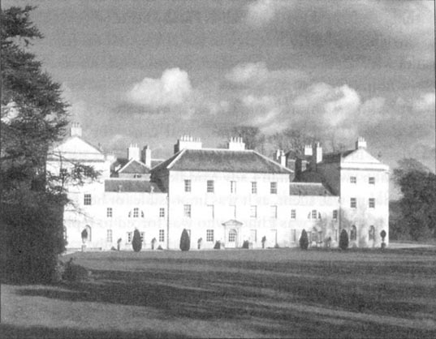
“我们听约翰爵士称赞过那里。”露西很快地说。
埃莉诺很吃惊，因为这两位斯蒂尔小姐似乎知道很多她家的事。“那儿确实是个漂亮的地方。”她说。
“那儿有很多年轻英俊的单身汉吗？”安妮·斯蒂尔问道，“我猜你可能觉得这里很沉闷。我喜欢有很多英俊小伙子的地方，但是他们必须穿着得体，举止文雅。我猜你哥哥婚前一定是个很高雅的年轻人吧？”
“这么说吧，”埃莉诺回答，“如果他婚前是那样的话，那么他现在依旧是那样，因为他一点儿也没有变。”
“哦，亲爱的，我从不把已婚男子看作英俊的年轻人——他们有别的事情要做。”
“天哪，安妮！”她妹妹大声说，“你就会一个劲儿地谈论小伙子——你会让达什伍德小姐以为你除此之外就什么都不想了！”接着她转换了话题。
这次与斯蒂尔姐妹的会面让埃莉诺受够了。她既讨厌当姐姐的粗俗的口无遮拦和愚蠢，又无法忍受做妹妹的自作聪明的假惺惺。她离开庄园的时候毫无与她们深交的愿望。然而斯蒂尔姐妹以及好交际的约翰爵士却有不同的想法。不久之后两家的小姐们几乎每天都有一两个小时在一起小坐或外出散步。约翰爵士热切希望她们能很好地相处，于是把关于达什伍德一家的事都详细地告诉了斯蒂尔姐妹。于是不久之后安妮·斯蒂尔就向埃莉诺祝贺，说她妹妹能与一位非常优秀的小伙子订婚真是幸运。
“那么年轻就能结婚是一件多么美好的事啊，”她补充说，“我听说他帅极了。我希望你自己也有这样的好运——但是也许你已经有对象了。”
谈笑中斯蒂尔姐妹从约翰爵士那里听说埃莉诺似乎与一个最近刚来过德文郡的年轻人之间有恋情。
“他姓费拉尔斯，”约翰爵士低声说，却让大家都听到，“这可是个天大的秘密。”
“费拉尔斯！”年长的斯蒂尔小姐把这个名字重复了一遍，“费拉尔斯先生？是你嫂子的哥哥吗，达什伍德小姐？他是个非常讨人喜欢的小伙子，我们跟他很熟。”
“你怎么能这么说呢，安妮？”露西嚷道，她姐姐说什么她都会纠正，“我们只是叔叔家见过他一两次而已。”
埃莉诺十分吃惊。这个叔叔是谁？他住在哪里？他们是如何认识爱德华的？她非常希望沿着这个话题继续谈下去，但是她们没再多说，而她也不想追问。
在接下来的几天里，露西利用一切机会跟埃莉诺交谈。她天资聪颖，说话时常很风趣，作为一起聊上半个小时的伴儿，埃莉诺觉得她还是挺好的。但是她对书籍、音乐和绘画一无所知，尽管她一直努力装出很懂的样子。埃莉诺同情她缺乏教育，但同时又讨厌她的不真诚、不诚实和她言行背后那狭隘的自私自利。
有一天她俩一起散步的时候，露西说：“你肯定会觉得我的问题很奇怪，你认识你嫂子的母亲费拉尔斯夫人吗？”
埃莉诺确实觉得这个问题很奇怪。“我没见过她。”她回答，口气有一点儿冷漠。
“那么你无法告诉我她是什么样的人喽？”
“我不能，”埃莉诺回答，小心翼翼地不把她对费拉尔斯母亲的真实看法透露出来，“我对她一无所知。”
露西两眼紧盯埃莉诺。“我希望我能够告诉你——我希望你相信我既不好奇也不想无礼，”她迟疑了一下，“我真的希望你对我有个好印象。我确信我一点儿也不害怕信任你，事实上我很乐意听你的建议。我的处境实在让人难受！我很遗憾你不认识费拉尔斯夫人。”
“我也很遗憾，”埃莉诺惊讶地说，“如果知道我对她的看法对你有任何帮助的话。但是我从来都不知道你跟那个家族有任何关系。”
“你的惊讶并不让我吃惊。费拉尔斯夫人目前跟我没有任何关系，但是也许有一天我们会成为亲戚。”她一边说一边羞涩地低下头，很快地用余光瞟了埃莉诺一眼。
“天哪！”埃莉诺说，“你是什么意思？结亲——与罗伯特·费拉尔斯先生吗？”想到要有这么一个妯娌她可不觉得高兴。
“不，”露西回答，“不是与罗伯特·费拉尔斯先生——我从来没有见过他——而是，”她双眼盯着埃莉诺说，“与他的哥哥，爱德华。”
埃莉诺吃惊地默默望着露西。
“你一定很吃惊，”露西继续说，“因为他肯定不曾向你的家人提起过这件事。这是个很大的秘密，除了安妮外我家的人都不知道。如果我不是完全信任你的话，我也不会告诉你。我认为应该向你解释一下我为什么问起费拉尔斯夫人。我知道费拉尔斯先生听说我告诉你这件事后不会不高兴的，因为他对你们全家都有很好的印象，并把你和达什伍德家的其他几位小姐看作他自己的姐妹。”
埃莉诺努力使自己用平静的口吻讲话。“能告诉我你们订婚多久了吗？”
“我们已经订婚四年了。”
“四年了！”埃莉诺仍然感到难以置信。
“我姐姐和我经常住叔叔家里，就在德文郡，靠近普利茅斯。爱德华在那里学了四年法律，于是我们相遇并且订了婚。就像你能想象的那样，我非常不情愿在没有得到他母亲同意的情况下与他订婚，但是那时我太年轻，而且实在是太爱他了，以至于我没有保持应有的谨慎。亲爱的爱德华！你看，我无论到哪儿都带着他的画像。”
她从口袋里拿出一幅小小的画像给埃莉诺看。认出爱德华的脸的同时，埃莉诺完全相信了露西的话。
“你无法想象我所受的煎熬，”露西继续说，“一切都是那么不确定，我们见面的次数又那么少！我甚至怀疑我的心已经碎了。”说到这里她抬手挡住了眼睛，但是埃莉诺却没有感到一丝同情。
“有时候，”露西补充说，“我觉得解除婚约或许对我俩都更好。”她双眼紧盯着埃莉诺，“但是一想到这会让他痛苦，我就承受不了。而且我那么喜欢他。你会建议我怎么做呢，达什伍德小姐？”
“在这种情况下恐怕我给不了你任何建议。你必须自己决定。”
“可怜的爱德华！他母亲总有一天得供养他，可他自己对未来是如此悲观。你不认为他最近来巴顿的时候很不开心吗？”
“的确如此。”埃莉诺说，她意识到这又为露西的话找到了证据。
“他此前一直跟我们一起住在我叔叔家里。他只能待不到两周，又看到我那么难过，为此他心里也很不好受。他的情绪现在还是没有好转。我离开埃克塞特之前收到他的一封信。”说着，她从口袋里拿出一封信朝埃莉诺挥了一下。
埃莉诺认出了爱德华的笔迹。由此她不得不最终认定他们一定是已经订婚了。她的心凉了。
“可怜的爱德华甚至连我的画像都没有，”露西继续说，“尽管我有他的画像。但是我最近给了他一束头发，他把它缠在戒指上，他说那对他来说是些许的慰藉。也许你注意到了他的戒指？”
“是的。”埃莉诺说。她的声音很镇定，但是那镇定下隐藏了她平生最大的忧愁。她感到十分震惊、困惑和痛苦。
她们之间的谈话到此结束了，埃莉诺独自一人留在那里陷入了沉思。她确信爱德华的感情仍然属于她。他肯定是爱她的，而且从来不曾有意欺骗她。不幸的是，他现在被早先的愚蠢婚约绑住了，对方漂亮但虚伪、粗俗而自私，只看重他未来的收入。埃莉诺的眼泪更多的是为爱德华而非她自己而流。她已经失去了跟他在一起共享幸福的机会，但是她只会难过一段时间，而他这一生却没有任何指望了。
在接下来的几天中，埃莉诺小心翼翼地隐藏她的苦恼。让她感到欣慰的是，她向家人隐瞒了爱德华令人吃惊的秘密婚约，因为她知道她们的关怀和悲伤只会加重她的痛苦。在方便的时候，她会跟露西悄悄地再回到这个话题上。她得知露西决心坚持与爱德华的婚约，而且露西嫉妒她，因为爱德华总是毫不掩示地带着爱慕的口吻谈论她。的确，露西向埃莉诺吐露她的秘密无非是警告她跟爱德华保持距离，除此之外还能有什么其他的理由呢？
埃莉诺十分难过地意识到爱德华不但对他未来的妻子毫无感情，甚至没有在这份婚姻中获得什么幸福的机会。
6．Elinor and Marianne in London
6
Elinor and Marianne in London
Mrs Jennings now began to make plans to return to her house in London, and quite unexpectedly invited the elder Miss Dashwoods to stay with her there.
'I've set my heart on it,' she said in her comfortable way. 'We shall have a very pleasant time together, I know, and if you do not like to go visiting with me, you can always go with one of my daughters. I have had such good luck finding husbands for my girls that I am sure your mother will think me a suitable person to look after you. If I don't get at least one of you married, it won't be my fault!'
Elinor was unwilling to accept, as she knew that her mother would miss her and Marianne very much. She was also aware that Edward and the Miss Steeles would be in London at that time, and wished to avoid meeting them. But Marianne's eagerness to see Willoughby, who would most likely be in town by then, gave Mrs Dashwood an excellent reason for insisting that they should accept Mrs Jennings' generous invitation, and so it was agreed.
During the three-day journey, Elinor had plenty of opportunity to compare Marianne's delightful expectations with her own acceptance of a cheerless future. It was clear from Marianne's bright eyes and happy smiles that she depended on finding Willoughby in London, and Elinor determined to find out more about his character and intentions.
On their arrival at Mrs Jennings' handsome house, the young ladies were given Charlotte's old room, a large and comfortable apartment. Elinor immediately sat down to write to her mother, and Marianne also sat down with pen and paper.
'I am writing home, Marianne,' said Elinor. 'Perhaps you should put off writing for a day or two?'
'I am not writing to mama,' replied Marianne quickly.
Elinor realized Marianne must be writing to Willoughby, and thought with pleasure that the fact of their corresponding must mean they were engaged.
The letters were finished, and sent to the post. During the rest of the evening, Marianne appeared very agitated. She ate almost nothing, and seemed to be anxiously listening to the sound of every carriage. Suddenly after dinner there was a knock on the front door, and Marianne jumped up, moving eagerly towards the sitting-room door. She could not help crying, 'Oh Elinor, it is Willoughby!' and seemed almost ready to throw herself into his arms, when Colonel Brandon entered.
It was too great a shock to bear with calmness, and she immediately left the room. Elinor greeted the colonel. She was particularly sorry that a man so in love with her sister should see that Marianne felt nothing but bitter disappointment in meeting him. He was clearly astonished and concerned to see Marianne leave the room in such a way.
'Is your sister ill?' he asked anxiously.
Elinor answered unwillingly that she was, and talked of headaches, and over-tiredness, and anything that could reasonably explain her sister's behaviour. Their conversation continued on more impersonal subjects, until Mrs Jennings entered the room, with all her usual noisy cheerfulness.
'Oh Colonel!' said she, 'I am so glad to see you! And you see I have brought two young ladies with me. Your friend Miss Marianne is here too—you will not be sorry to hear that. I don't know what you and Mr Willoughby will do about her, between you! But Colonel, where have you been since we saw you at Barton Park? Come, let's have no secrets among friends!'
He replied politely, but gave no real answer, and did not stay long. The ladies all agreed to go to bed early.
The next morning Marianne looked happy again. Yesterday's disappointment seemed forgotten in the cheerful expectation of what was to happen that day. They spent the morning shopping in a fashionable part of London with Mrs Palmer. During this time Marianne was restless and inattentive, always looking out at the street, and wildly impatient to be at home again. As soon as they returned, she ran in eagerly.
'Has no letter been left for me?' she asked the servant.
'No, miss,' he replied.
'Are you quite sure? No card, or letter, or note? How very strange!' she said in a low, disappointed voice.
'Strange indeed!' Elinor thought worriedly. 'If Willoughby is in town, why does he not come, or write? Oh my dear mother, you must be wrong to permit an engagement, between a daughter so young and a man so little known, to continue in such a doubtful and mysterious manner!' For the rest of the day Marianne seemed agitated, unable to concentrate on anything.
When they met at breakfast the next morning, Mrs Jennings said, 'If this sunny weather goes on much longer, Sir John will not want to leave Barton to come to London. It's a sad thing for a sportsman to lose a day's shooting.'
'That is true,' cried Marianne, suddenly cheerful, 'I had not thought of that. This fine weather will keep many sportsmen in the country. But now it is January, it cannot last. I expect we shall have frosts soon, and then they will all come to town. Why, it may even freeze tonight!'
During the next few days, Elinor was both amused and saddened to see Marianne's new-found interest in the weather. 'The wind has changed, has it not, Elinor? I feel sure it is colder than this morning. I think we shall have a frost tonight.'
Mrs Jennings was always very kind to her two young guests. Her domestic arrangements were generous, and her friends were pleasant, if a little dull. Colonel Brandon visited them almost every day; he came to look at Marianne and talk to Elinor, who saw with concern his continued affection for her sister.
About a week after their arrival, they discovered Willoughby's card on the table when they returned from their morning's drive.
'Good heavens!' cried Marianne. 'He has been here while we were out.' From this moment her mind was never quiet; the expectation of seeing him every hour of the day made her unfit for anything. She insisted on being left at home the next morning, when the others went out.
When a note was delivered the next day, she stepped quickly forward to take it. 'For me!' she cried. But it was for Mrs Jennings, and she was again disappointed.
'You are expecting a letter then?' said Elinor, unable to keep silent any longer.
'Yes! A little—not much.' There was a short pause.
'You have no confidence in me, Marianne.'
'Elinor, how can you say that? You, who have confidence in no one!'
'Me!' replied Elinor in some confusion. 'Indeed, Marianne, I have nothing to tell.'
'Nor I,' answered Marianne firmly. 'So our situations are alike. Neither of us has anything to tell; you, because you communicate nothing, and I, because I hide nothing.'
And Elinor, aware that she had promised not to tell Lucy Steele's secret, felt she could not demand greater openness from Marianne than she was herself ready to offer.
The next evening was spent at a dance at Lady Middleton's London home. Once Marianne realized Willoughby was not present, she took no interest in any of the guests, and complained that she found dancing too tiring. But worse was yet to come. On their return, Mrs Jennings told them that Willoughby had been invited, and expressed her surprise that he had not appeared. Marianne looked extremely hurt, and Elinor decided to write to their mother, asking her to find out the truth from Marianne.
Elinor had only just finished her letter the next morning, when Colonel Brandon arrived. Marianne, who hated visitors of any kind except one, left the room before he entered it, and Elinor found herself alone with him. He sat for a time without saying a word, and then asked her, in an agitated manner, whether he should congratulate her on gaining a brother-in-law. Elinor was not prepared for such a question, and asked him what he meant. He tried to smile as he continued, 'Your sister's engagement to Mr Willoughby is very generally known.'
'Her own family do not know it,' Elinor answered.
Surprised, he said, 'I am so sorry, I fear you may think me impolite. I had not supposed any secrecy was intended, as they openly correspond. Just now, when the servant let me in, I saw an envelope in his hand, with Mr Willoughby's address on it in your sister's writing. I came to enquire, but I am afraid I know the answer. Is it impossible for me to...? But I would have no chance of succeeding. Tell me, I beg you, that it is all arranged. Then I shall have no choice but to hide my feelings.'
'I—I am not astonished to hear of their correspondence,' replied Elinor, choosing her words carefully, 'and I am well aware of the affection they have for each other, although they have not yet informed us of the details of their engagement.'
He listened silently. 'I wish your sister all imaginable happiness, and I hope that Willoughby will try to deserve her,' he said in a voice full of feeling, and then rose to leave.
In the next few days, Willoughby neither came nor wrote. Marianne was losing hope, becoming depressed and careless of her appearance. She took no pleasure in dressing for a party she and Elinor were to attend with Lady Middleton. When they arrived in the hot, crowded room, she sank into a chair, not even looking at the other guests. Elinor, however, saw Willoughby standing nearby, in conversation with a very elegant young lady. She turned to Marianne, who noticed him at that moment. Her whole face shone with sudden delight, and she would have run to him at once, if her sister had not caught hold of her.
'Good heavens!' Marianne cried. 'He is there! Oh, why does he not look at me? Why cannot I speak to him?'
'I beg you, be calm,' said Elinor. 'Try to hide your feelings.'
But this was impossible for Marianne. She sat there, her anxiety and impatience written clearly on her face.
At last Willoughby turned round and looked at them both. Marianne jumped up and held out her hand affectionately to him. He came closer, and spoke to Elinor rather than her sister, asking in a hurried manner after Mrs Dashwood.
Marianne blushed deeply and cried, 'What is the meaning of this, Willoughby? Will you not shake hands with me?'
He could not avoid it then, but he held her hand only for a moment. 'I did myself the honour of calling on you last week, when you were unfortunately not at home.'
'But have you not received my letters?' cried Marianne in the wildest anxiety. 'There must be some terrible mistake. Tell me, Willoughby, I beg you, what is the matter?'
He looked ashamed, but, on catching the eye of the young lady with whom he had been talking, his expression seemed to harden. 'Yes,' he said, 'I had the pleasure of receiving information of your arrival in town, which you were so good as to send me,' and turned away to join his friend.
Marianne, looking horribly white, was unable to stand, and Elinor helped her to a chair. Soon Willoughby was seen to leave the party, and as Marianne was clearly unwell, Elinor asked Lady Middleton to take them home. Nothing was said between the sisters, as Marianne was suffering too much to speak. Elinor now realized that for Willoughby the attachment was over, and she felt extreme distaste for his manner of ending it.
Neither sister slept much that night, and it was still dark when Elinor was woken by the sound of agitated sobbing. She saw Marianne, only half dressed, writing as fast as a constant flow of tears would permit her.
'Marianne, may I ask?' said Elinor gently.
'No, Elinor, ask nothing, you will soon know all.'
This was said with a sort of desperate calmness, which lasted only as long as she spoke. It seemed probable that she was writing for the last time to Willoughby.
The letter was given to a servant, to be delivered by hand, and the sisters went down to breakfast. Soon afterwards, a letter arrived for Marianne, who went deathly pale, and instantly ran out of the room. Mrs Jennings laughed comfortably.
'Is that a love letter from Willoughby? Well, well, I never saw a young woman so passionately in love in my life. I hope he won't keep her waiting much longer!'
Eager to know what Willoughby had written, Elinor hurried to their room. Marianne was lying on her bed, sobbing violently. Elinor took her sister's hand, kissed her affectionately several times, and burst into tears herself. Marianne, although unable to speak, seemed to feel her sister's loving sympathy, and silently gave her Willoughby's letter to read.
My dear madam,
I have just had the honour of receiving your letter, for which I thank you. I am concerned to find there was anything in my behaviour last night that you did not approve of, and I beg your forgiveness. I shall always remember my former visits to your family with the most grateful pleasure, but I hope I have never given anyone reason to think that I felt more for you than I ever expressed. You will accept that I could never have meant more, when you understand that my affections have long been engaged, and it will not be many weeks before the lady and I are married.
I obey your orders to return your letters, and the lock of hair which you so kindly offered me.
Your obedient servant,
John Willoughby
Elinor was horrified. She had expected a confession, explanations and reasons, but not expressed in a manner so far from every honourable and gentlemanly feeling. How could Willoughby have written a letter so cruel, so hurtful? It was a relief to her that Marianne had escaped any connection with such a man. She turned to her sister, who now felt able to speak.
'Poor Elinor! How unhappy I make you!'
'I only wish there were anything I could do which might be of comfort to you.'
'Oh Elinor, I am so miserable!' said Marianne, before her voice was completely lost in passionate and bitter sobbing.
'Calm yourself, dear Marianne. Think of how much more you would have suffered if the discovery of his real character had come at the end of your engagement.'
'Engagement!' cried Marianne. 'There has been no engagement. He has not made or broken any promise to me.'
'But he told you that he loved you?'
'Yes—no—never absolutely. He never said it in so many words, but every day I read it in his eyes. I felt myself as firmly engaged as if lawyers had written the agreement for us.'
'Unfortunately, he did not feel the same.'
'He did, Elinor, for weeks and weeks he did! This lock of hair, which he says I offered him—he begged and begged me for it on his knees! And now—Oh! Oh!'
Elinor was quite alarmed for her sister's health, as the violence of her sobbing grew, but she managed to persuade her to take some medicine to calm her restless pain of mind and body. Kind Mrs Jennings showed real concern when she visited the patient. She had heard that Marianne's rival was a Miss Grey, a young woman with fifty thousand pounds a year, and that Willoughby had seriously overspent on his carriages and horses, and needed money urgently. Mrs Jennings had no words hard enough to describe his behaviour. She was sincerely sorry she had joked so often about Marianne's attachment, but, with a return of her natural cheerfulness, hoped that it would be all for the best, because now Marianne could marry Colonel Brandon after all.
set one's heart on to be determined to do something or decide that you definitely to have it 下定决心
corresponding n. writing letters to someone and receive letters from them 通信
agitated adj. so nervous or upset that you are unable to keep still or think calmly 紧张不安的，焦虑的
impersonal adj. having no personal reference or connection 与个人无关的
confidence n. a feeling that you can trust in someone, so that you can tell them something and be sure they will not tell other people 信任
distaste n. a feeling of dislike for someone or something that you think is unpleasant or morally offensive 厌恶
rival n. a person, group, or organization that you compete with in sport, business, a fight, etc 对手，竞争者
埃莉诺和玛丽安娜在伦敦
6．埃莉诺和玛丽安娜在伦敦
詹宁斯夫人现在计划返回她在伦敦的寓所，而且出人意料地邀请达什伍德家两位年纪较长的小姐去那儿小住。
“我已经决定了，”她以惯常的轻松口吻说，“我想我们会在一起度过美好的时光，如果你们不喜欢跟我一块儿出去，你们可以和我女儿一起结伴出行。我给两个女儿都找到了不错的丈夫，我相信你们的母亲会觉得让我来照顾你们是合适的。如果我没能让你们中的至少一个结成婚，那可就不是我的错了！”
埃莉诺不愿意接受，因为她知道母亲会非常想念她和玛丽安娜。她也意识到爱德华和斯蒂尔小姐那个时候也会在伦敦，她希望能够避开他们。但是由于威洛比到时很有可能在伦敦，玛丽安娜渴望见到威洛比的心情就成了达什伍德夫人坚持她们应该接受詹宁斯夫人慷慨邀请的最佳理由。于是事情就这么定下来了。
在三天的行程中，埃莉诺有足够的机会来比较玛丽安娜兴奋的期待和她自己对阴郁未来的接受。玛丽安娜明亮的眼睛和幸福的微笑清楚地表明她期待能在伦敦找到威洛比，而埃莉诺则决心更加深入地了解此人的性格和意图。
到达詹宁斯夫人漂亮的住所后，两位小姐被安排住在夏洛特原来的房间——一间十分宽敞舒适的屋子。埃莉诺马上坐下来给她母亲写信，而玛丽安娜也拿起笔和纸坐下来。
“我在给家里写信，玛丽安娜，”埃莉诺说，“也许你应该推迟一两天再给家里写信。”
“我不是在给妈妈写信。”玛丽安娜很快地回答。
埃莉诺意识到玛丽安娜一定是在给威洛比写信。她高兴地想，既然他们在通信，那就一定意味着他们已经订婚了。
两封信写完后被送往邮局。在晚上剩余的时间里，玛丽安娜显得非常躁动不安。她几乎什么东西也没有吃，而且似乎是在焦虑地听每一辆过往马车发出的声响。晚餐过后突然从前门传来敲门声，玛丽安娜一下子跳起来，急不可待地冲到起居室门口，情不自禁地喊道：“哦，埃莉诺，是威洛比来了！”就在她几乎已经准备好扑进他怀里的时候，布兰登上校走了进来。
这个震惊大得让她无法镇静地承受，于是她立即离开了房间。埃莉诺问候了上校，特别为他感到难过，一个如此深爱玛丽安娜的男人在见到她的时候却发现她除了痛苦的失望之外没有任何感觉。看到玛丽安娜这样离开房间显然让他很吃惊，也很担心。
“你妹妹病了吗？”他担心地问。
埃莉诺不情愿地回答说她确实病了，又说了头疼、劳累过度以及其他一切能够合理解释她妹妹举动的理由。之后他们又聊了泛泛一些话题，直到詹宁斯夫人带着她惯有的聒噪神采飞扬地走进房间。
“哦，上校！”她说，“见到你太高兴了！你看我带了两位年轻小姐来。你的朋友玛丽安娜小姐也在这里——你听到这个一定不会感到遗憾吧。我不知道你和威洛比先生之间为了她会发生什么！但是上校，自从我们在巴顿庄园分别后你都上哪儿去了呀？说吧，我们朋友之间用不着有什么秘密！”
他礼貌地回答了提问，但是没有给出实质性的答案，而且没过多久就离开了。女士们都觉得该早点上床睡觉。
第二天早上，玛丽安娜看起来又恢复了快乐的样子。她今天又开始满怀兴奋的期许，似乎完全忘掉了前一天的失望。她们花了一个上午跟帕尔默夫人一起去伦敦一个时髦的地区购物。这段时间里玛丽安娜显得烦躁不安而漫不经心，总是朝大街上张望，急不可耐地想要回家。她们一回来，她就冲进屋子。
“有我的信吗？”她问仆人。
“没有，小姐。”仆人回答。
“你确定吗？没有卡片、信件或是字条什么的？真奇怪！”她失望地低声说。
“的确奇怪！”埃莉诺担忧地想，“如果威洛比在城里的话，他为什么不来或是写信呢？哦，我亲爱的妈妈，女儿还这么年轻，你却让她跟一个我们根本不了解的男子确定婚约，而且还让这种关系在这样可疑而捉摸不定的情况下继续下去，你肯定是错了！”在这天余下的时间里，玛丽安娜显得躁动不安，无法集中精神做任何事情。
她们第二天一起吃早饭的时候，詹宁斯夫人说：“如果这样阳光灿烂的天气持续下去的话，约翰爵士就不会想要离开巴顿庄园到伦敦来了。一个酷爱运动的人错过打猎的好日子是一件令人遗憾的事。”
“的确如此，”玛丽安娜大声说着，突然高兴起来，“我没有想到这一点。这样好的天气会让很多酷爱运动的人待在乡间。但现在是一月，这样的天气不会持续很久了。我预计很快就会有霜冻，那时他们就会都回到城里来。甚至今天晚上都有可能上冻！”
在接下来的几天中，埃莉诺看到玛丽安娜新近对天气产生兴趣感到既有趣又难过。“风向变了，不是吗，埃莉诺？我确信现在比今天早上又冷了些。我想今晚应该会有霜冻。”
詹宁斯夫人对她两位年轻的客人总是非常和蔼可亲。她的招待十分周到，她的朋友们也讨人喜欢，只是有些无趣。布兰登上校几乎每天都来看望她们，他过来看一看玛丽安娜并且与埃莉诺交谈。埃莉诺注意到了他对她妹妹的感情仍在继续。
来了一周后，一天早上她们出去兜风，回来后在桌子上发现了一张威洛比的卡片。
“我的天哪！”玛丽安娜喊道，“我们出去的时候他来过这儿。”从这一刻起她的思绪再也无法平静下来，总是觉得他随时会来，根本无法安静下来做任何事。第二天早上其他人出去的时候她坚持留在家里。
第二天有人送来一封便笺，她立刻跑上前去接过来。“是给我的！”她喊道。但是那其实是写给詹宁斯夫人的，她再一次失望了。
“这么说你在等信喽？”埃莉诺说，她再也无法保持沉默了。
“是的！只是觉得可能会有我的信——不太肯定。”玛丽安娜回答时迟疑地停了一下。
“你不信任我，玛丽安娜。”
“埃莉诺，你怎么能这么说呢？你又信任过谁呢！”
“我！”埃莉诺有点困惑地回答，“实际上，玛丽安娜，我没有什么好说的。”
“我也没有，”玛丽安娜坚决地回答，“所以我们一样，都没有什么好说的；你没有什么可说，而我也没有什么要隐瞒。”
埃莉诺意识到她自己曾许诺不泄漏露西·斯蒂尔的秘密，因此她觉得自己无法要求玛丽安娜更加坦率。
第二天晚上她们去参加了米德尔顿夫人在伦敦的寓所里举行的舞会。玛丽安娜发现威洛比不在场后，对所有的客人都没了兴趣，而且抱怨说她觉得跳舞太累。但是更糟的还在后头。她们参加完舞会回来后，詹宁斯夫人告诉她们，威洛比也受到了邀请，听说他没有露面，她很惊讶。玛丽安娜看上去受到了很大的打击，埃莉诺决定写信给她们的母亲，请求她从玛丽安娜那里问出真相。
次日早晨埃莉诺刚写完信，布兰登上校就来了。玛丽安娜觉得除了威洛比之外的所有来访者都很可恶，于是没等他进来就起身离开了，扔下埃莉诺一个人和客人在一起。他一言不发地坐了一会儿，然后有点儿不安地询问埃莉诺他是否该恭喜她有了一个妹夫。埃莉诺没有想到他会问这样一个问题，于是问他到底什么意思。他强笑着往下说道：“很多人都知道你妹妹与威洛比先生订婚了。”
“但是她的家人并不知道这件事。”埃莉诺回答。
他惊讶地说：“我很抱歉，恐怕你会认为我很无礼。既然他俩公开地通信，我就没有想到这件事要保密。就在刚才仆人让我进来的时候，我看见他手上拿着一个信封，上面写着威洛比先生的地址，是你妹妹的笔迹。所以我才询问此事，但恐怕已经得到了答案。我是否有可能……？但是我没有机会成功。我请求你告诉我一切都已成定局。那么我只好隐瞒自己的感受。”
“我——我并不惊讶他们之间有通信，”埃莉诺谨慎地措辞，“而且我很清楚他们彼此间的感情，尽管他们并没有跟我们说他们订婚的细节。”
他安静地听着。“我祝愿你妹妹获得一切能够想象到的幸福，而且希望威洛比能尽力使自己配得上她。”他充满感情地说完后就起身离开了。
在接下来的几天中，威洛比既没有登门也没有写信来。玛丽安娜渐渐失去了希望，变得情绪低落，对自己的外表也漫不经心了。她与埃莉诺和米德尔顿夫人一起出去参加舞会前着装打扮时丝毫不感到快乐。她们一到闷热而拥挤的会场，她就径自坐在椅子里，甚至看都不看其他客人一眼。然而埃莉诺却看见威洛比就站在旁边，正在与一位十分高雅的年轻女子交谈。她转向玛丽安娜，她这时也注意到了他。她的脸被突然而来的喜悦点亮了，要不是她姐姐一把抓住她，她会立即冲向他。
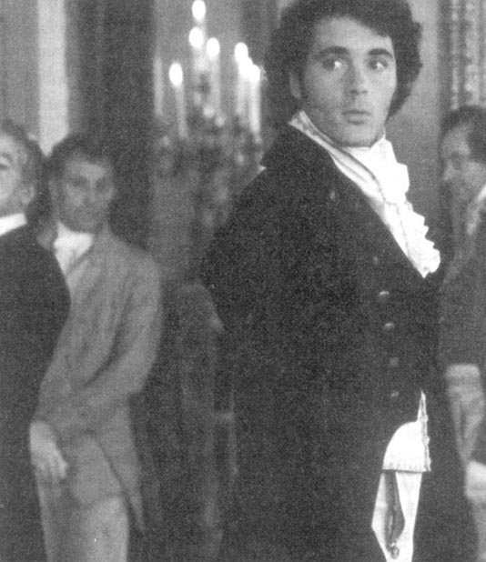
“我的天哪！”玛丽安娜喊道，“他在这里！哦，为什么他不看我？为什么我不能跟他说话？”
“我请求你保持镇静，”埃莉诺说，“努力隐藏你的感情。”
但是这对玛丽安娜来说是不可能的。她坐在那里，满心的焦虑和不耐烦清楚地写在脸上。
最后威洛比终于转过身来看到了她们俩。玛丽安娜跳起来，热情地向他伸出手。他走近了一些，但却没有理会玛丽安娜，而是向埃莉诺匆匆询问达什伍德夫人的近况。
玛丽安娜涨红了脸，大声说：“你这是什么意思，威洛比？你不愿意跟我握手吗？”
玛丽安娜的话使他无法推托，但是他只握了一下。“上周我荣幸地上门拜访，但不幸的是你恰好不在家。”
“但是难道你没有收到我的信吗？”玛丽安娜焦急地说，“一定是发生了可怕的错误。告诉我，威洛比，求你告诉我到底发生了什么事？”
他看上去很惭愧，但是当他与刚才交谈的那位年轻女子目光相交时，他的表情似乎强硬了起来。“我收到了，”他说，“我很高兴得知你来到城里的消息，你能写信告诉我真是太好了。”说完，他就转身跟他的朋友交谈去了。
玛丽安娜看上去脸色白得吓人，她再也站立不住，埃莉诺把她扶到一张椅子上坐下。她们很快就看到威洛比离开了舞会，由于玛丽安娜明显感觉不适，埃莉诺请求米德尔顿夫人送她们回家。姐妹俩沉默着，因为玛丽安娜痛苦得说不出话来。埃莉诺现在意识到对于威洛比来说这段恋情已经结束了，她对他结束这段恋情的方式感到极为厌恶。
姐妹俩那一夜都没有睡好。天色还没放亮的时候埃莉诺被一阵激动的哭泣声吵醒了。她看到玛丽安娜衣服都没有穿好，正一边流泪一边很快地写信。
“玛丽安娜，我可以问……”埃莉诺轻声问。
“不，埃莉诺，什么也别问，你很快就会知道一切的。”
玛丽安娜说这话的时候带着一种绝望的镇静，说完又哭了起来。看起来她是在给威洛比写最后一封信。
信写完后交给了一个仆人，玛丽安娜嘱咐他亲手交给威洛比，然后姐妹俩下楼吃早饭。不久之后来了一封写给玛丽安娜的信，玛丽安娜读了信之后脸色变得像死人一样白，并且立刻冲出了房间。詹宁斯夫人轻松地笑起来。
“那是威洛比写来的情书吗？好吧，好吧，我这辈子从来没见过一个年轻女子如此狂热地陷入爱情。我希望他不会让她再等很久！”
由于急于想知道威洛比在信中写了什么，埃莉诺急忙跑回她们的房间。玛丽安娜正躺在她的床上号啕大哭。埃莉诺握住她妹妹的手，充满感情地亲吻了她几次，她自己也哭了。尽管玛丽安娜哭得无法说话，也似乎感受到了她姐姐充满爱的同情，她一言不发地把威洛比的来信递给埃莉诺。
我亲爱的女士，
我刚才荣幸地收到了你的来信，我为此向你表示感谢。昨晚我恐怕有让你不满的举动，为此我请求你的原谅。我将永远铭记我从前拜访你家的愉快经历，但是希望我不曾给任何人任何理由认为我对你的感情比我所表达的更加强烈。我的感情早已经有所归属，而且数周之后我就将和她结为连理，我想你能明白我对你不可能有任何过分的意图。
我遵照你的意思把你写给我的信件和一束你慷慨赠予的头发归还给你。
你恭顺的仆人，
约翰·威洛比
埃莉诺读完信后吓呆了。她以为信中会是忏悔、解释和理由，却没想到完全没有一丝值得尊敬而具有绅士风度的感觉。威洛比怎么能够写出一封如此残酷、如此伤人的信呢？让她感到欣慰的是玛丽安娜已经不会再与这样一个男人有什么关系了。她转身面对玛丽安娜，她妹妹这时已经能够说话了。
“可怜的埃莉诺！我害得你这么难过！”
“我只是希望我能做点儿什么让你觉得好受一些。”
“哦，埃莉诺，我是如此痛苦！”玛丽安娜说完又痛哭失声，说不出话了。
“让自己冷静下来，亲爱的玛丽安娜。想一想要是他的真面目在你们婚约的最后一刻才被发现的话，你遭受的痛苦会比现在更大。”
“婚约！”玛丽安娜喊道，“并没有什么婚约。他没有作出或是违背任何承诺。”
“但是他不是曾经告诉你说他爱你吗？”
“是的——不，他从来没有确定地说过。他从来没有用言语表达出来，但是我每天都从他眼睛里读到爱情。我感觉我们已经订婚了，就好像律师已经为我们写好了婚约。”
“不幸的是，他的感觉跟你不一样。”
“他的感觉和我一样，埃莉诺，很多个星期里他的感觉的确和我一样！那束头发，就是他说我主动送给他的那束——是他跪下来一遍遍地请求我给他的！可是现在——哦！哦！”
埃莉诺很担心妹妹的身体，因为她哭得越来越厉害了，但是她成功地劝说她吃了药来抑制肉体和精神上的双重痛苦。好心的詹宁斯夫人来看望玛丽安娜的时候表现出了真诚的关心。她听说玛丽安娜的情敌是一位格蕾小姐，她享受着五万英镑的年金。而威洛比由于在马车和马匹上严重超支，正急需钱用。詹宁斯夫人甚至找不出足够严厉的话来谴责他。她为自己经常拿玛丽安娜的感情开玩笑真诚地向她道歉，不过，她生性乐观，希望这样一来更好，因为现在玛丽安娜终于可以与布兰登上校结婚了。
7．The truth about Willoughby
7
The truth about Willoughby
The next day Marianne felt just as miserable, and could talk about nothing but Willoughby. With affectionate words Elinor encouraged her to talk about her feelings. Marianne was determined to avoid Mrs Jennings' presence, however.
'She cannot feel, Elinor!' she cried. 'Her kindness is not sympathy. She is only interested in me because she will enjoy telling her friends all the details of my sad situation!'
It is unfortunate that many people of excellent intelligence and character, like Marianne, are neither reasonable nor fair. Then something happened after breakfast which sank Mrs Jennings still lower in Marianne's opinion. The sisters were in their room when Mrs Jennings hurried in, holding out a letter in her hand, and with a cheerful smile on her face.
'Now, my dear,' she cried, 'I bring you something that I am sure will do you good.'
At once Marianne imagined a letter from Willoughby, full of affection and believable explanations, instantly followed by Willoughby himself, who would throw himself passionately at her feet. The work of one moment was destroyed by the next. In front of her eyes was her mother's writing, never unwelcome till then, and in the bitterness of her disappointment she felt she had reached the depths of her suffering. She could not speak, and the tears poured down her face.
Mrs Jennings was not at all aware of what she had done, and with many kind words of sympathy, soon left the Miss Dashwoods to read the letter together. It brought them no comfort, as it expressed Mrs Dashwood's complete confidence in, and affection for, Willoughby. Marianne's tears flowed even faster when she thought how shocked and saddened her dear mother would be to hear the news. She was now very eager to return home to Devonshire. Elinor sat down, with a heavy heart, to write to her mother again, telling her how Willoughby had behaved, and asking what they should do.
Just then, there was a knock on the front door, and Marianne, looking out of the window, saw Colonel Brandon outside. She hurried away to her room, and Elinor remained to greet him. He seemed disturbed and unhappy, and asked anxiously after Marianne.
'I have come, hoping to find you alone,' he said, in some confusion, 'because... My only wish is to give comfort, no, not comfort—to support your sister in this difficult time. My feeling for her, for yourself, for your mother... Will you allow me to prove it by telling you some details of—of... If I did not consider it useful, I would not bother you...' He stopped.
'I understand you,' said Elinor. 'You have something to say about Mr Willoughby, that will open his character to us. Telling me would be the greatest proof of friendly feeling for Marianne. I beg you, let me hear it immediately.'
'I must tell you a little about myself first. Perhaps you remember at Barton Park, when I mentioned a young lady I once knew? She was very like your sister, with an eager mind, a warm heart and great sensibility. She was a distant cousin of mine, and from our earliest days we played together and loved each other. But at seventeen she was married, against her wishes, to my brother. Just before the wedding, she and I planned to run away and get married secretly, but my father discovered the plan, and sent me away to join the army. It was an extremely unhappy marriage. My brother did not love or respect her, and spent his time on pleasures most unsuitable for a husband. She was very young, had no friends or family to advise her (I had been sent abroad by then), and my brother's bad example was always with her. I cannot describe the shock I received when I heard, two years later, of her divorce...'
He could not speak for a moment, and when he saw Elinor's concern and sympathy, took her hand and kissed it gratefully.
'When I returned to England three years later, I began to search for her, but she was no longer with her first seducer, the man for whom she had left her marriage. There was every reason to fear she had left him only to sink deeper into a life of dishonour. After six months, however, I did find her, in a debtors' prison. She was so changed, so thin, so ill! She had only a short while to live, so I made sure she was properly looked after, and I was with her in her last moments.'
He stopped for a moment to control himself, then went on. 'With a firmer mind, and a happier marriage, she could have been everything you will live to see in your sister. She left to my care her little girl, Eliza, the child of her first seducer. I sent Eliza to school, and then put her in the care of a very respectable woman living in the country. She is now seventeen. Imagine my horror, when she suddenly disappeared a year ago! For eight long months I searched, and found nothing. You can imagine what I thought, and feared, and how I suffered.'
'Good heavens!' cried Elinor. 'Could Willoughby—'
'The first news of Eliza came in the letter I received at Barton Park, on the morning of our planned excursion to Whitwell. That was why I left so suddenly. Willoughby did not know that I was called away to help someone he had made poor and miserable. But if he had known, would he have cared? No! He had done what no man of feeling would do. He had left the girl whose innocence he had seduced—left her with no home, no friends, and no money.'
'This is beyond everything!' cried Elinor.
'Now you understand what he is like. Imagine what I have felt all these weeks, knowing his character, and seeing your sister as fond of him as ever. Who can tell what his intentions were towards your sister? One day, she will doubtless feel grateful, when she compares her situation with that of my poor Eliza. At least there is no dishonour in your sister's suffering, and every friend of hers must feel concern for her unhappiness, and respect for her bravery in bearing it.'
Elinor thanked the colonel warmly for his kind words. 'Have you,' she continued, 'seen Willoughby since you left Barton?'
'Yes. Once,' he replied seriously. 'As Eliza had confessed to me the name of her seducer, I accused him of dishonourable behaviour and challenged him to a duel. We met by appointment, but both of us returned unwounded. And my poor Eliza has had the child she was expecting, and now remains in the country.'
After this, the colonel left, and Elinor very soon passed on the details of the conversation to her sister. The effect was not quite what she had hoped. Marianne listened attentively, and appeared to accept Willoughby's guilt. She no longer avoided the colonel when he came to the house, and talked to him in a gentle, pitying voice. But she seemed even more depressed, now that Willoughby's good character had been lost, as well as his heart.
Mrs Dashwood's letter of reply arrived next day. Her disappointment was almost more painful than Marianne's, and her anger even greater than Elinor's. But she advised them not to shorten their stay with Mrs Jennings, which had been expected to last five or six weeks, as a speedy return to Barton would only remind Marianne of former happy times with Willoughby. She also hoped that Elinor would see more of the Ferrars family, who would soon be arriving in London.
Sir John, Mrs Jennings, and Mrs Palmer all spoke forcefully about Willoughby, and determined to have nothing to do with him ever again. They talked so much about him, however, that it was a happy relief to Elinor when Lady Middleton showed only calm and polite unconcern. Whenever the subject was discussed she would say gently, 'It is very shocking indeed!', but privately she was already planning to visit Mrs Willoughby, who would be a woman of elegance and fortune.
Mrs Jennings was disappointed to see that the colonel did not look more cheerful now that he no longer had a rival for Marianne. There seemed to be a better understanding between the elder Miss Dashwood and the colonel, and Mrs Jennings, who had quite forgotten Edward Ferrars, began to think that Elinor would become Mrs Brandon.
A fortnight after Willoughby's letter had arrived, Elinor had the painful duty of informing Marianne that he was married. Marianne received the news bravely at first and said nothing; but the tears came later, as wildly and as passionately as before.
About this time, Elinor was sorry to see the Miss Steeles arrive in London, as their presence always gave her pain. Lucy pretended to feel great delight in finding them in town, and Elinor had to use all her self-control to answer politely.
A pleasanter meeting took place a little later, when their brother, John Dashwood, came to visit them at Mrs Jennings'. He enquired after their health and their mother's, and was introduced to Colonel Brandon, who happened to be there. As it was a fine day, he asked Elinor to take a short walk with him. As soon as they were out of the house, his questions began.
'Who is Colonel Brandon? Is he a man of fortune?'
'Yes, he has a large house with some land, and, I believe, about two thousand pounds a year.'
'I think, Elinor, I will soon be congratulating you on making a very respectable marriage. He seems most gentlemanly, and he likes you, I am sure of it.'
'He has not the smallest wish to marry me.'
'You are wrong, Elinor. A very little effort on your side will catch him. Some of those little encouragements, which ladies can so easily give, will fix him, in spite of the smallness of your fortune. You should try for him. How amusing if Fanny had a brother, and I had a sister, marrying at the same time!'
'Is Mr Edward Ferrars,' Elinor said calmly, 'going to marry?'
'It is not actually arranged yet, but the lady is Miss Morton, Lord Morton's only daughter, with thirty thousand pounds of her own. Edward's mother will most generously allow him a thousand a year, if he marries Miss Morton. I wish we could live so comfortably. I am afraid our income is not large enough for us to live as we would like.' And he shook his head sadly at the thought of his own difficulties.
The following week Mr and Mrs John Dashwood gave a grand dinner party. The Middletons, Mrs Jennings, Colonel Brandon, the Miss Dashwoods and the Miss Steeles were all invited. Elinor and Lucy both knew that Mrs Ferrars would be present as well.
'Pity me, dear Miss Dashwood!' whispered Lucy, as they walked up the stairs. 'In a moment I shall see the person on whom all my happiness depends—my future mother-in-law!'
Mrs Ferrars was a little, thin woman, with a disagreeable expression. She was not a woman of many words, but she made it very clear that she strongly disliked Elinor, and as strongly approved of Lucy.
'If she knew Lucy's secret,' thought Elinor, amused, 'how she would hate her!' She felt almost relieved that she could not now hope to become Edward's wife, with such a mother-in-law.
The next morning, Elinor received a visit from Lucy, who had been so delighted by Mrs Ferrars' welcoming behaviour to her that she felt she simply had to tell her dear friend about it.
'She was so kind to me! Did you not notice it? And your sister-in-law too! What elegant, delightful women they are!'
Before Elinor could bring herself to reply, the door opened and Edward walked in. It was a very difficult moment for the three of them, but Elinor took control of the situation. Anxious to show that nothing was wrong, she welcomed him in her usual way. Lucy kept silent, watching Elinor narrowly out of the corner of her eye, while Edward did not know what to say, in his confusion, and could not keep the conversation going. Soon Elinor decided bravely to leave the engaged couple alone for a while, and went to fetch Marianne.
Rushing delightedly into the room, Marianne cried, 'Dear Edward! This is a moment of great happiness!' and looked lovingly at him and her sister. There was a short silence.
'My dear Edward!' Marianne continued. 'Why did you not come last night, to your sister's dinner party? We were all there.'
'I had—an appointment—somewhere else.'
'An appointment! But was that so important, when such friends wanted to see you?'
'Perhaps, Miss Marianne,' said Lucy smoothly, 'you think young men never keep their appointments or their promises.'
Elinor was very angry, but Marianne just answered, 'No, I trust Edward. He is the most thoughtful, unselfish person I have ever met. He would never knowingly hurt anyone, I know.'
This praise was so unacceptable to Edward that he very soon got up to leave, and Elinor had every reason to expect that this painful meeting would not be repeated.
* * *
John and Fanny Dashwood continued to see Elinor and Marianne at London parties and dances, and John began to wonder about inviting his sisters to stay for a few days.
Fanny, however, was astonished at this suggestion. 'My love, I would ask them with all my heart if it was possible. But I had just decided to ask the Miss Steeles to stay with us. We can ask your sisters some other year, you know.'
Mr Dashwood agreed at once, and Fanny, delighting in her escape, and proud of her quick thinking, wrote to invite Lucy and her sister. This made Lucy really happy. Such an opportunity of being near Edward and his family was the most useful thing in the world for her. And when the invitation was shown to Elinor, she began for the first time to share Lucy's expectations, and prepared herself to hear officially of the engagement.
divorce n. the legal ending of a marriage 离婚
seducer n. somebody who entice other person into sexual activity 诱惑者
duel n. a fight with weapons between two people, used in the past to settle a quarrel （旧时两男子使用武器以解决争执的）决斗
be expecting if a woman is expecting, she is going to have a baby 怀孕
narrowly adv. in a thorough way, looking in detail 仔细地
officially adv. publicly and formally 正式地
关于威洛比的真相
7．关于威洛比的真相
第二天玛丽安娜的痛苦丝毫没有减轻，除了威洛比她无法谈论任何事情。埃莉诺温柔地鼓励她说出自己的感受。但是玛丽安娜铁了心要避开詹宁斯夫人说。
“她无法体会，埃莉诺！”她说，“她的热心不是同情。她对我感兴趣，只是因为这样可以把我的悲惨处境详细地说给朋友们听，那会让她很快活！”
不幸的是很多像玛丽安娜这样聪明又好心的人，往往既不理智也不公正。早餐后发生的一件事情使玛丽安娜对詹宁斯夫人的印象更差了。两姐妹在她们房间里的时候，詹宁斯夫人突然冲了进来，满脸笑容地拿出一封信。
“现在，亲爱的，”她大声说，“我给你带来一样东西，肯定会让你好受些。”
玛丽安娜立刻把它想象成一封威洛比的来信，信中饱含感情和令人信服的解释。威洛比本人将随后到来，并将充满感情地拜倒在她脚下。但这幻想立刻就被打破了，出现在玛丽安娜眼前的是她母亲的笔迹，尽管此前母亲的来信从来都不是不受欢迎的。极端的失望让玛丽安娜陷入了痛苦的深渊。她无法说话，泪水沿着脸颊流淌下来。
詹宁斯夫人根本没有意识到她做了什么，她说了许多好心的表示同情的话后就离开了，留下达什伍德姐妹一起看那封信。信中的内容并没有给她们带来什么安慰，因为信中写的全是达什伍德夫人对威洛比的绝对信任和好感。想到她亲爱的母亲听到真相后将会多么震惊和难过，玛丽安娜的眼泪流得更快了。她现在急于返回德文郡的家中。埃莉诺心情沉重地坐下来再次给她母亲写信，告诉她威洛比的所作所为，并询问她们该怎么办。
就在此时，前门传来了敲门声。玛丽安娜从窗户看到布兰登上校站在外面。她急忙转身回到自己的房间去，而埃莉诺则留下来迎接他。他看上去心事重重，情绪低落，并且焦急地询问玛丽安娜的情况。
“我来是希望能单独见你，”他有点困惑地说，“因为……我只是想安慰，不，不是安慰——是在这艰难的时刻支持你的妹妹。我对她的感情，对你的感情，对你母亲的感情……你会允许我给你讲一些细节来证明这一切吗？这些细节是关于……如果不是我认为这些细节很有用，我就不会来打扰你了……”说到这里他停住了。
“我明白你的意思，”埃莉诺说，“你想说一些关于威洛比先生的事情，让我们看清他的本质。你把这些细节告诉我将是你对玛丽安娜感情的最好证明。我请求你马上告诉我。”
“我必须首先告诉你一些关于我自己的情况。也许你记得在巴顿庄园我曾经提到过一位我曾经认识的年轻小姐吧？她和你妹妹很像，一样充满激情、热心、感性。她是我的一位远房表妹，我们从小青梅竹马。但是她17岁的时候违心嫁给了我的哥哥。婚礼举行前夕，她和我计划私奔，然后再秘密结婚。但是我们的计划被我父亲发现了，于是他把我送去参军。那是一段不幸的婚姻。我哥哥既不爱她也不尊敬她，把时间都花在对一个做丈夫的男人来说最不适合的放纵享乐上。她还很年轻，也没有朋友或家人给她出主意（我那时被派到国外去了），而我哥哥这个坏榜样却一直在她眼前。我无法描述两年后听说她离婚时的震惊……”
一时间他说不出话来，看到埃莉诺的关怀和同情，他握住她的手感激地吻了吻。
“三年后我回到英格兰，开始到处寻找她的下落，但她已经离开了第一个引诱她的男人，也就是那个她为之放弃婚姻的人。我担心她离开他之后将陷入更堕落的生活。然而六个月后，我终于找到了她，却是在关押负债者的监狱里。她完全变了，变得如此消瘦，如此病弱！她已经奄奄一息了，我尽了一切努力来保证她得到良好的照料，并陪她走完了最后的日子。”
他停了一会儿来控制自己的情绪，然后接着往下讲：“要是她的意志更加坚强一些，要是她的婚姻更加幸福一些，她本可以拥有你将在你妹妹身上看到的一切。她把她跟第一个引诱她的男人所生的小女儿伊丽莎托付给我。我送伊丽莎去上学，然后把她寄养在乡下一位受人尊敬的女士那里。她现在17岁了。想象一下一年前她突然失踪时我的恐惧！在漫长的八个月时间里我到处寻找她的下落但却一无所获。你能够想象我想到了什么，害怕什么，受了多大的折磨。”
“我的天哪！”埃莉诺喊道，“难道是威洛比——”
“关于伊丽莎的最初消息是我在巴顿庄园收到的一封信，就是在我们打算远足去惠特韦尔的早晨收到的那封信。这也是我突然离开的原因。威洛比不知道我是被叫去帮助一个受到他伤害和折磨的人。但是即便他知道了，他会在乎吗？不会！他做了任何一个有良知的人都不会做的事情。他引诱一个女孩献出童贞后又抛弃了她——她无家可归，无友可依，身无分文。”
“这太过分了！”埃莉诺喊道。
“现在你知道他是哪种人了吧。想象一下这几个星期来我的感受，我知道他的人品，却看到你妹妹还是像往常那样喜欢他。谁知道他对你妹妹有什么企图？总有一天，当她将自己的处境跟我可怜的伊丽莎相比时，她肯定会心怀感激。至少在你妹妹所受的煎熬中没有耻辱，而她的每一位朋友肯定都关注她的痛苦，并且为她承受痛苦的勇气而尊敬她。”
埃莉诺为上校这番善意的话热忱地向他道谢。“你有没有，”她继续说，“在离开巴顿庄园后再见过威洛比？”
“是的，我见过他一次，”他严肃地回答，“伊丽莎向我坦白了引诱她的那个男人的姓名，我斥责了他可耻的行为并向他提出决斗的挑战。我们约定了见面并进行了决斗，但是我们两人都没有受伤。而我可怜的伊丽莎已经生下了他的孩子，她现在住在乡下。”
说完这些，上校就离开了，而埃莉诺很快就把谈话的所有细节告诉了妹妹。但这并没有产生她所希望的作用。玛丽安娜专注地听着，并且似乎接受了威洛比犯下的罪行。上校来拜访她们的时候，她不再故意避着他，而是用一种温柔而同情的语气同他交谈。但是她的情绪似乎变得更加低落了，因为她不仅失去了威洛比的心，现在还否定了他高尚的品格。
次日，达什伍德夫人的回信到了。她甚至比玛丽安娜更失望，比埃莉诺更愤怒。但是她建议她们不要缩短行程——她们原计划在詹宁斯夫人那里住五到六周，因为匆匆返回巴顿小屋只会使玛丽安娜重新想起她原先与威洛比在一起的快乐时光。而且费拉尔斯一家很快就会到伦敦，她希望埃莉诺能跟他们多见见面。
约翰爵士、詹宁斯夫人和帕尔默夫人都严厉地指责威洛比，并决定不再与他有任何瓜葛。他们没完没了地谈论他，以至于当米德尔顿夫人仅仅表现出冷淡而礼貌的不屑时埃莉诺反而感到轻松。每当大家谈论这个话题的时候，她就会轻声说：“这的确令人震惊！”但是私下里她已经决定去拜访威洛比夫人，因为后者肯定是一个高雅而富有的女人。
詹宁斯夫人失望地发现虽然现在布兰登上校追求玛丽安娜已经没有竞争对手了，他看上去并不比原先高兴。达什伍德家的大小姐似乎与上校更谈得来，于是已经把爱德华·费拉尔斯全然忘在脑后的詹宁斯夫人，开始认为埃莉诺将成为布兰登夫人。
威洛比来信后两周，埃莉诺不得不履行她痛苦的使命，告知玛丽安娜威洛比结婚的消息。起先玛丽安娜勇敢地接受了这个事实，什么都没有说；但她很快就哭了起来，而且跟以前一样厉害。
就在这个时候，埃莉诺遗憾地发现斯蒂尔姐妹也来到了伦敦，而她们的出现总是让她难受。露西假装很高兴她们也在伦敦，而埃莉诺则不得不用她所有的自控力来礼貌地应付她。
不久之后，她们的哥哥约翰·达什伍德来詹宁斯夫人处看望她们，大家聚在一起都十分高兴。他询问了她们和她们母亲的健康状况，并被介绍给碰巧在场的布兰登上校。那天天气不错，约翰邀请埃莉诺跟他一起出去散步。他俩一走出屋子，他就开始不停地提问。
“那个布兰登上校是什么人？他很有钱吗？”
“是的，他有一座很大的房子，还拥有一些土地，而且我相信他每年有大约两千镑的收入。”
“我想，埃莉诺，我很快就要祝贺你获得一份体面的婚姻了。他看上去很有绅士风度，而且他很喜欢你，这点我肯定。”
“他根本没有任何娶我的念头。”
“你错了，埃莉诺。你只要稍稍努力一下就能抓住他的心。尽管你拥有的财产很少，但只要你给他一些小姐们很容易就能给予的小小的鼓励，就能套牢他。你应该努力得到他。范妮的哥哥和我的妹妹同时结婚将是一件多么有趣的事情啊！”
“你是说爱德华·费拉尔斯先生，”埃莉诺镇静地说，“要结婚了？”
“实际上还没有安排妥当，女方是默顿小姐，默顿男爵的独生女，她拥有三万英镑的财产。如果爱德华娶默顿小姐为妻，他母亲会慷慨地给他一千英磅的年金。我倒希望我们能过如此舒适的生活。恐怕我们的收入不够让我们过想过的生活。”他想到了自己的困境，不禁难过地摇了摇头。
接下来的那周，约翰·达什伍德夫妇做东举行了一场盛大的晚餐聚会。米德尔顿夫妇、詹宁斯夫人、布兰登上校、达什伍德姐妹和斯蒂尔姐妹都在受邀之列。埃莉诺和露西都知道费拉尔斯太太也会出席。
“可怜我吧，亲爱的达什伍德小姐！”她们一起上楼的时候露西低声说，“我马上就要见到那个关系到我全部幸福的人了——我未来的婆婆。”
费拉尔斯夫人是一位瘦小的女人，脸上表情乖戾。她不是个健谈的人，但她清楚无误地表示她很不喜欢埃莉诺，而对露西却是赞赏有加。
“如果她知道了露西的秘密，”埃莉诺忍俊不止地想，觉得很有趣，“她不知该有多恨她呢！”当她想到有这样一位婆婆在，不能嫁给爱德华这件事反倒让她松了一口气。
第二天早晨，埃莉诺接待了露西的来访。受到费拉尔斯夫人热情招待的露西极度兴奋，她感到必须把这一切告诉她的朋友。
“她对我的态度真是好极了！你注意到了吗？还有你的嫂子！她们都是多么高雅和令人愉快的女人啊！”
埃莉诺还没有来得及答话，房门就打开了，进来的是爱德华。这一刻对三个人来说都十分尴尬，但是埃莉诺控制住了场面。她急于表示一切正常，于是以平常的方式欢迎他的到来。露西则保持沉默，用余光紧盯着埃莉诺，而爱德华则迷茫得不知道说什么好，也无法让谈话继续下去。很快，埃莉诺勇敢地决定还是让这对订了婚的恋人单独待一会儿，而她自己则去叫玛丽安娜。
这时，玛丽安娜快活地冲进了房间，大声喊道：“亲爱的爱德华！这真是让人高兴的一刻！”说着还充满爱意地看着他和她姐姐。房间里出现了暂时的寂静。
“我亲爱的爱德华！”玛丽安娜继续说，“你昨晚为什么不来参加你妹妹举办的晚餐聚会呢？我们都去了。”
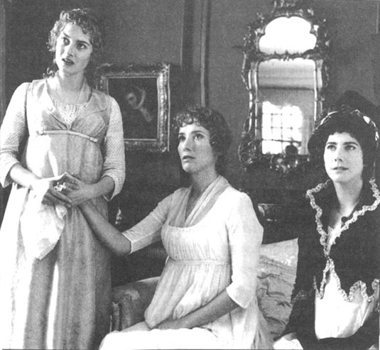
“我——在其他地方——有一个约会。”
“一个约会！但是那个约会有那么重要吗，比那么多朋友都想见你还重要吗？”
“也许，玛丽安娜小姐，”露西脱口而出，“在你看来年轻男子从来不遵守他们的约定或诺言。”
埃莉诺非常生气，但是玛丽安娜仅仅回答道：“不，我信任爱德华。他是我所见过的最体贴，最无私的人。他永远不会故意伤害任何人，这我知道。”
这番褒奖对爱德华来说如此刺耳，他很快就抽身离开，埃莉诺有足够的理由相信这样令人痛苦的见面不会再有第二次了。
* * *
约翰·达什伍德和范妮·达什伍德在伦敦的聚会和舞会上不断地与埃莉诺和玛丽安娜见面。约翰开始考虑是否邀请妹妹们去他那里小住几日。
然而范妮听到这个想法后却很吃惊：“亲爱的，如果可能的话，我将最真诚地邀请她们来住。但是我刚刚决定邀请斯蒂尔姐妹来跟我们一起住。我们不妨改年再邀请你的妹妹们。”
达什伍德先生立即就同意了，范妮为自己编出借口蒙混过关感到高兴，更为自己的机敏反应而得意。于是她写信邀请露西姐妹。这让露西喜出望外。这样一个接近爱德华和他家人的机会对她来说称得上是世上最有用的东西了。而当她把这封邀请函给埃莉诺看的时候，后者首次有了和露西同样的期待，并已经准备好听到两人正式订婚的消息了。
8．Edward's engagement
8
Edward's engagement
Mrs Jennings was very busy at this time, as her daughter Charlotte had just had a baby and was clearly in need of a fond mother's advice. She visited Charlotte at least twice a day, and it was at the Palmers' house that she heard a most interesting piece of news. She hurried excitedly back to tell Elinor.
'My dear Miss Dashwood, have you heard? Your sister-in-law is ill! Charlotte's doctor told me! And do you know why? It appears that Edward Ferrars, the young man I used to joke with you about, has been engaged for over a year to Lucy Steele! And no one knew a word of the matter except her sister Anne! Could you have believed such a thing possible? What happened was this. The Miss Steeles are staying with your brother and his wife, as you know. Anne, who is a kind creature but of no great intelligence, thought that there would be no difficulty, as Fanny Dashwood seemed to like Lucy so much, so she told her all about the engagement. Well, your sister-in-law fell on to the floor, and started sobbing and screaming so violently that your brother had to send for the doctor. Lucy and Anne were told to pack their bags and leave at once. Of course, the Ferrars family wanted Edward to marry that rich Miss Morton. But I have no pity for them. I cannot bear people who think money or greatness is important. There is no reason why Edward should not marry Lucy. She knows better than anyone how to make the most of everything, and if Edward's mother allowed him five hundred pounds a year, they could live comfortably.'
Mrs Jennings, to Elinor's relief, no longer suspected her of having any interest in Edward, but she could talk of nothing else. Elinor, knowing that Marianne would be fierce in her anger against Edward, was now anxious to tell her sister the truth and to prepare her to hear the subject discussed.
Marianne listened to Elinor's story with horror, and cried without stopping. For some time, Edward seemed a second Willoughby to her. She could not understand his behaviour, or accept that he could feel affection for such a person as Lucy.
'How long have you known this, Elinor?' she asked.
'Four months. Lucy told me of her engagement at Barton, and I promised to keep it secret.'
'What! All the time you were looking after me in my misery, this has been on your heart? How could you bear it?'
'By feeling that I was doing my duty. I had to keep Lucy's secret, and I did not want to worry my family and friends.'
'Four months! And yet you loved him!'
'Yes. But I loved my family too, and I was glad to spare them the sorrow of knowing how I felt. Now I no longer feel unhappy. I do not consider Edward has behaved badly in any way, and I wish him every happiness. He will always do his duty, and Lucy does not lack sense. They will marry, and time will teach him to forget that he ever thought another woman better than her.'
'If such is your way of thinking, your self-control is perhaps a little less to be wondered at. I understand it better.'
'I know you do not suppose I have ever felt much, but, Marianne, for four months I have had all this on my mind, and been unable to speak of it to a single creature. I was told about it by the person whose early engagement destroyed my hopes of happiness. She saw me as a rival, and was delighted to see me defeated. I have had to listen to her talking about Edward again and again; I have had to pretend to show no interest in him; I have had to bear the unkindness of his sister and the rudeness of his mother—without enjoying any of the advantages of an attachment to him. I know now that I shall be divided from Edward for ever. If you can ever think me capable of feeling, Marianne, surely you may suppose that I have suffered now.'
These words went straight to Marianne's heart. 'Oh, Elinor!' she cried. 'You have made me hate myself for ever. How unkind I have been to you, you who have been my only comfort!' And the two sisters fell sobbing into each other's arms.
Marianne was so sorry she had misjudged her sister that she promised to do anything Elinor wanted—to discuss the engagement in public without bitterness, to meet Lucy without showing any dislike, and even to talk to Edward himself, if chance brought them together, with her usual friendliness.
The next morning brought a test of her self-control, when John Dashwood came to visit Mrs Jennings and his sisters.
'You have heard, I suppose,' said he, with a most serious expression, 'of our very shocking discovery yesterday.'
Silently, they all showed that they had; it seemed too awful a moment to speak.
'Your sister-in-law,' he continued, 'has suffered terribly. So, too, has Mrs Ferrars. But I would not alarm you too greatly. The doctor says Fanny is strong, and will get better, in time. She says she will never think well of anybody again. And I cannot wonder at it, as she was so deceived! How ungrateful those young women were, after she had shown them so much kindness! "I wish with all my heart," says poor Fanny in her affectionate way, "that we had invited your sisters instead of them."'
Here he stopped to be thanked; then continued.
'What poor Mrs Ferrars suffered cannot be described. She could not believe Edward was secretly engaged, when all the time she had been planning a most excellent marriage for him. She sent for him, and he came to see her. I am sorry to tell you what happened next. All our attempts to persuade Edward to end the attachment were useless. Even when his mother explained that if he married Miss Morton, she would generously allow him a thousand pounds a year, and even when she offered to make it twelve hundred pounds, he still insisted that he would not break the engagement. Mrs Ferrars then told him he would receive no money at all from her, and if he entered any profession, she would do her best to prevent him succeeding in it.'
'Good heavens!' cried Marianne. 'Can this be possible!'
'Your surprise is very natural, Marianne,' said her brother. 'It is astonishing that Edward could not be persuaded.'
Marianne, about to disagree fiercely, remembered her promises to Elinor, and said nothing.
'Well,' cried Mrs Jennings, 'I think he has behaved like an honest man. He must keep his promise to marry Lucy Steele. If he broke it, the world would think him a worthless scoundrel.'
'I respect your views, madam,' said John Dashwood politely, 'but I am afraid that a good, thoughtful mother like Mrs Ferrars, with such a very large fortune, cannot approve of her son's secret engagement to this most unsuitable young woman. I am sorry to say that it has all ended in a most unhappy separation. Mrs Ferrars told Edward to leave her house, and he obeyed at once. She does not wish to see him ever again, and has now decided, very understandably, that Robert, not Edward, should inherit her fortune when she dies. Poor Edward! His younger brother will be wealthy while he remains poor. I feel for him sincerely.'
John Dashwood left soon afterwards, and the three ladies immediately joined together in their firm disapproval of Mrs Ferrars' behaviour and their warm praise of Edward's.
The next morning, Elinor received a letter from Lucy.
I hope, my dear Miss Dashwood, you will not mind my writing to you. I know that, as a true friend, you will be pleased to hear my news. Edward and I, although we have suffered terribly in all our recent troubles, are quite well now, thank God, and happy in each other's love. We are very grateful to our friends, yourself not the least among them, for helping us through our many difficulties. I shall always remember your great kindness, and so will Edward. I am sure you will be glad to hear that I spent two happy hours with him yesterday. I offered him his freedom, and was ready to consider our engagement at an end, if that was what he wanted. But he would not hear of it, and said he did not care about his mother's anger, as long as he had my affections. Life will not be easy for us, it is true, but we must wait, and hope for the best. He will enter the Church soon, and if you ever have the opportunity to recommend him to anybody who can give him a living, I am sure you will not forget us. And dear Mrs Jennings too—I hope she will say a good word for us to any friend who may be able to help us. I beg you to remember me to her, most gratefully and respectfully, and to Sir John and Lady Middleton, and the dear children, and give my love to Miss Marianne.
Yours truly, Lucy Steele
Elinor felt sure that Lucy wanted the letter to be seen by Mrs Jennings, and showed it to her immediately.
Mrs Jennings was full of praise for Lucy's warm heart. 'How prettily she writes!' she said. 'She calls me dear Mrs Jennings, you see. I wish I could get him a living, with all my heart.'
The Miss Dashwoods had now been in London for more than two months, and Marianne was becoming more and more impatient to go home. She missed the air, the freedom, the quiet of the country. Elinor, although almost as anxious to leave as her sister, was aware of the difficulties of a long journey. This problem appeared to be solved when the Palmers invited Mrs Jennings and the Miss Dashwoods to their home in Somerset, only a day's journey away from Barton. They planned to travel there at the end of March. The invitation was gladly accepted; Elinor and Marianne would stay a week with the Palmers, and then continue their journey to Barton.
Soon after this arrangement had been made, Colonel Brandon called at Mrs Jennings' house and was told the news.
'My dear colonel, I do not know what you and I will do without the Miss Dashwoods,' said Mrs Jennings. 'How lonely and dull we shall be!'
She hoped these words, and the sad picture they painted, would persuade him to make the offer of marriage which might prevent any loneliness or dullness in the future. And with delight, she saw that her plan had succeeded. When Elinor moved to a quiet corner of the room, Colonel Brandon joined her there, and talked very seriously to her for several minutes. Although Mrs Jennings was too honourable to listen, she could not help seeing that Elinor was blushing and looking agitated. Some of the colonel's words reached Mrs Jennings' ears, and astonished her greatly. 'I do apologize for the smallness of the house.' What could he mean? She knew very well that there were fifteen bedrooms and five sitting-rooms in his house at Delaford. 'I am afraid it cannot happen soon.' What an unlover-like thing to say! There could be no reason at all to delay their marriage.
In fact, the colonel was talking on a quite different subject. He had heard of Edward's difficulties, and, knowing him to be a friend of Elinor's, wished to help the young man. A living at Delaford had just become vacant, and the colonel was asking Elinor to offer it to Edward.
'At least it would be a start for Mr Ferrars. The vicar's duties there are light, and there is a cottage that goes with the post, although I do apologize for the smallness of the house. The income is only two hundred pounds a year, so I am afraid his marriage cannot happen very soon.'
Elinor expressed her grateful thanks for the colonel's generous offer, and promised to tell Edward the good news.
When Colonel Brandon had left, Mrs Jennings spoke to Elinor with a knowing smile. 'Well, Miss Dashwood, I couldn't help overhearing the colonel's words, and I can tell you, I was never better pleased in my life!'
'Yes,' said Elinor, 'it is a matter of great happiness to me. But I was so surprised when he spoke to me about it!'
'My dear, I'm not in the least astonished by it. I wish you every happiness, and if I want to see a happy couple, I know where to look for them in future!'
'At Delaford, I suppose,' said Elinor with a smile.
'That's right, my dear, And I can tell you, you won't find the house small! Now, I must go out, but we'll continue our conversation later. I'm sure you want to tell your sister about it.'
'Certainly, madam, but I shall not mention it to anyone else at present.'
'Oh,' said Mrs Jennings, disappointed. 'Then you would prefer me not to tell Charlotte, or Sir John, or Lucy.'
'Yes, madam, if you don't mind. I must speak to Mr Ferrars first, to arrange matters with him.'
This was, at first, extremely puzzling for Mrs Jennings, but after a moment's thought she had a happy idea. Edward must be the vicar they had chosen to carry out the wedding ceremony! She hurried excitedly off on her morning visits, aware of the important secret that she was not allowed to tell. By chance, as she left the house, she met Edward at the door. He had called only to leave a note, but Mrs Jennings insisted on his going in to see Miss Dashwood, who had particular news to give him.
Elinor had begun to write a letter to Edward when she looked up to find him standing in front of her. Her astonishment and confusion were very great. Edward too was confused, and for a few moments neither knew what to say to the other. At last, however, the colonel's offer was made, and Edward, although astonished at this kindness from a stranger, was deeply grateful for the opportunity. He soon realized that he owed more than he could express to Elinor, and also began to suspect that the colonel might have a particular reason for wishing to help any friend of hers. There was sadness in his eyes as he rose to say goodbye.
'When I see him again,' said Elinor to herself, as the door shut behind him, 'I shall see him the husband of Lucy.'
When Mrs Jennings returned, she was eager to find out more. 'Well, my dear, and how soon will the young man be ready?'
'In two or three months, I imagine,' replied Elinor.
'Two or three months! My dear, how calmly you talk! Can the colonel wait so long? I know you wish to do a kindness to Mr Ferrars, but could you not find someone who is already a vicar?'
'My dear madam, what can you be thinking of? The colonel's only intention is to be of use to Mr Ferrars.'
'Good heavens, my dear! Surely you do not mean that the colonel only marries you in order to give ten pounds to Mr Ferrars as his vicar's fee for the ceremony!'
The confusion could not continue after this, and there was much amusement as Elinor explained. Mrs Jennings was just as delighted with the true situation, and looked forward to visiting Lucy and Edward in the vicar's house at Delaford in a few months' time. Elinor now knew that Edward's marriage to Lucy was certain; she herself had helped to smooth the path towards it.
fond adj. affectionate, tender 慈爱的
scoundrel n. a bad or dishonest man 恶棍，无赖
vicar n. a priest in the Church of England who is in charge of a church in a particular area 教区牧师
ceremony n. a formal or traditional set of actions used at an important social or religious event 典礼，仪式
爱德华订婚
8．爱德华订婚
这段时间詹宁斯夫人非常忙碌，因为她女儿夏洛特刚生完孩子，正急需一个慈爱母亲的建议。她每天至少要去看望夏洛特两次，也正是在帕尔默家里她听到了一则十分有趣的消息。于是她激动地急着赶回来告诉埃莉诺。
“我亲爱的达什伍德小姐，你听说了吗？你的嫂子病了！是夏洛特的医生告诉我的！你知道是为什么吗？好像是因为爱德华·费拉尔斯，就是那个以前我经常拿来和你开玩笑的那个年轻人，他已经跟露西·斯蒂尔订婚一年多了！而除了她姐姐安妮之外，没有人知道这事！你能相信这种事吗？事情是这样的。正如你知道的那样，斯蒂尔姐妹正与你哥嫂住在一起。安妮心地善良，但是人不太聪明，她觉得应该不会出什么岔子，因为范妮·达什伍德似乎很喜欢露西，于是她一五一十地把订婚的事情告诉了她。可是你嫂子听到后突然跌倒在地，又哭又叫，以至于你哥哥不得不去叫医生来。露西和安妮立即被要求收拾东西离开。当然，费拉尔斯的家人都希望爱德华娶富有的默顿小姐为妻。可我一点儿也不同情他们。我无法容忍过分看重金钱和地位的人。爱德华没有理由不娶露西为妻。她比其他人更懂得如何勤俭持家，如果爱德华的母亲每年给他五百英镑，他们就能生活得很舒适了。”
詹宁斯夫人不再怀疑她对爱德华有任何兴趣了，这让埃莉诺感到如释重负，但詹宁斯夫人不停地谈论这件事。埃莉诺知道玛丽安娜会对爱德华的行为感到极为气愤，于是想赶快告诉她妹妹真相，并让她有心理准备听到别人谈论这个话题。
玛丽安娜震惊地听埃莉诺讲述她的故事，边听边不停地哭泣着。有那么一阵子，爱德华在她看来似乎是又一个威洛比。她无法理解他的行为，也不能接受他会对露西这样的人产生感情。
“你知道这件事多久了，埃莉诺？”她问。
“有四个月了。露西是在巴顿的时候把她订婚的事告诉我的，而我答应替她保守秘密。”
“什么！你在我痛苦的时候一直照顾我，而这件事一直窝在你心里？你怎么能够承受得了啊？”
“只要想到我是在尽我的义务就能承受。我必须保守露西的秘密，而且我不想让家人和朋友们为我担心。”
“四个月！况且那时候你还爱着他！”
“是的。但是我也爱我的家人，能免去她们知道我的感受后经受的痛苦我很高兴。现在我不再感到难过了。我不认为爱德华做错了什么，我希望他幸福。他会尽他的责任，而露西也不笨。他们会步入婚姻，而时间会教他忘却他曾经认为另一个女人比她更好。”
“如果这就是你思考问题的方式，那么你的自控力也不是太让人无法理解。我现在能明白一点儿了。”
“我知道你以为我没有过什么强烈的感情，但是，玛丽安娜，四个月来我把这一切藏在心底，无法对任何一个人倾诉。告诉我这一切的人正好是那个以她早先的婚约毁掉我对幸福希望的人。她把我看作对手，并乐于看到我被击败。我不得不听她一遍又一遍地谈论爱德华；我不得不装作对他毫无兴趣；我不得不忍受他姐姐的刻薄和他母亲的无礼——却享受不到任何对他的感情带来的好处。现在我知道我要永远与爱德华分离了。如果你认为我也能够有感情的话，玛丽安娜，你肯定会相信我现在正感受着痛苦。”
这些话径直说到了玛丽安娜心里。“哦，埃莉诺！”她大声说，“你会让我永远恨自己。我对你一直都那么无情，而你却一直在充当我唯一的安慰！”说完两姐妹抱头痛哭。
玛丽安娜为自己对姐姐的误解而感到抱歉。作为补偿，她答应去做任何埃莉诺要她做的事情——装作若无其事地公开谈论订婚的事，与露西见面时不表现出任何厌恶，甚至在碰巧遇见爱德华的时候以她一贯的友好口吻同他聊天。
次日上午约翰·达什伍德来看望詹宁斯夫人和他妹妹们的时候，玛丽安娜的自控力受到了一次考验。
“我猜你们已经听说了，”他表情严肃地说，“我们昨天发现了一件令人十分震惊的事情。”
大家都以沉默来表示听说了；这似乎是个不适合开口说话的时刻。
“你们的嫂子，”他继续说，“受到了很大的折磨。费拉尔斯夫人也一样。但我不想让你们过分受惊。医生说范妮身体很好，她过一阵子就会好起来。她说她永远都不会再把别人往好处想了，这一点儿也不让我吃惊，因为她受到了如此重大的欺骗！那些年轻女子是多么不知好歹啊，她那么好心地对待她们！‘我全心全意地希望，’可怜的范妮充满感情地说，‘我们邀请的是你的妹妹们而不是她们。’”
说到这里他停了下来听两姐妹道谢的话，然后他继续往下说。
“可怜的费拉尔斯夫人所受的折磨无法用言语来形容。她无法相信在她一直张罗着为爱德华找一门好婚事的时候，他却已经私下里订婚了。她派人把他找来。我对接下来发生的事感到遗憾。我们所有试图劝说爱德华结束这段关系的努力都徒劳无功。他母亲向他解释说如果他娶默顿小姐为妻，她就会慷慨地每年给他一千英镑，甚至当她把这个数额提高到一千两百英镑的时候，他仍然坚持说他不会违背婚约。于是费拉尔斯夫人告诉他说，既然如此，她一分钱都不会给他，而且无论他从事任何职业，她都会竭尽全力阻止他获得成功。”
“我的天哪！”玛丽安娜喊道，“这怎么可能！”
“你的惊讶再正常不过了，玛丽安娜，”她兄长说，“爱德华仍没被说服的确令人吃惊。”
玛丽安娜正欲强烈地表示异议，但突然想起了她对埃莉诺的承诺，于是选择了保持沉默。
“你瞧，”詹宁斯夫人大声说，“我想他的行为像个诚实的人。他必须信守诺言娶露西·斯蒂尔为妻。如果他违背了自己的诺言，全世界都会认为他是个一文不值的无赖！”
“我尊重您的看法，夫人，”约翰·达什伍德礼貌地说，“但恐怕像费拉尔斯夫人这样一位善良而眼光长远、同时拥有巨额财富的母亲，是不可能同意儿子暗中与这样一个门不当户不对的年轻女子订婚的。我得遗憾地说这件事以极不愉快的家庭分裂结束了。费拉尔斯夫人命令爱德华搬出她的房子，而他立即就照办了。她再也不想见到他了，而且已经做出了一项可以理解的决定，那就是让罗伯特，而不是爱德华，在她去世后继承她的遗产。可怜的爱德华！他的弟弟将变得富有，他却只能守着贫穷。我真诚地同情他。”
约翰·达什伍德不久之后便离开了，而三位女士则立即联合起来，一致谴责费拉尔斯夫人的所作所为，而对爱德华的行为大加赞赏。
第二天早晨，埃莉诺收到了一封露西的来信。
我希望，亲爱的达什伍德小姐，你不介意我给你写信。作为一名真正的朋友，我知道你会乐于听到关于我的消息。尽管我们最近的烦恼让我们备受折磨，但感谢上帝，爱德华和我现在都很好，而且幸福地享受着彼此的爱情。我们非常感激我们的朋友们，尤其是你，帮助我们度过一个又一个难关。我将永远铭记你的善良，爱德华也是。我相信你会乐于知道我昨天与他度过了两个小时的快乐时光。我提出给他自由，愿意终止我们之间的婚约，如果这是他所希望的话。但是他不想听，并说他不在乎他母亲的怒气，只要他拥有我的感情。生活对我们来说不会是一件易事，这是实情，但是我们必须等待，并且期待最好的结果。他很快就将进入教会任职，如果你有机会能够把他推荐给任何能给他一份养家糊口的工作的人，我相信你是不会忘记我们的。还有亲爱的詹宁斯夫人也是——我希望她会在任何能够帮助我们的朋友面前替我们说点儿好话。我请求你代我以最感激和最尊敬的方式向她问好，也向约翰爵士和米德尔顿夫人，还有亲爱的孩子们问好，并对玛丽安娜说我爱她。
你真挚的，露西·斯蒂尔
埃莉诺确信露西希望詹宁斯夫人看到这封信，于是她立即将信送去让她过目。
詹宁斯夫人一个劲儿地夸奖露西心地善良。“她写得多么得体啊！”她说，“你瞧，她称呼我亲爱的詹宁斯夫人。我真希望能够为他找到一份工作。”
达什伍德姐妹俩已经在伦敦住了两个多月了，玛丽安娜开始越来越急着想回家。她想念乡间的空气、自由和宁静。尽管埃莉诺也和妹妹一样急着想离开，却清楚地意识到长途奔波的困难。这个问题后来似乎得到了解决，因为帕尔默夫妇邀请詹宁斯夫人和达什伍德姐妹去他们在索美塞的家中做客，那里离巴顿仅有一天路程。计划三月底成行。她们愉快地接受了邀请；埃莉诺和玛丽安娜将在帕尔默夫妇家住一周，然后返回巴顿。
这个安排作出后不久，布兰登上校来詹宁斯夫人家拜访并被告知了这个消息。
“我亲爱的上校，我不知道两位达什伍德小姐走后你和我有什么事可做，”詹宁斯夫人说，“我们将会多么寂寞和无聊啊！”
她希望这些话和这些话所描绘出来的令人伤感的情形，能够说服他主动求婚从而避免未来的孤独和寂寞。令她高兴的是，她发现这计划成功了。当埃莉诺走到房间里一个安静的角落时，布兰登上校走过去非常严肃地跟她交谈了几分钟。尽管詹宁斯夫人不能放低身价过去偷听，她还是能看到埃莉诺脸涨得通红，看上去很激动的样子。上校的一些话传到了詹宁斯夫人的耳朵里，这话让她非常吃惊。“我很遗憾房子不大。”他说这话什么意思？他在德拉福德的房子有15个卧室和5个客厅，这她知道得一清二楚。“恐怕这不会很快实现。”这完全不像一个情人说的话！完全没有理由推迟他们的婚姻。
事实上，上校谈论的是一个截然不同的话题。他已经听说了爱德华的困境，而且也知道爱德华是埃莉诺的朋友，因此他希望帮助这个年轻人。在德拉福德刚好有一个职位空缺，上校正让埃莉诺把它提供给爱德华。
“至少这对费拉尔斯先生来说是一个开始。牧师在那里的工作很清闲，而且有一座专供担任这份工作的人居住的小屋子，尽管我很遗憾房子不大。这份工作的收入每年只有两百英镑，所以恐怕他结婚的愿望不会很快实现。”
埃莉诺对上校慷慨的帮助表示了感谢，并且答应将这个好消息告诉爱德华。
布兰登上校离开后，詹宁斯夫人面带会意的微笑对埃莉诺说：“你瞧，亲爱的达什伍德小姐，我禁不住无意听到上校的话，而我可以告诉你，这让我高兴极了。”
“是啊，”埃莉诺说，“这对我来说的确是一件高兴事儿。但是他跟我说这件事情的时候我真的很惊讶！”
“亲爱的，我对此可一点儿也不感到惊讶。我祝你幸福，而且如果我想看到一对幸福的夫妇的话，我知道将来去哪儿找。”
“我猜是在德拉福德。”埃莉诺微笑着说。
“没错，亲爱的。而且我可以告诉你，你不会觉得房子很小！现在我得出门了，不过我们之后可以接着聊。我确信你想把这件事告诉你妹妹。”
“当然了，夫人，但是我现在不会告诉其他任何人。”
“哦，”詹宁斯夫人失望地说，“这么说你不希望我告诉夏洛特、约翰爵士或是露西喽。”
“是的，夫人，如果你不介意的话。我必须先同费拉尔斯先生谈一谈，跟他把事情落实好。”
这句话起初让詹宁斯夫人极为困惑。但是想了一会儿以后她有了个让人高兴的想法。爱德华一定是他们选定来主持婚礼的牧师！她激动地赶紧出发去拜访她上午要见的人，脑子里装着一个不允许泄漏的重要秘密。碰巧的是，她出门的时候刚好遇见了爱德华。他原本只是来送一封便笺，但是詹宁斯夫人却坚持要他进屋去见达什伍德小姐，说她有特别的消息要告诉他。
埃莉诺刚开始给爱德华写信，抬头却发现爱德华就站在她跟前。她感到非常惊讶和困惑。爱德华也感到很迷惑，两人一时间都不知道该说什么。不过，最后埃莉诺还是把上校提供的帮助告诉了爱德华，而爱德华尽管对来自一位陌生人的热心帮助感到惊讶，但还是深深地感激他提供了这样一个机会。他很快意识到他欠埃莉诺的情比他所能够表达的还要多，而且他开始怀疑上校为了特殊的理由才愿意帮助她所有的朋友。他起身告辞的时候双眼中充满了哀伤。
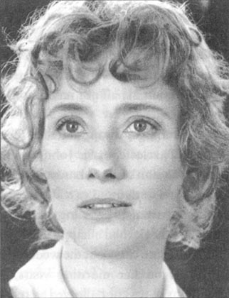
“下次再见时，”门在他身后合上的时候埃莉诺自言自语地说，“他就是露西的丈夫了。”
詹宁斯夫人回来后，急切地想要知道更多的细节。“亲爱的，那个年轻人要多久才能做好准备呢？”
“我想要两三个月吧。”埃莉诺回答。
“两三个月！亲爱的，你说这话的时候怎么这么平静啊！上校等得了那么长时间吗？我知道你想为费拉尔斯先生做一件好事，但是你就不能找一个已经取得牧师资格的人吗？”
“我亲爱的夫人，你在想什么啊？上校的唯一意愿就是对费拉尔斯先生有所帮助。”
“我的天哪，亲爱的！你不会说上校跟你结婚是为了给费拉尔斯先生10英镑作为主持婚礼的酬劳吧？”
这番话后两人间的误会无法再继续下去了，而在埃莉诺解释这一切的时候两人都乐坏了。詹宁斯夫人知道实情后也一样很高兴，而且期待着过几个月后去德拉福德的牧师住宅拜访露西和爱德华。埃莉诺现在知道爱德华与露西结婚已经是板上钉钉的事情了；她自己帮着他们铺平了通向婚姻的道路。
9．Marianne's illness
9
Marianne's illness
Before leaving London, Elinor paid one last visit to her brother and his wife. Fanny did not wish to see her, and stayed in her room, but John was very interested in the news of Edward's good luck. He could not understand why the colonel should give away a living, when he could have sold it. But he had something more particular to say to his sister. Taking her hand, he spoke in a very serious whisper.
'There is one thing I must say, because I know it will please you. I know, in fact, Fanny heard her mother say, that although perhaps she did not approve of... of a certain attachment of Edward's—you understand me—it would have been far preferable to her than this engagement to Miss Steele. Of course all that is quite in the past now, and out of the question. But I thought I would just tell you, my dear Elinor. Not that you have any reason to be sad. There is no doubt of your doing extremely well. Has Colonel Brandon been with you lately?'
Elinor was glad to be spared the need to reply by the entrance of Mr Robert Ferrars. She had only met him once before and had found him a thoughtless and insensitive young man, full of his own self-importance. This short meeting only served to support her low opinion of his head and heart. He talked happily of Edward's inheritance, which he would now enjoy, and laughed loudly at the idea of Edward as a poor vicar living in a cottage.
'His engagement certainly was very shocking news,' he added. 'I said to my mother, "My dear madam, I do not know what you intend to do, but for myself, I must say that if Edward marries this young woman, I shall never see him again." I saw the girl once, you know, just a plain, country girl, with no elegance or beauty. I cannot help thinking that if I had heard of the connection earlier, I could have persuaded Edward to break it off. But now it is all too late. He must be punished, that is certain.'
Elinor was relieved that she could not stay long, and sincerely hoped she would not see Robert Ferrars again.
The journey to Cleveland, the Palmers' home in Somerset, took two days. Their house was comfortable and modern, with large, well-kept gardens and woods. On her arrival Marianne went straight into the garden. She was feeling more agitated than usual, aware of being only eighty miles from Barton and only thirty from Willoughby's country house, but she loved being back in the romantic countryside. She determined to spend as much time as possible taking lonely walks through the gardens and woods. Alone, she would be free to delight in her misery, thinking, dreaming, remembering.
The hours passed quietly at Cleveland. Mrs Palmer had her child, and Mrs Jennings her sewing. Elinor was surprised to find Mr Palmer very capable of being a pleasant companion, and only occasionally rude to his wife and mother-in-law. Colonel Brandon, who was also a guest of the Palmers', spent a great deal of time with Elinor, talking to her about the vicar's house at Delaford and the repairs he was planning to have done to it. His pleasure in her conversation and his respect for her opinion would have been enough to justify Mrs Jennings' view of his attachment, and even, perhaps, to make Elinor suspect it herself. She still felt certain, however, that while he spoke to her, it was Marianne at whom he looked, and of whom he thought. When Marianne mentioned that she had a sore throat, and felt unwell, the colonel appeared extremely worried. In his concern Elinor saw the quick feelings and needless alarm of a lover.
Two delightful evening walks in thick wet grass had given Marianne a violent cold. She felt heavy and feverish, with pains all over her body, but at first refused all medicines, saying that a good night's rest was all that she needed.
The next day, however, she was worse, unable to do anything except lie miserable on a sofa, and after another restless, feverish night, Elinor was very ready to send for the Palmers' doctor. After examining his patient, he said that she was suffering from an infection, and would recover in a few days. But the word 'infection' greatly alarmed Mrs Palmer, who feared that her baby might catch it, and she persuaded her husband to take her and the child to stay with a near relation, until there was no further danger of illness at Cleveland. Mrs Jennings kindly insisted on staying with the Miss Dashwoods, as she felt responsible for the young ladies in their mother's absence, and Colonel Brandon also offered to stay, in case a gentleman's help was needed. Poor Marianne now felt really ill, and extremely miserable, as their return to Barton would have to be considerable delayed.
Several days passed, and Marianne's condition remained the same. The doctor came every day, talking each time of a speedy recovery, and Elinor was just as hopeful. In her letters home, she had not told her mother of the seriousness of Marianne's illness, and now congratulated herself on not alarming Mrs Dashwood unnecessarily. But that evening, Marianne became restless again, and Elinor stayed beside her bed, watching her turning feverishly from side to side. Suddenly Marianne sat up and cried wildly, 'Is mama coming?'
'Not yet,' replied Elinor, hiding her terror, and helping her sister to lie down again. 'It is a long way from Barton.'
'But she must come soon!' cried Marianne desperately. 'I shall never see her again if she does not come soon!'
Elinor was so alarmed that she sent for the doctor at once, and decided to send a messenger to Barton to fetch her mother. She spoke immediately to Colonel Brandon, who, although greatly depressed and fearing the worst, was ready to help in any way, and offered to drive to Barton himself. How grateful Elinor was for the comfort of such a friend as the colonel at that moment! Not a second was lost in delay of any kind, and the colonel drove off into the night, leaving Elinor to watch over her sister.
Both sisters suffered greatly during that night, Marianne in her sleepless pain and fever, and Elinor in cruel anxiety that her mother would arrive too late to see her dear child alive. When the doctor came, he had to confess that his medicines had failed, and that the infection was stronger than ever. Elinor was calm, except when she thought of her mother, but she was almost without hope. She stayed by her sister's bed all morning, her thoughts confused and sorrowful.
But at midday, she began to see signs of the fever going down. Cautiously, she told herself not to hope, but soon it seemed almost certain, and on the doctor's next visit, he was able to congratulate her on Marianne's slow but sure recovery. Mrs Jennings showed her delight by talking and laughing without stopping, but Elinor's feelings were of a different kind. Her relief and happiness were strong, but silent. That evening Marianne fell into a quiet, comfortable sleep, and Elinor knew that at last she was out of danger.
Her thoughts now began to turn to her mother's arrival, which was expected at any moment. Mrs Jennings persuaded her to leave Marianne's bedside for a few minutes to drink some tea, but Elinor soon returned, to sit by her sleeping sister and wait for the travellers from Barton. The night was cold and stormy, but as long as Marianne slept peacefully, Elinor did not mind the beating of the rain on the windows, or the noise of the wind blowing round the house.
At eight o'clock she heard a carriage drive up to the front door. Knowing what her poor mother must be feeling, Elinor found it impossible to be calm, and hurried downstairs. She rushed into the sitting-room, and saw—Willoughby.
With a look of horror, she stepped backwards, and was about to leave the room, when he said rapidly, 'Miss Dashwood, I beg you to stay. I have something I must tell you.'
Elinor was astonished. 'To tell me? Well, sir, if you must. But be quick. I have no time to spare.'
'Tell me first, is your sister really out of danger?'
'We hope she is,' replied Elinor coldly.
'Thank God! I heard she was ill, and I have driven all day to get here. I have come to offer some kind of explanation, to show you that I have not always been a scoundrel, and to receive something like forgiveness from Ma—your sister.'
'Marianne has already forgiven you.'
'Has she?' he cried eagerly. 'But listen, I must explain. When I first met your family, I had no other intention than to pass the time pleasantly while in Devonshire. My income was never large, and my debts are always very great, so I was planning to attach myself to a woman of fortune. But I soon found myself sincerely fond of your sister, and the happiest hours of my life were spent with her. I allowed myself, most wrongly, to put off asking her to marry me. At last I determined to speak of marriage, but unfortunately my relation, Mrs Smith, had just discovered a connection'—he reddened, and looked away—'but you have probably heard the whole story from Colonel Brandon.'
'I have,' replied Elinor, also blushing, 'and I cannot see how you will explain away your part in that terrible business.'
'No, I know I was at fault,' cried Willoughby, 'but I must ask you to believe that I had no idea Eliza was in such need. I suffered too, because Mrs Smith was extremely angry at my behaviour, and refused to allow me any more money, or see me again. I knew that if I married Marianne, I would be poor, and I couldn't bear the thought of that. So I came to Barton Cottage, to say goodbye to her. How happy I had been, the day before, ready to become engaged to her! And how miserable I was when I saw her sorrow and deep disappointment! Oh God! What a hard-hearted scoundrel I was!'
There was a short silence, while Willoughby recovered his self-control, and Elinor's heart softened a little towards him.
'And then in London, Marianne's notes to me! Every word was a knife in my heart! She was far dearer to me than any other woman in the world, but by then I was engaged to Miss Grey!'
'Do not speak like that of my sister, Mr Willoughby,' said Elinor. 'Remember that you are a married man now.'
He began to laugh wildly. 'Married, yes. Did you like the letter I wrote to Marianne? Miss Grey happened to see Marianne's last note to me, and read it. Her jealous anger made her think of a cruel punishment for me. She told me what to write, and watched over me as I wrote the letter. They were all her own gentle words, her own sweet thoughts. I could not risk losing her—I needed her money to pay my debts.'
'You ought not to speak of Mrs Willoughby in this way. You have made your choice, and should respect your wife.'
'She does not deserve your pity. I have no chance of domestic happiness with her. But do you think me less guilty than before? Will you tell your sister, when she is recovered, what I have told you? If ever, one day, by some happy chance, I were free again—' Elinor stopped him with a frown. 'Well, I shall leave now. I shall live in terror of one event—your sister's marriage.'
'She can never be more lost to you than she is now.'
'But someone else will have her. And if that someone were he, whom of all men I could least bear... But I must go. Goodbye.' And he almost ran out of the room.
Elinor's heart was full as she returned to her sleeping sister. The past, the present, the future—Willoughby's visit and the pity she felt for him, Marianne's health and her mother's expected arrival, made her so agitated that she did not notice her hunger or tiredness. Only half an hour later, a second carriage arrived at the house. Elinor hurried to the door, just in time to receive and support her mother as she entered, half-dead with fear. In a moment Elinor was able to give the good news, and Mrs Dashwood's tears silently expressed her relief. Colonel Brandon shared her feelings in an even greater silence. In two minutes Mrs Dashwood was with her suffering child, made dearer than ever by absence, unhappiness and danger.
Marianne's recovery continued every day, and Mrs Dashwood soon found an opportunity to tell Elinor another piece of news. On the long drive from Barton to Cleveland, Colonel Brandon had been unable to hide his feelings, and had told Mrs Dashwood that he had long wanted to marry Marianne. Mrs Dashwood was now as certain of the colonel's excellent character as she had once been of Willoughby's, and hoped that Marianne would, in time, come to accept Colonel Brandon's offer of marriage.
sore adj. a part of your body that is sore is painful and often red because of a wound or infection 疼痛的
infection n. a disease caused by bacteria or a virus that affects a particular part of one's body （由细菌或病毒造成的身体某部分的）感染
domestic adj. concerning family relationships and life at home 家庭生活的
frown n. act of wrinkling one's brows, especially in displeasure or concentration 皱眉
玛丽安娜的病
9．玛丽安娜的病
离开伦敦之前，埃莉诺去看了她哥哥和嫂子最后一次。范妮不想见她，于是待在自己的房间里没出来，但是约翰却对爱德华交好运的消息很感兴趣。他无法理解上校为什么要向他提供这样一份生计，他本可以拿它卖钱的。但是他有一些特别的事情要跟妹妹说。他拉着她的手，非常严肃地低声说。
“有一件事我必须告诉你，因为我知道这会让你感到高兴的。我知道，其实范妮曾听见她母亲说，尽管也许她不赞成……爱德华的某一份感情——你知道我指的是什么吧——选择你还是远远胜过与斯蒂尔小姐的婚约。当然这些现在都已经过去，也不可能了。但我只是想告诉你，我亲爱的埃莉诺，你没有理由感到伤心。毫无疑问你做得很好。上校最近和你在一起吗？”
这时罗伯特·费拉尔斯走了进来，埃莉诺很高兴自己无需回答刚才的提问了。她之前只见过罗伯特一面，发现他是一个没有思想、缺乏感情、自命不凡的年轻人。这次短暂的见面只不过加深了她对他的头脑和心灵的不良印象。他快活地谈起原本将属于爱德华的遗产现在已是他的囊中之物，并且在说到爱德华将成为一名住在小农舍里的穷牧师时放声大笑。
“他的婚约的确令人震惊，”他补充说，“我对我母亲说：‘我亲爱的妈妈，我不知道你打算怎么做，但是对我来说，我必须说如果爱德华娶那个年轻女子为妻，我将从此不再见他。’我见过那个女孩一面，你知道，她只不过是一个普通的乡下女孩，既不高雅也无美貌可言。我一直在想，如果我早一点儿知道这个婚约的话，我本可以说服爱德华放弃它的，但是现在一切都晚了。他必须受到惩罚，这是肯定的。”
让埃莉诺感到轻松的是她不用待多久，而且她真心希望永远不再遇见罗伯特·费拉尔斯。
帕尔默夫妇在索美塞的家名为克里夫兰，前往那儿的旅途花了两天的时间。他们的房子既舒适又时髦，还有一座维护良好的大花园和一片树林。玛丽安娜一到那儿就径直走进花园，她的情绪比平时更加焦躁，因为她知道现在自己离巴顿只有80英里，离威洛比的乡间寓所仅有30英里。但是她很高兴回到充满浪漫气息的乡间。她决心尽可能把时间都用来独自在花园里或树林中散步。独处的时候，她将能够自由地在痛苦中寻找快乐，自由地思考、梦想、回忆。
在克里夫兰时间悄然流逝。帕尔默夫人要照顾她的孩子，而詹宁斯夫人则把时间消磨在做针线活儿上。埃莉诺惊讶地发现帕尔默先生是一个很不错的人，只是偶尔会对他妻子和岳母态度粗鲁。同时在帕尔默家做客的还有布兰登上校，他大部分时间都和埃莉诺在一起，谈论在德拉福德的牧师住宅以及将其整修一新的计划。他在与她交谈中所获得的乐趣和他对她意见的尊重已经足够证明詹宁斯夫人的看法，甚至足以使埃莉诺自己也怀疑他是否真的爱上她了。然而她仍然确信当他与她交谈的时候，他看的、想的却是玛丽安娜。当玛丽安娜提到她嗓子疼，身体不舒服的时候，上校显得十分担心。从他对玛丽安娜的关心中，埃莉诺看到了一个坠入情网者的情绪变化和大惊小怪。
连续两个夜晚在茂密的湿草丛中愉快地散步让玛丽安娜得了重感冒。她感到头晕发烧，全身疼痛，但起初她拒绝吃药，说只要好好休息一晚就行了。
然而次日她的病情加重了，什么事情都不能做，只能难受地躺在沙发上，而且夜里也没睡好，还发烧了，埃莉诺当即请来了帕尔默夫妇的医生。给病人做完检查后，医生说她受到了感染，过几天就会好的。但是“感染”这个词使帕尔默夫人一下子警觉起来，她害怕她的孩子会被传染，于是说服丈夫带她和孩子去附近一个亲戚家里小住，直到克里夫兰的疾病威胁完全消除后再搬回来。詹宁斯夫人好心地坚持留下来陪伴达什伍德姐妹，因为她觉得她应该在她们母亲不在的情况下对她们负责。布兰登上校也提出留下来，以防她们需要男士的帮助。可怜的玛丽安娜现在真的病得很重，而且为她们返回巴顿的行期将被向后推延很长一段时间而难过。
几天后，玛丽安娜的病情还是没有丝毫好转。医生每天都来，每次都说病人很快就能康复，埃莉诺对此也充满了希望。在写回家的信中，她向母亲隐瞒了玛丽安娜病情的严重性，而且为免除达什伍德夫人不必要的担心而感到庆幸。但是当天晚上，玛丽安娜又睡不安稳了，埃莉诺陪在她床边，看着她在床上辗转反侧。玛丽安娜突然坐起来大声喊道：“妈妈来了吗？”
“还没有来，”埃莉诺回答道，尽力掩饰住她心中的恐惧，并帮助妹妹躺下来，“从巴顿过来有很长一段路程。”
“可是她得快点儿来！”玛丽安娜绝望地喊道，“如果她不尽快赶到的话，我就再也见不到她了！”
妹妹的话令埃莉诺感到惊慌，她立即派人去请医生来，并且打算叫人送信去巴顿叫母亲过来。她立刻跟布兰登上校说了她的想法。尽管上校情绪十分低落，担心最坏的情况发生，但还是随时准备提供帮助。他提出由他亲自驾车赶往巴顿。那一刻埃莉诺对布兰登上校充满感激！事不宜迟，上校很快出发消失在茫茫夜色中，留下埃莉诺照料她妹妹。
夜里姐妹俩都非常受罪，玛丽安娜受到失眠、疼痛和高烧的折磨，埃莉诺则受到焦虑情绪的煎熬，她担心母亲无法及时赶来看到她亲爱的孩子还活着。医生到的时候，不得不承认他开的药没有起效，感染反而加重了。除了想到母亲的时候，埃莉诺还是保持着镇静，但是她几乎已经失去希望了。她整个上午都守在妹妹的床前，思绪混乱而悲伤。
但是在中午的时候，她开始看到退烧的迹象。她谨慎地告诉自己不要抱有太大的希望，但她很快就几乎可以肯定高烧正在消退。医生再来探望病人的时候，他已经能够对玛丽安娜尽管缓慢但却肯定的康复向埃莉诺表示祝贺了。詹宁斯夫人不停地说笑，快乐的情绪展现无余。但是埃莉诺的感觉却很不同。她如释重负的快乐是强烈的，但也是沉默的。当天晚上玛丽安娜进入了宁静而舒适的梦乡，埃莉诺知道她终于脱离危险了。
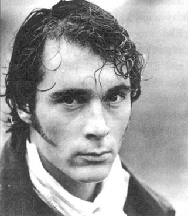
埃莉诺的念头现在转到了随时可能到来的母亲身上。詹宁斯夫人劝她离开玛丽安娜几分钟去喝了点儿茶，但是埃莉诺很快就回到妹妹的床边等待母亲和上校从巴顿赶来。那天晚上很冷，风雨大作，但是只要玛丽安娜安详地睡着，埃莉诺就不介意打在窗户上的雨，或是在屋外呼啸的风。
8点钟的时候她听到马车驶到前门的响声。埃莉诺十分清楚可怜的母亲此时的心情，于是无法再保持镇静的她匆忙下楼，快步冲进客厅，却发现来者是威洛比。
带着恐惧的神情，她往后退了几步并且准备离开房间，就在此时他迅速地说道：“达什伍德小姐，我求你留步。我有件事必须告诉你。”
埃莉诺感到非常惊讶。“告诉我？好吧，先生，如果你必须说的话。不过你得快点儿。我没有时间。”
“请你先告诉我，你妹妹真的脱离危险了吗？”
“我们希望如此。”埃莉诺冷淡地回答。
“感谢上帝！我听说她病了，于是坐了一整天马车赶来这里。我是来做出解释的，向你们证明我不总是个无赖，并且得到玛——你妹妹的原谅。”
“玛丽安娜已经原谅你了。”
“她已经原谅我了吗？”他急切地大声说，“但是请听我讲，我必须解释。第一次见到你们一家人的时候，我只是想在德文郡度过一段美好时光。我的收入一直不多，而债务却总是数目庞大。因此我计划娶一位富有的女子为妻。但是我很快发现我是真心喜欢你妹妹，我生命中最幸福的那些时光就是与她一起度过的。我错误地没有及时向她求婚。最终我下定决心要向她求婚，但不幸的是我的亲戚史密斯夫人正好在这时发现了我之前的一段感情”——说到这里他脸红了，眼光也移向别处——“不过也许你已经从布兰登上校那里听说整件事了。”
“是的，”埃莉诺回答，她的脸也红了，“我无法想出你怎样解释清楚你在那件可怕的事中所扮演的角色。”
“不，我知道我错了，”威洛比大声说，“但是我必须请求你相信我并不知道伊丽莎陷入如此困境。我也很痛苦，因为史密斯夫人对我的行为十分生气，并拒绝再给我钱，甚至不愿意再见到我。我知道如果娶玛丽安娜为妻的话，我会很穷，而这是我无法忍受的。因此我来到巴顿小屋向她道别。前一天我还那么快乐，都已经准备好跟她订婚了！看到她的悲伤和深深的失望时我又是多么痛苦！哦，上帝啊！我真是个冷酷的混蛋！”
短暂的沉默过后，威洛比恢复了自控，而埃莉诺则对他心软了一些。
“之后在伦敦，玛丽安娜给我写信！每一个字都像是刺入我心脏的匕首！对我来说她是这个世界上最珍贵的女子，但是那个时候我已经与格蕾小姐订婚了！”
“请你不要这样说我的妹妹，威洛比先生，”埃莉诺说，“记住你现在是个已婚的男人。”
他开始大笑起来。“已婚的，没错。你喜欢我写给玛丽安娜的信吗？那是因为格蕾小姐碰巧看到了玛丽安娜写给我的最后一封信。她的妒火促使她想出了一个残酷的办法来惩罚我。她告诉我要写的内容，并且监视我按她的要求写完信。信上写的都是她自己的文雅辞藻，她自己的甜蜜想法。可我不能冒失去她的风险——我需要她的钱来偿还我的债务。”
“你不该这样说威洛比太太。你作出了自己的选择，你应该尊重你的妻子。”
“她不配得到你的同情。和她在一起，我没有机会获得家庭幸福。但是你是否觉得我的罪过比以前轻一点了呢？等你妹妹康复后，你会把我对你说的话告诉她吗？如果有一天，某个偶然的机会让我重获自由——”埃莉诺皱了一下眉头使他没有继续往下说。“好吧，现在我该走了。我将生活在对一件事的恐惧中——你妹妹的婚姻。”
“你已经失去她了，不论她结婚与否。”
“但是另外一个人会得到他。而如果那个人是他的话，那个让我最无法忍受的人……但是我必须走了。再见。”说着他几乎是跑着离开了房间。
埃莉诺叫到熟睡的妹妹床边，满脑子都在想刚才的事。过去、现在，还有将来——威洛比的来访和她对他的同情，玛丽安娜的健康和预期中母亲的到来，这一切使她情绪亢奋，以至于全然忘记了饥饿与疲劳。只过了半个小时，又一辆马车驶抵这座房子，埃莉诺快步跑向大门，正好赶在她被吓得半死的母亲进门的时候上前搀扶住她。埃莉诺赶快把好消息告诉了她，而达什伍德夫人心里一松，无声地流下泪来。布兰登上校也松了一口气，但没说什么。几分钟后达什伍德夫人就见到了她正受到病痛折磨的孩子。分别、不幸和危机让母亲格外心疼女儿。
玛丽安娜一天天地康复起来，而达什伍德夫人很快找到了一个机会告诉埃莉诺另一则消息。在从巴顿到克里夫兰的长途旅行中，布兰登上校无法掩饰他的情感，并且告诉达什伍德大人他一直想娶玛丽安娜为妻。达什伍德夫人现在毫不怀疑上校的高尚人格，就像以前信任威洛比一样，她希望随着时间的流逝，玛丽安娜可以慢慢接受布兰登上校的求婚。
10．Return to Barton
10
Return to Barton
Marianne recovered so well that within a week she was able to travel home, with her mother and Elinor, in Colonel Brandon's carriage. Elinor was pleased to see that Marianne showed a new firmness of mind and calmness of expression. Although she was clearly still upset when she thought of the past, she was now able to control her feelings, and show a cheerful face to her family. She started planning a new life for herself.
'When I am stronger, Elinor, we will take long walks together every day. I shall never get up later than six, and I shall spend every morning practising my music or reading.'
Elinor smiled, doubting whether this plan would last very long, but happy to see Marianne enthusiastic again.
A couple of days later, the weather was so fine that Mrs Dashwood encouraged Elinor to take Marianne out for a gentle walk, and the sisters set out along the quiet country road.
'There, exactly there,' said Marianne, pointing to the hill behind the house, 'is where I fell, and first saw Willoughby. I am thankful to find that I can see the place with so little pain! Can we talk on that subject now, do you think, Elinor?'
She was affectionately encouraged to speak openly.
'I know how badly I have behaved! My illness has given me time to think. I should never have been so incautious in my behaviour with Willoughby, and so impolite to other people. I know now that my own uncontrolled feelings caused my suffering, and even my illness was all my own fault. I have been unkind and unfair to almost everybody I know!—but especially to you, dearest Elinor. Did I follow your example? No! Did I help or comfort you, when you were suffering? No! I only thought of my own sorrow and my own broken heart.'
Elinor, impatient to calm her, praised her honesty.
'I can never forget Willoughby,' continued Marianne, 'but my memories no longer make me miserable. If I only knew that he did not always intend to deceive me, that he had some good in him, I would have much greater peace of mind.'
Elinor took a deep breath, and passed on to her sister what Willoughby had told her. Marianne said nothing, but tears ran down her face. They were now on their way back to the cottage, and as they reached the door, she kissed Elinor gratefully, whispered, 'Tell mama,' and went slowly upstairs.
When Mrs Dashwood heard the story, she expressed some pity for Willoughby. But for her, nothing could remove the guilt of his behaviour towards Eliza, and then Marianne.
In the evening, when they were all together, Marianne spoke again of Willoughby. 'I wish to tell you both,' she told her mother and Elinor, in a trembling voice, 'that what Elinor told me this morning was a great relief to me. I could never have been happy with him, after knowing all this.'
'I know, I know!' cried her mother. 'My Marianne, happy with a scoundrel like that? No!'
'Marianne, you consider the matter,' said Elinor, 'exactly as a sensible person should. And I expect you realize that marriage to him would have involved you in many troubles and disappointments. You would always have been poor, and perhaps your influence on his heart would have lessened, as he realized his selfish demands could not be met.'
'Selfish? Do you think him selfish?' said Marianne. 'Yes, you are right, it is true. How foolish I was!'
'I am more to blame than you, my child,' said Mrs Dashwood. 'I should have discovered his intentions earlier.'
During the next few days Marianne continued to get stronger, and life at Barton fell back into the old routines.
Elinor grew impatient for some news of Edward, but the news arrived in a rather unexpected way. Mrs Dashwood's manservant, Thomas, had been sent to Exeter one morning on business, and on his return finished his report with these words:
'I suppose you know, madam, that Mr Ferrars is married.'
Marianne looked quickly at Elinor's white face, and burst into uncontrolled sobbing. Mrs Dashwood did not know which daughter to take care of first. She and Margaret led Marianne to another room, and then Mrs Dashwood hurried back to Elinor, who, although clearly upset, had been able to start questioning Thomas. At once Mrs Dashwood took that trouble upon herself.
'Who told you that Mr Ferrars was married, Thomas?'
'I saw him myself, madam, with his lady, Miss Steele, as her name was then. Miss Steele called to me from a carriage, and asked after the young ladies' health. Then she smiled and said she had changed her name since she was last in Devon.'
'Was Mr Ferrars in the carriage with her?'
'Yes, madam. He was sitting next to her, but I didn't see his face. And Mr Ferrars isn't a gentleman for talking much.'
'Did Mrs Ferrars look well?'
'Yes, madam, very well, and extremely happy.'
Thomas was then sent away, and Elinor and her mother sat in thoughtful silence. Mrs Dashwood now realized that Elinor had hidden her feelings for Edward, in order to spare her mother any unhappiness. She felt guilty that Marianne's suffering had taken up so much of her time, when her eldest daughter was probably just as much in need of her care and attention. Elinor herself was extremely miserable. She had always had a secret hope that something might happen to prevent his marrying Lucy. But now he really was married, and she could not bear the thought of it.
A few days later, a gentleman was seen riding up to their front door. At first Elinor thought it must be Colonel Brandon, but it was not him. In fact, it looked just like Edward. She looked again. It was Edward. She moved away from the window, and sat down. 'I will be calm. I will—must—be calm.'
Her mother and sisters had recognized Edward too, but not a word was spoken, and they all waited in silence for their visitor to appear. He entered, looking pale, agitated and afraid. Mrs Dashwood greeted him kindly, and wished him every happiness. He blushed, and said something no one could hear.
Elinor, desperately, began to talk about the weather. When she had finished expressing her extreme delight in the dryness of the season, a very awful pause took place. It was ended by Mrs Dashwood, who felt it necessary to hope that Mrs Ferrars was well. Edward replied hurriedly that she was.
Another pause.
'Is Mrs Ferrars in Plymouth?' asked Elinor, bravely.
'Plymouth!' he said, surprised. 'No, my mother is in London.'
'I meant,' said Elinor, taking up her sewing from the table, 'to ask about Mrs Edward Ferrars.'
He blushed, looked puzzled, hesitated, then said, 'Perhaps you mean—my brother—you mean Mrs Robert Ferrars.'
'Mrs Robert Ferrars!' repeated Marianne and Mrs Dashwood in the greatest astonishment. Elinor could not speak.
'Yes,' said Edward, hurriedly, 'you may not have heard that my brother is now married to—to—to Miss Lucy Steele.'
Elinor could sit there no longer. She ran out of the room, and as soon as the door was closed, burst into tears of happiness. Until then Edward had avoided looking at her; now he watched her hurry away, and seemed to fall into a dream. At last, without saying a word, he got up, left the room, and walked out of the house.
Great was the astonishment he left behind him. One thing, however, was certain. Edward was now free, and it was not hard to guess how he would use this freedom. Walking about in the fresh air made him feel brave enough to return, and when they all sat down to tea at four o'clock, Edward had won his lady, gained her mother's permission, and was the happiest man alive.
His heart was now open to Elinor, with his weaknesses and mistakes confessed, and his boyish attachment to Lucy discussed with all the wise experience of a man of twenty-four.
'My engagement to Lucy certainly was foolish,' said he, 'but it would not have happened if my mother had allowed me to choose a profession. I had nothing to do, and no friends to advise me, so I imagined myself in love. When I met you, my dear Elinor, I realized at once how weak I had been.'
Elinor's mother and sisters were delighted; they could not love Edward enough, nor praise Elinor enough.
And Elinor—how can her feelings be described? From the moment of learning that Edward was free, to the moment of his asking her to marry him, her mind was in a storm. But when all doubt was past and she heard his voice expressing his deep love and affection for her, she knew her happiness was complete.
Edward stayed at the cottage for a week, and one of the first subjects of discussion was of course Lucy's marriage. It appeared that Robert had visited her several times, trying to persuade her to set Edward free. Lucy had realized that it was now Robert, not Edward, who would inherit his mother's fortune. Being of similarly selfish character, they were attracted to each other, and decided to get married with speed and secrecy.
Edward's mother was, naturally, horrified by Robert's marriage. She did not greatly approve of Edward's engagement to Elinor either, but in the end was persuaded to accept it, and even, rather unwillingly, gave Edward ten thousand pounds; she had given the same to Fanny on her marriage. This was much more than was expected by Edward and Elinor, who could now afford to marry very soon, and move into the vicar's house at Delaford.
There they were visited by all their friends and relations, who found them one of the happiest couples in the world. Even Mrs Ferrars came to visit them, although they were never favourites with her. That honour was reserved for Robert and Lucy, who, by endless attentions and respectful messages, finally regained their place in her heart. The whole of Lucy's behaviour in the matter may be seen as a most encouraging example of what self-interest can do to gain wealth and position. With Mrs Ferrars' generous help, Robert and Lucy lived in great comfort, often visiting John and Fanny Dashwood; only their frequent domestic disagreements spoiled their happiness.
Elinor's move to Delaford did not separate her from her family, as her mother and sisters spent half their time with her. Mrs Dashwood was anxious to bring Marianne and Colonel Brandon together, which was also Elinor's and Edward's wish. Knowing how good, how kind the colonel was, and how fondly he was attached to her, what could Marianne do?
At the age of seventeen she had believed that passionate feeling was the most important thing in life. She had had her heart broken, and learnt to recover from it. Then at nineteen, with feelings of only warm friendship and respect, she agreed to marry a man she had once considered dull, and far too old for marriage!
But so it was. Colonel Brandon was now as happy as all those who loved him believed he deserved to be, and Marianne, who could never love by halves, came in time to love her husband as much as she had loved Willoughby.
Willoughby himself was saddened to hear of her marriage, but he did not die of a broken heart. He even managed to get some enjoyment out of life, as his wife was not always unpleasant, and his home not always uncomfortable. But Marianne remained his idea of the perfect woman, and he often refused to admire a new young beauty as 'nothing to compare with Mrs Brandon'.
Mrs Dashwood stayed on at Barton Cottage, and as Margaret soon grew old enough for dancing and falling in love, Sir John and Mrs Jennings did not miss Elinor and Marianne as much as they had feared. Barton and Delaford were connected by strong family affection, and there was constant communication between the two places. Elinor and Marianne lived in great happiness, loved and respected by their husbands, and almost within sight of each other. The passing of the years only served to bring them all closer together.
routine n. the usual or normal way in which you do things 惯例，常规
awful adj. very bad or unpleasant 糟糕的
返回巴顿
10．返回巴顿
玛丽安娜康复得很快，一周之内她就能够和母亲以及埃莉诺一道乘坐布兰登上校的马车踏上回家的旅途了。埃莉诺很高兴看到病愈后的玛丽安娜显示出一种全新的坚强意志和镇静表情。尽管想到过去的时候还是明显很沮丧，但她现在已经能够控制自己的情感，并在家人面前露出一张快活的笑脸。她开始为自己规划新的生活。
“等我更强壮些的时候，埃莉诺，我们要每天出去长途散步，而且我每天早上都要在六点前起床，练习音乐或阅读。”
埃莉诺笑了，她怀疑妹妹的计划是否会持续很长时间，不过她很高兴看到玛丽安娜重新变得精力充沛。
几天后，天气非常好，达什伍德夫人鼓励埃莉诺带着玛丽安娜出去走走。两姐妹沿着安静的乡间小径出发了。
“那儿，就是在那儿，”玛丽安娜指着屋后的一座小山说，“我就是在那里跌倒，第一次见到威洛比的。还好我再见到这里已经不那么难过了！我们现在能够谈论这个话题了吧，你说呢，埃莉诺？”
埃莉诺充满感情地鼓励她敞开心扉。
“我知道我的行为多么任性！生病让我有时间思考，我不应该如此莽撞地处理与威洛比的关系，也不应该那么无礼地对待他人。我知道是我自己没有控制好情绪导致了我的痛苦，甚至我生病也是自己的过错。我似乎对所有人都缺乏善意和公正！——特别是对你，最亲爱的埃莉诺。我向你学习了吗？没有！在你难过的时候，我帮助你、安慰你了吗？也没有！我只考虑到自己的悲伤和我自己破碎的心。”
埃莉诺急忙安慰她并且夸奖她的诚实。
“我永远都不会忘记威洛比，”玛丽安娜继续说，“但是回忆不再令我感到痛苦了。只要我知道他没有一直存心欺骗我，他还有一些优点，我的心情就会平静得多。”
埃莉诺深深吸了一口气，然后把威洛比告诉她的话说给妹妹听。玛丽安娜听完什么都没有说，然而泪水顺着她的脸庞流了下来。她们现在正朝着屋子往回走，当她们走到门口的时候，玛丽安娜感激地亲吻了埃莉诺，并且低声对她说：“告诉妈妈。”然后慢慢地走上楼去。
听到这个故事后，达什伍德夫人表达了对威洛比的些许同情。但是对她来说，没有什么能够洗刷他对伊丽莎和玛丽安娜犯下的错误。
晚上，当她们聚到一起的时候，玛丽安娜再次提到了威洛比。“我想告诉你们，”她用颤抖的声音对母亲和埃莉诺说，“埃莉诺今天早晨告诉我的事情对我来说是一种巨大的解脱。在得知这些事情后，我跟他在一起不可能幸福。”
“我知道，我知道！”她母亲大声说，“我的玛丽安娜，你跟一个像他那样的无赖在一起能幸福吗？当然不可能！”
“玛丽安娜，你看待这件事的方式，”埃莉诺说，“正是一个理智的人应该有的。我希望你意识到与他的婚姻会将你带进诸多的麻烦和失望之中。你将长久受贫困的烦扰，而当他意识到他自私的要求无法得到满足的时候，你对他的心灵的影响力也将减退。”
“自私？你认为他自私吗？”玛丽安娜说，“是的，你说的对，千真万确，我真傻！”
“我比你更应该受到责备，我的孩子，”达什伍德夫人说，“我本应该早点儿发现他的企图。”
在接下来的几天中，玛丽安娜的身体渐渐好起来，而一家人在巴顿的生活也渐渐回到了往日的状态。
埃莉诺急着想听到有关爱德华的消息，可那消息却是以一种出人意料的方式到来的。达什伍德夫人的男仆托马斯有一天上午被派往埃克塞特办事，他回来汇报后说：
“我想夫人已经听说费拉尔斯先生结婚了。”
玛丽安娜快速地瞟了一眼埃莉诺惨白的脸，然后发出了难以控制的啜泣声。这让达什伍德夫人不知道该先安慰哪个女儿才好。她和玛格利特先领着玛丽安娜去另外一个房间，然后她匆忙返回埃莉诺身边。埃莉诺尽管很沮丧，但还是开始询问托马斯具体的情况。达什伍德夫人一来就将这件麻烦事揽到自己身上。
“托马斯，是谁告诉你费拉尔斯先生结婚的？”
“我亲眼见到他了，夫人，跟他的太太斯蒂尔小姐在一起，那是她娘家的姓。斯蒂尔小姐从马车上喊我的名字，并且问候了小姐们的健康。然后她微笑着说她自从上一次到德文郡后就改姓了。”
“费拉尔斯先生跟她一起在马车里吗？”
“是的，夫人。他就坐在她身旁，但是我没有看见他的脸。再说费拉尔斯先生本来话就不多。”
“费拉尔斯夫人看上去好吗？”
“是的，夫人，很好，而且心情极好。”
托马斯被打发走后，埃莉诺和她母亲陷入了无声的沉思。达什伍德夫人现在意识到埃莉诺为了避免引起母亲的担心而隐藏了对爱德华的感情。让她感到愧疚的是玛丽安娜的痛苦占用了她太多的时间，其实她的长女当时或许也需要同样多的关注。埃莉诺自己则非常难过，她一直在暗中希望会有某件事能够阻止爱德华与露西结婚。但是他现在真的结婚了，这让她无法忍受。
几天后，她们看见一位绅士骑马来到门前。起初埃莉诺以为那一定是布兰登上校，但她想错了。事实上，来人看上去像是爱德华。她又仔细看了一下才发现那人正是爱德华。她从窗前走开，坐下来。“我会保持镇定的。我会——必须——保持镇定。”
她母亲和两个妹妹也认出了爱德华，但是她们什么都没有说，只是默默地等待着来访者的出现。他走进来，看上去脸色苍白、紧张而胆怯。达什伍德夫人友好地问候他并祝他幸福。他的脸红了，并咕哝着说了一些没人能够听见的话。
埃莉诺开始绝望地谈论天气。当她表达完她对这个季节干燥天气的极端喜爱后，一个尴尬的停顿出现了。最后还是达什伍德夫人开口圆场，她感到有必要问候费拉尔斯夫人。爱德华急忙回答说她很好。
之后便又是一段停顿。
“费拉尔斯夫人在普利茅斯吗？”埃莉诺勇敢地问。
“普利茅斯！”他惊讶地说，“不，我母亲在伦敦。”
“我问的是，”埃莉诺一边从桌子上拿起她的针线活儿一边说，“爱德华·费拉尔斯夫人。”
他的脸红了，看上去迷惑而犹豫，然后他说：“也许你指的是——我的弟弟——你说的是罗伯特·费拉尔斯夫人。”
“罗伯特·费拉尔斯夫人！”玛丽安娜和达什伍德夫人惊讶地重复道。埃莉诺则一句话也说不出来。
“没错，”爱德华急匆匆地说，“你们也许还没听说我弟弟现在已经娶了——露西·斯蒂尔小姐为妻。”
埃莉诺再也坐不住了。她跑出房间，房门一关上，幸福的泪水便夺眶而出。直到这时爱德华一直避免正眼看她；现在他看到她急匆匆地离开，似乎跌入了梦境中。最后，他一言不发地起身离开了。
他走后，众人极端惊讶。但有一件事情是肯定的，那就是爱德华现在自由了，而且不难猜出他将会如何使用他的自由。在户外的新鲜空气中散步给了他回来的勇气，而当下午4点钟大家坐在一起喝茶的时候，爱德华已经赢得了埃莉诺的芳心，获得了她母亲的许可，成了世上最幸福的男人。
他的心扉现在终于向埃莉诺敞开了。他承认了自己的弱点和以前所犯的错误，并以一个24岁的男人全部的睿智经验谈论起他对露西那孩子气的恋情。
“我与露西的婚约毫无疑问是愚蠢的，”他说，“但是如果母亲允许我自由选择职业，这一切就不会发生。我无所事事，也没有朋友向我提供建议，所以就想象自己坠入了爱河。当我遇见你，亲爱的埃莉诺，我立即意识到我以前是多么脆弱。”
埃莉诺的母亲和妹妹们非常高兴；她们非常喜欢爱德华，也不停地夸奖埃莉诺。
而埃莉诺——怎么才能描述她现在的感受呢？自从她得知爱德华重获自由，一直到他向她求婚的那一刻，她想了太多。但是当所有的疑惑都成为过去，当她听到他表达出对她的爱恋之情，她知道她期待的幸福已经到来。
爱德华在埃莉诺家里住了一个星期，大家最先谈论的一个话题当然就是露西的婚姻了。看样子罗伯特去拜访了她几次，试图说服她给爱德华自由。而露西已经意识到现在是罗伯特而不是爱德华来继承他母亲的财产，由于两人有着相似的自私自利的性格，他们很快就彼此吸引，进而决定闪电般地秘密结婚。
爱德华的母亲自然被罗伯特的婚姻吓呆了。她也不是非常赞同爱德华与埃莉诺的婚约，但是最后她还是被说服接受了事实，甚至不情愿地给了爱德华一万英镑；范妮结婚的时候她也给了她那么多钱。这大大超出了爱德华和埃莉诺的预期，有了钱，他们很快结了婚，并搬进了德拉福德的牧师住宅。
他们的朋友和亲戚纷纷登门，都觉得他们是世界上最幸福的夫妻之一。甚至费拉尔斯夫人也来看望了他们，尽管他们从来都不是她最钟爱的。这项殊荣属于罗伯特和露西，他俩凭借着没完没了的关心和措辞恭敬的信函而重新赢得了在她心目中的地位。露西的所作所为可以被看作是为谋求自身利益而赢得财富和社会地位的典范。由于得到了费拉尔斯夫人的慷慨帮助，罗伯特和露西生活极为舒适，他们经常去拜访约翰·达什伍德和范妮·达什伍德；只有他们之间时常发生的争吵才会让他们的幸福受到破坏。
虽然埃莉诺搬到了德拉福德，但并没有与家人分开。她的母亲和妹妹们有一半的时间都和她在一起。达什伍德夫人急着想把玛丽安娜和布兰登上校撮合作一起，这也是埃莉诺和爱德华的愿望。得知上校是多么正直、多么善良，又是多么爱恋她之后，玛丽安娜还能怎么办呢？
17岁的时候，玛丽安娜认为激情是生命中最重要的东西。她的心为此而破碎过，后来又学着从打击中恢复过来。现在，尽管只对对方怀有热忱的友谊和尊敬，19岁的她还是答应嫁给一个曾经被她认为过于迟钝，年纪太大而不适合成为她终身伴侣的男人。
但是事实就是这样。布兰登上校现在很幸福，就像那些喜爱他的人希望的那样，而永远不能有所保留地去爱一个人的玛丽安娜，正慢慢地像当年爱威洛比那样地去爱她的丈夫。
威洛比本人听到她结婚的消息后很难过，但是他并未伤心而死。他甚至成功地在生活中找到了一些乐趣，因为他的妻子有时也挺讨人喜欢，而他的家有时也相当舒适。但是玛丽安娜在他眼里仍然是一个完美的女人，因而他经常拒绝赞赏新结识的年轻美貌的女子，并说她们“根本没法跟布兰登夫人相提并论”。
达什伍德夫人仍然住在巴顿小屋，而随着玛格利特很快长大并到了参加舞会和恋爱的年龄，约翰爵士和詹宁斯夫人并不像他们曾经担心的那样太过想念埃莉诺和玛丽安娜。牢固的亲情纽带将巴顿和德拉福德维系在一起，而且两家之间一直保持着经常的联系。埃莉诺和玛丽安娜都生活得很幸福，拥有丈夫的爱和尊重，而且彼此住得很近。时间的流逝反而使她们更加紧密地联系在一起。
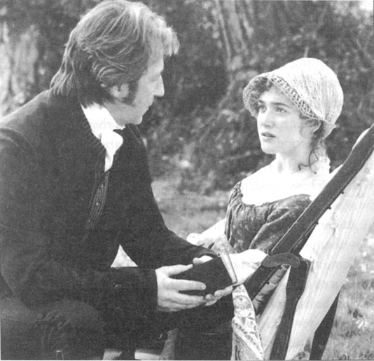
ACTIVITIES Before Reading
ACTIVITIES
Before Reading
1．Read the story introduction on the first page. Can you guess which of these ideas are true?
1) Both Elinor and Marianne suffer because...
a) they fall in love with unsuitable men.
b) they are too poor to attract interesting men.
c) they are both deceived by their admirers.
d) they fall in love with the same man.
2) Eventually the two sisters...
a) move back into their family home.
b) inherit their half-brother's fortune.
c) confess their guilty secret.
d) become more like each other.
e) marry for love.
2．Read the story introduction again, and say whether you agree or disagree with these statements, and why.
1) People with practical commonsense opinions are usually quite boring.
2) People who are full of passionate and romantic feeling all the time are very amusing.
3) True love can only be felt by the young. Middle-aged people cannot expect to fall in love.
4) Everyone should marry by the age of thirty-five.
5) Love is the most important thing in a woman's life; work, or sport, is the most important thing in a man's.
ACTIVITIES While Reading
ACTIVITIES
While Reading
1．Read Chapters 1 to 3. Who said this, and to whom? What, or who, were they talking about?
1) 'I would not wish to do anything mean.'
2) 'One feels one's fortune is not one's own.'
3) 'How shall we manage without her?'
4) 'It is too early in life to lose hope of happiness.'
5) 'Surely you must accept that he still has the full use of his arms and legs?'
6) 'How cold, how calm their last goodbyes were!'
7) 'Yes, he is well worth catching.'
8) 'In spite of your very sensible opinion, I shall go on disliking him for ever!'
9) 'Your sister, I understand, does not approve of second attachments.'
10) 'I have such a secret to tell you.'
11)'I have found you out, miss, in spite of your cleverness.'
12) 'Promise me you will change nothing, nothing at all!'
2．Before you read Chapter 4 (Departures and arrivals), can you guess the answers to these questions?
1) Who is going to depart?
2) Who is going to arrive?
3) Are Marianne and Willoughby going to tell everyone about their engagement?
4) Why was Colonel Brandon called away so suddenly?
3．Read Chapters 4 to 6. Are these sentences true (T) or false (F)? Rewrite the false sentences with the correct information.
1) Willoughby was planning to return to Devonshire very soon.
2) Elinor could not explain Willoughby's strange behaviour although she was confident that his intentions were honourable.
3) Edward Ferrars would rather be a vicar than a lawyer.
4) The lock of hair in Edward's ring belonged to his sister Fanny.
5) The Steele sisters were very fond of Lady Middleton's children.
6) Lucy Steele and Edward Ferrars had been secretly engaged for four years.
7) Elinor realized that Lucy was warning her to keep away from Edward.
8) Elinor told her family about Edward's secret engagement at once.
9) Marianne was anxious to see Colonel Brandon in London.
10) At the party in London, Willoughby spoke warmly and passionately to Marianne.
11) Willoughby decided to marry for money, to pay his debts.
12) Mrs Jennings was understanding about Willoughby's behaviour.
4．Before you read Chapter 7 (The truth about Willoughby), can you guess what the truth about Willoughby might be? Mark each of these possibilities Y (Yes) or N (No).
1) He already has a wife.
2) He has seduced a young girl.
3) He has much larger debts than anyone imagined.
4) He has killed someone in a duel.
5) He has stolen money from his cousin, Mrs Smith.
5．Read Chapters 7 to 9. Choose the best question-word for these questions, and then answer them.
Why/What/Who
1) ... was Marianne so upset when her mother's first letter arrived?
2) ... did Colonel Brandon tell Elinor about Willoughby's past?
3) ... relation to Colonel Brandon was the girl who was seduced by Willoughby?
4) ... fought a duel over this girl?
5) ... did John Dashwood advise Elinor to do?
6) ... did Mrs Ferrars choose as a wife for Edward?
7) ... told Fanny Dashwood about Lucy's engagement to Edward?
8) ... made Marianne realize that Elinor was capable of real feeling?
9) ... did Mrs Ferrars decide to leave her fortune to Robert, instead of Edward?
10) ... offered a living to Edward?
11) ... was the reason for Marianne's illness at Cleveland?
12) ... did Willoughby come to Cleveland?
6．Before you read Chapter 10 (Return to Barton), what do you think is going to happen? Choose some of these ideas.
1) Marianne decides that she will never marry, and Elinor marries Colonel Brandon.
2) Lucy finds a richer husband, so Edward is free to marry Elinor.
3) Mrs Dashwood marries Colonel Brandon.
4) Willoughby's wife dies, and Marianne marries Willoughby.
5) Both sisters make happy marriages.
ACTIVITIES After Reading
ACTIVITIES
After Reading
1．Here are some thoughts of characters in the story. Decide which characters they are, and describe what is happening at this point in the story. Then explain what the remarks show about each character, and their opinion of others.
1) 'How sad to see those fine dinner plates go! What possible use will they have for things of such high quality? And that piano! It looks very well in a large sitting-room like the one here, but is most unsuitable for a little country cottage...'
2) 'Miss Grey will have me, I'm sure of it. Fifty thousand a year! No more worries about debts, no need to sell my horses... I'm sorry about Marianne, but it's not my fault. I can't bear to be poor, and if Mrs Smith won't allow me any more money...'
3) 'Now I've met her, I can see I was right to be worried. She's just the type Edward would admire. The poor fool talks about her far too often. But she can't have him—because he's mine!'
4) 'She's dancing with him again. Look at that smile! She never smiles at me like that. I suppose it's natural. He's young, good-looking, self-confident, sociable... What chance do I have?'
5) 'What a scoundrel I am, for lying to her about that ring! I ought to tell her the truth, go away, and never see her again—but I can't bear it. Oh, why was I such a fool, four years ago!'
6) 'I do believe I've encouraged him to do it! Yes, he's going over to speak to her now. I mustn't listen, of course, but... yes, she's blushing! Oh, how wonderful! I'm sure they'll make each other very happy. I'm delighted for them both.'
2．Marianne tells Elinor that Willoughby has offered to give her a horse (see the middle of Chapter 3). Here is the conversation between Marianne and Elinor. Complete Marianne's side of the conversation.
ELINOR: Marianne, what's happened? You look very excited!
MARIANNE: ______
ELINOR: Last night? No, I can't possibly guess. Just tell me!
MARIANNE: ______
ELINOR: A horse? Willoughby promised you that? Marianne, what are you thinking of?
MARIANNE: ______
ELINOR: You mean you intend to go riding with Willoughby—just the two of you?
MARIANNE: ______
ELINOR: You must know what's wrong with that. People will talk. In any case, you cannot accept a horse as a present.
MARIANNE: ______
ELINOR: Because it would be such an expensive gift! People would think there was an understanding between you and Willoughby.
MARIANNE: ______
ELINOR: I know it's not their business, but people still talk.
MARIANNE: ______
ELINOR: Yes, I do understand how much you want it. But where will you keep it? How much will it cost to feed, to look after?
MARIANNE: ______
ELINOR: You know very well Mama couldn't possibly afford it.
MARIANNE: ______
ELINOR: I think you'll find that is the right decision, Marianne.
3．In this story, Elinor's actions and reactions are usually considered to represent 'sense', while Marianne's represent 'sensibility'. Look at the two examples given below, and add as many as you can to the list.
SENSE
· After her father's death, Elinor hides her deep sadness in order to discuss business with her brother and be polite to his wife.
SENSIBILITY
· Marianne falls in love with Willoughby because of his attractive appearance and romantic behaviour.
Do you think either sister has changed by the end of the story? If so, how much? Do you think the changes will last?
4．Here is the letter that Marianne writes to Willoughby after she meets him in London. Choose one suitable word to fill each gap.
Willoughby, how could you ______ to me like that ______ night? You were obviously ______ to speak to me, ______ my hand, or spend ______ time with me at ______. You turned away as ______ as you could. What ______ I done? Are you ______ with me? You know ______ well how much you ______ to me. I've never ______ my feelings for you, ______ perhaps this was rather ______. But you showed your ______ for me in so ______ ways. I cannot understand ______ has changed you! I ______ not changed.
I must ______ you to reply at ______. I am ill with ______! My heart is simply ______! Willoughby, have you no ______? If I really mean ______ to you any more, ______ return all of my ______, and the lock of ______ which you begged me ______ give you.
Marianne
5．Do you agree or disagree with these statements about the characters in the story? Discuss your answers.
1) In those times marriage was a practical business, so Lucy, being poor, was right to try to find the richest husband she could.
2) Willoughby was not completely to blame for Marianne's broken heart. She should have been more cautious about allowing herself to fall in love with him.
3) Edward should have been open about his feelings for Elinor, and broken his engagement to Lucy.
4) Elinor knew that Lucy saw her as a rival, not as a friend, so there was no need for Elinor to keep Lucy's secret.
6．Here is the beginning of an alternative ending to the novel (see the middle of Chapter 10). Complete the ending in your own words, giving your opinions about whether these marriages will be successful or not.
Elinor grew impatient for some news of Edward, and it was not long before the Dashwoods heard that he and Lucy were married. Elinor had prepared herself for this moment, and was able to remain calm, despite Marianne's sympathetic sobbing. She found most relief in the company of Colonel Brandon, who came regularly to Barton to comfort her. In fact, as Mrs Jennings had hoped, the understanding between them grew into a real attachment. Very soon, the colonel, having realized Marianne could never love him, asked Elinor to do him the honour of marrying him, and was accepted.
Several months after Elinor's wedding, news came of Mrs Willoughby's sudden death in a riding accident. Marianne found herself thinking of Willoughby more and more, and when he arrived at Barton one day...
Which ending do you prefer—this one, or the one in the story? Explain why.
封底
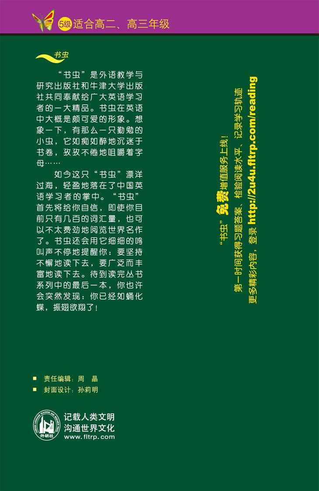